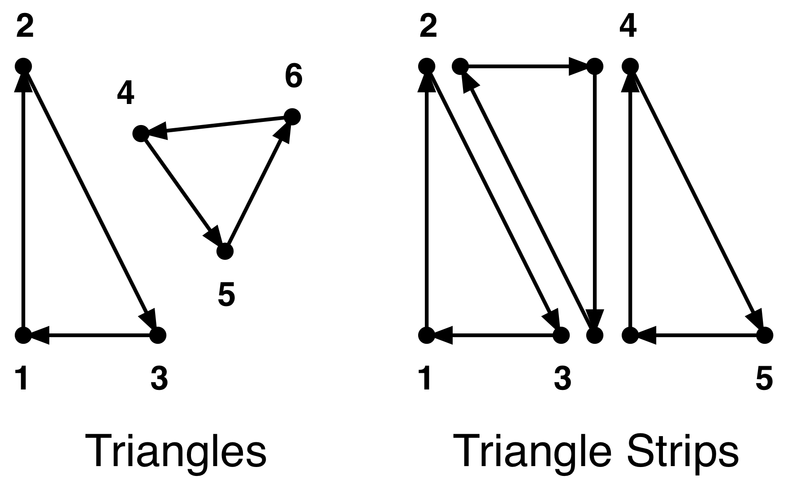
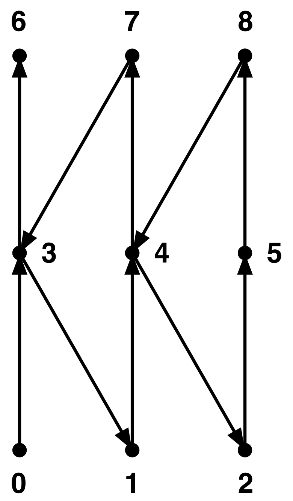
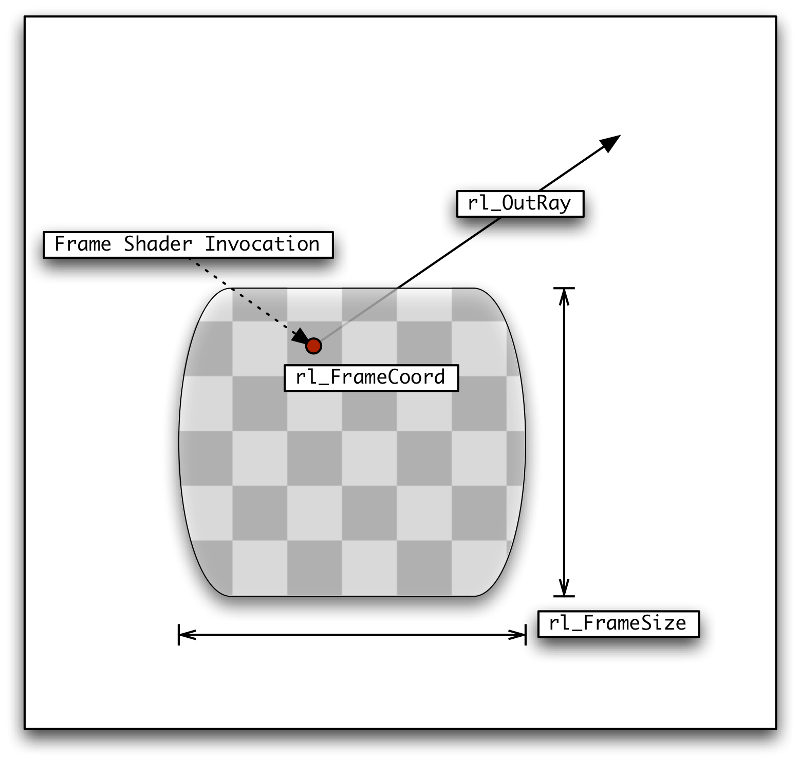
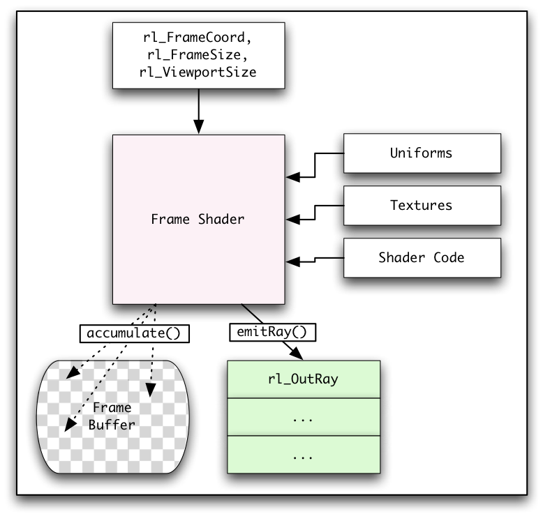
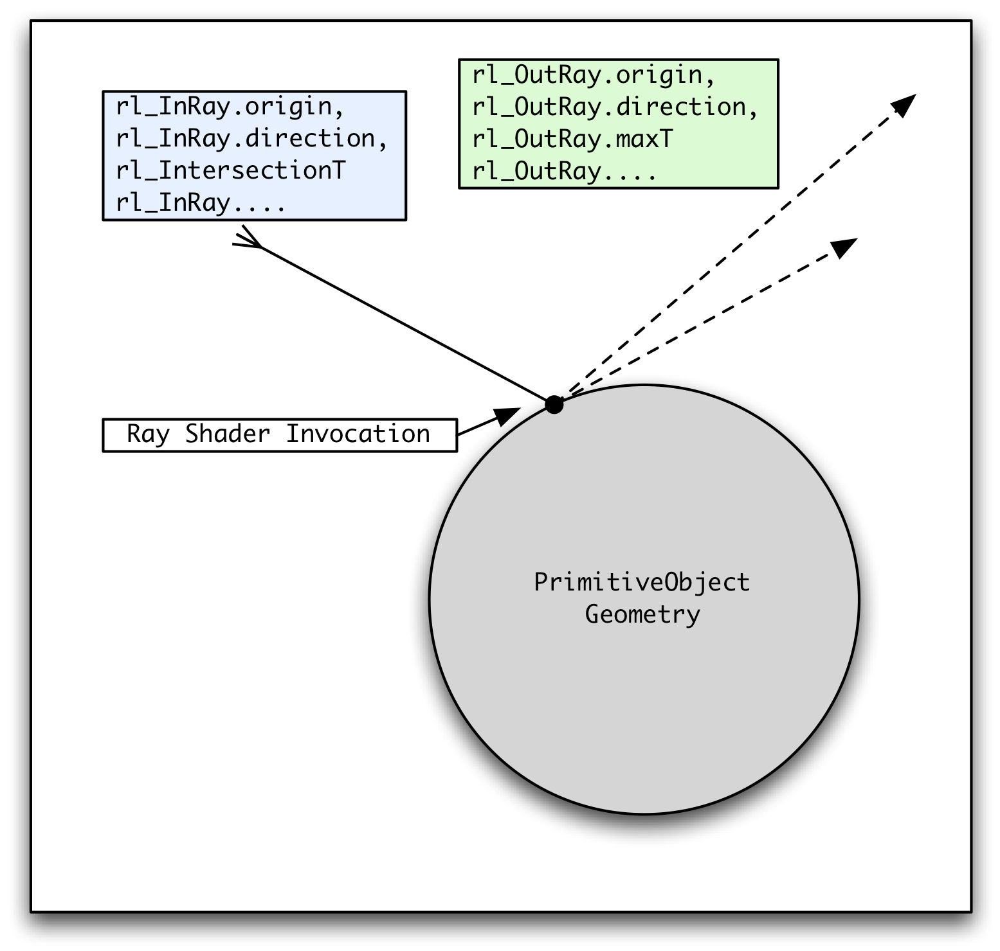
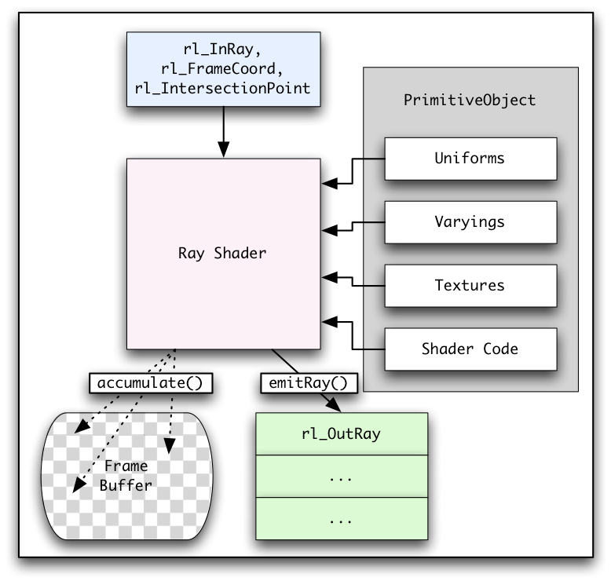
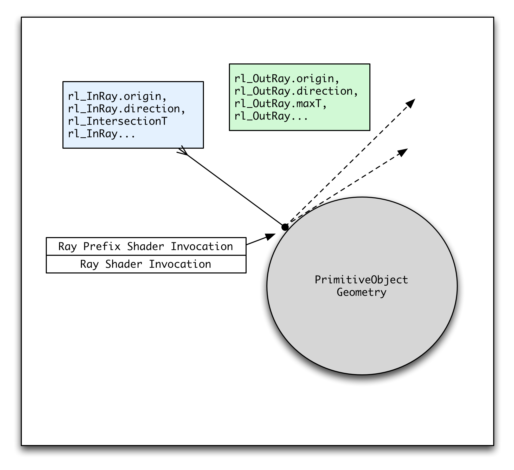
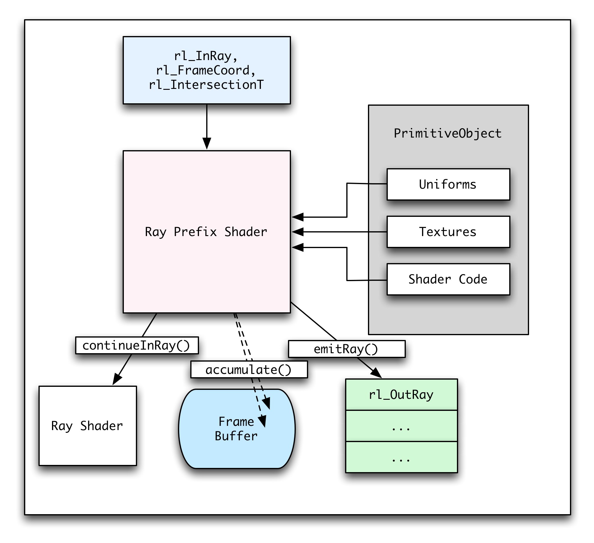

1. Preface
OpenRL™ is a trademark of Caustic Graphics, Inc. OpenRL™ uses constructs and API concepts derived from OpenGL ES™, which is a trademark of Khronos Group. Ownership of the OpenGL™ and OpenGL ES™ trademarks and any copyright in any associated documentation by the Khronos Group is acknowledged. Usage or reference to any sections of any OpenGL ES™ documentation does not imply approval or agreement from Khronos Group to the OpenRL™ API. OpenRL™ a is not a recognized API of Khronos as of the date of publication of this document.
2. Introduction
Ray tracing is a long standing technique used extensively by professional 3D users and researchers. By allowing inter-object visibility, ray tracing enables more accurate and intuitive implementation of many phenomena such as reflection, refraction, occlusion, shadowing, global illumination, collision detection, etc. Traditionally, however, ray tracing was too resource intensive for broad industry application.
With the advent of faster compute hardware, ray tracing is gaining industry acceptance for many applications where it was previously not feasible. These include real-time applications such as preview tools, simulations and even gaming.
Creating a fast ray tracing application has traditionally involved several challenges. Developers must also painstakingly tune the ray caster for the available compute platform, quickly build high quality acceleration structures and map their material shaders to the underlying hardware. Just as OpenGL provides an interface that allows 3D applications to make use of the available hardware for efficient rasterization, OpenRL™ enables ray tracing.
OpenRL™ (Open Ray Tracing Library) is an open standard for incorporating ray tracing functionality into applications. It transparently makes use of a variety of compute platforms including CPUs, GPUs, and other compute devices, giving developers portability and efficiency on any available hardware. The OpenRL™ implementation handles the runtime compilation of shader programs from the application, builds efficient acceleration structures automatically and maps ray tracing in the best way to the underlying hardware.
OpenRL™ incorporates many concepts and paradigms from OpenGL ES. This provides developers with familiar API semantics as well as enhancing the interoperability with OpenGL ES when building applications that use ray tracing and rasterization side-by-side. By using common formats for vertex and pixel buffers, assets produced in one library can be conveniently consumed by the other without requiring format conversion and minimizing memory copies.
It is important to understand that OpenRL™ is not an interface to a full featured renderer. The API provides low-level support for tracing rays and executing shader code, but does not directly implement features such as global illumination, anti-aliasing, or sub-surface scattering. Since these features can be implemented with a variety of techniques, each with their own performance and quality trade-offs, OpenRL™ does not impose a particular implementation of these high level features. It is a set of building blocks designed to make the implementation of these high level techniques easy and efficient.
OpenRL™ is designed to support a wide range of applications including professional rendering packages, interactive games, and even non-graphical applications used for simulation and physical modeling. By providing a clean abstraction between the mechanics of casting rays and the uses of ray tracing, OpenRL™ can save a lot of work for a developer who wants to make use of ray tracing. In addition, OpenRL™ allows for optimal acceleration of ray tracing on heterogeneous and varied hardware.
The target audience for OpenRL™ is programmers who are already familiar with the concepts of ray tracing, but want a portable and convenient abstraction that allows them to focus on the uses and benefits of ray tracing, rather than spending time optimizing for a specific platform.
This Document begins by explaining the basic concepts of OpenRL™ and its architecture, and continues on to a detailed description of the platform interface, followed by the application interface, and the shader programming language. Where appropriate, simple examples are provided.
3. Glossary
- Application
-
The program making use of OpenRL™.
- Child Ray
-
A ray emitted from a shader program. See Parent Ray.
- Context
-
A data object created by the host program to manage all interactions with OpenRL™.
- Data Upload
-
The phase of execution of an OpenRL™ application where data is made available to the OpenRL™ implementation. This data might include geometry, texture data, or shader code.
- Frame Buffer Object
-
A data object in OpenRL™ that manages the association with the buffers for rendering output data.
- Frame Rendering
-
The phase of execution of an OpenRL™ application where all shader program execution occurs, ultimately producing the result data.
- Frame Shader
-
A shader type in OpenRL™. A frame shader executes once for every pixel in the viewport. It can emit primary rays, sample from textures, accumulate into the frame buffer, perform screen space filtering, etc.
- Global Illumination
-
The set of techniques in which lighting is calculated by taking into account light reflecting from all surfaces in the scene, in addition to light emitted from light sources. Sometimes abbreviated as GI.
- Host Program
-
All components of an application program that are not part of a shader program. Host programs are usually compiled in advance and run on the CPU.
- Occluding Geometry
-
Geometry that blocks occlusion rays, causing them to be discarded. Unless otherwise specified, geometry is considered to be occluding geometry. See Occlusion Ray.
- Occlusion Ray
-
A ray used to determine whether or not occluding geometry exists along the path of the ray. Occlusion Rays are useful to implement shadowing by testing if the path to a light is unobstructed.
- Parent Ray
-
A ray that intersects the geometry of a primitive object causing a ray shader to execute. See Child Ray.
- Position Data
-
The subset of geometry data defining vertices in 3D. Only position data can be intersected by rays.
- Primary Ray
-
A ray that was emitted from a frame shader. Primary rays are at the top level of a ray tree.
- Primitive Object
-
A data object in OpenRL™ representing a discrete component of the scene. A primitive object may reference scene geometry, shader programs, texture data, uniform block data, uniform values, etc.
- Program Object
-
A data object in OpenRL™ that encapsulates a shader program.
- Ray Attribute
-
A field belonging to all rays emitted in the scene. The ray attributes represent a scene-wide contract between all of the shaders in the scene.
- Ray Class
-
The category to which a ray belongs. The application can define the meaning of each ray class, but the total number of supported ray classes is limited by the OpenRL™ implementation.
- Ray Shader
-
A shader type in OpenRL™. A ray shader usually executes when a ray intersects geometry.
- RLSL
-
The shader programming language used in OpenRL™. RLSL is nearly syntax-identical to GLSL but exposes features to facilitate ray tracing.
- Scene
-
The collection of data used during frame rendering. This includes a set of primitive objects and a frame shader program.
- Scene Setup
-
The phase of execution of an OpenRL™ application where the primitive objects in the scene are defined.
- Secondary Ray
-
A ray that is emitted by a ray shader. These rays can be the result of reflections, transparency, lighting, shadows, etc.
- Shader Program
-
A component of an application, written in RLSL, that is invoked to perform a specific function in the frame rendering, e.g. when a ray intersects an object.
- Shadow Ray
-
A common name for a ray used to test whether or not the line segment between a point on a surface and a light is occluded by any geometry.
- Ray Differentials
-
Data associated with a ray to track the ray’s "spread". Ray differentials are used for anti-aliasing techniques.
- Ray Tree
-
The tree representation of the rays emitted at a given pixel and each generation of child rays. Analysis of ray tree characteristics is a valuable tool for understanding the performance and appearance of a ray traced render.
- Sampler
-
A data type used in RLSL that references a texture and allows that texture to be read using a filter mode. Texture sampling may blend multiple texel values together and may take into account ray differential data.
- Texture
-
A data object in OpenRL™ representing data that can be "sampled" by a shader program. Texture data is usually graphical in nature.
- Uniform Block
-
A data object in OpenRL™ representing a block of shader-specific data. Uniform blocks are useful for supplying non-graphical data to shader programs. The format of the data in the uniform block is defined by the shader program that accesses it.
- Vertex Buffer Object
-
A data object in OpenRL™ representing a set of vertices.
- Viewport
-
The region of the frame buffer for which the frame shader is invoked during a frame rendering operation.
4. The OpenRL™ Overview and Architecture
OpenRL™ provides an efficient low-level foundation upon which a variety of ray tracing tools and applications can be built.
-
Storing and managing the scene geometry.
-
Storage for textures, uniform block data, vertex buffers, frame buffers.
-
Finding the intersections of rays with scene geometry.
-
Execution of shader programs including vertex shaders, frame shaders, and ray shaders.
This leaves many rendering details open for the application to implement. For example, OpenRL™ does not impose any restrictions that accompany a built-in lighting model. Clients can implement any lighting model they choose. Custom visual effects and rendering features such as sub-surface scattering, depth of field, and fog can be implemented using programmable shaders.
OpenRL™ consists of an application interface to define the scene and invoke the ray tracer, and a shader programming model to describe the interactions with rays in the scene. This API, wherever appropriate, looks to the precedents and conventions established by OpenGL and GLSL to leverage existing developer familiarity.
OpenRL™ makes use of a context that is instantiated by the host program. The context is used to manage and synchronize all interfaces to the OpenRL™ implementation.
An OpenRL™ program can be thought of as executing in three phases: data upload, scene setup, and frame rendering. Data upload and scene setup are directed by the host program using the application interface. Frame rendering, the final phase, is initiated by the host program but mainly involves the interactions of shader programs and the rays that they emit. The phases are conceptually distinct but are not required to happen strictly synchronously. However, the entire scene must be defined and all scene assets must be available prior to initiating a frame rendering operation.
4.1. Data Upload
Ray tracing works by finding each ray’s closest intersection with a geometric object in the scene. This process involves searching through the entire scene. In contrast to a rasterizing API like OpenGL, OpenRL™ must have all scene data accessible before frame rendering can begin.
There are four categories of asset data that can be used in a scene: geometry data, uniform block data, texture data, and shader programs.
4.1.1. Geometry Data
Geometry data describes all data in the scene that defines 3D shapes. For example, the triangular mesh defining a teapot is considered geometry data. Attributes that are associated with vertices, e.g. vertex normals, are also considered geometry data. Only a subset of geometry data known as position data can be intersected by rays.
Geometry data is submitted to OpenRL™ in the form of triangles or triangle strips. This data needs to be uploaded into vertex buffer objects to be used by OpenRL™.
In addition to the data describing the vertices themselves, vertex buffer objects are also used for indices defining which vertices make up a triangular mesh. This allows complex meshes, where many triangles share the same vertex, to be created without redundantly expressing the vertex data. The section, Defining Geometry Data with Vertices contains a complete description on how to specify triangle-based geometry in OpenRL™.
4.1.2. Uniform Block Data
Uniform block data is data that is made available to a shader program by the host program. To the shader, it is read-only and remains constant throughout the process of frame rendering. For example, the location of light sources in the scene could be specified as uniform block data.
The format of the uniform block is defined by the shader that accesses it. The format supplied by the shader must match the format of the data in the uniform block’s data buffer, however.
The section, Creating and Managing Uniforms and Uniform Blocks contains a complete description of the API for working with uniform blocks.
4.1.3. Texture Data
Texture data is similar to uniform block data. Like uniform block data, texture data can be randomly accessed by a shader. Unlike uniform block data, the process of accessing texture data involves the use of a sampler that can potentially blend the values of multiple texels together to achieve smooth filtering. Textures can also support MIP mapping, allowing multiple resolutions to be sampled for efficient anti-aliasing.
Textures also differ from uniform blocks in that texture data must be expressed in one of the supported texture formats.
Using a texture makes sense if the data is visual in nature, ie, surface color, another surface property like reflectivity, or a normal vector. If the data can be more easily thought of as a lookup table then a uniform block is more appropriate.
The section, Creating and Managing Textures contains a complete description on textures in OpenRL™.
4.1.4. Shader Programs
Shader programs are the fourth and final category of data used to define a scene. Shader programs include the shader entry points that are executed by the OpenRL™ implementation during frame rendering.
A shader program is described with segments of RLSL code compiled and linked together into a program object. Some of these segments of RLSL code include a main() function and describe the behavior of a shader. Other segments export library functionality that can be used by shader segments.
Each shader must be one of the following types:
-
Vertex shader
-
Ray shader
-
Frame shader
Vertex shaders manipulate geometry data while ray shaders interact with rays and can be used to define the appearance of a material. Frame shaders operate on the output frame and can be used to implement the camera in the scene.
Vertex shaders and ray shaders must occur together in a program, while frame shaders must exist in a program by themselves.
For complete information about shader programs, see the section Compiling Shaders and Linking Program Objects. See The OpenRL™ Shading System section for complete documentation of shader features and a description of how shaders interact.
4.2. Scene Setup
All of the uploaded data in a scene must now be assembled into associations that define the objects in the scene. For example, we must specify that the teapot mesh should be shaded with the shader defining a metallic material, and it needs access to the uniform block specifying the scene’s light sources and the texture providing its surface roughness.
Conceptually, each object in the scene, e.g. the teapot, is represented by a data object called a primitive object. Each primitive object contains all of the state needed to render it in the scene. Collectively, the primitive objects in the scene can be thought of as a flat scene graph.
4.2.1. Primitive Objects
A primitive object is a data object that encapsulates associations with the scene assets needed to render a discrete object in the scene. A primitive object also has parameters known as uniforms. Uniforms are used to communicate data from the host program into the shader program. Uniforms can be a simple constant value like an integer or a vector. A uniform can also specify a sampler, which references a texture.
A primitive object can encapsulate the following information:
-
Association with geometry data
-
An association with a shader program
-
Associations with uniform block data
-
Uniform values
Like OpenGL, OpenRL™ uses a stateful binding model to define many associations. After a primitive object is bound, all subsequent calls to draw geometry, set vertex attributes, use a shader program, set a uniform, etc. are captured by the bound primitive. The bound primitive continues to capture the calls until the primitive object is unbound or another primitive object is bound.
See the section Creating and Managing Primitive Objects for complete information about defining primitive objects.
4.2.2. Global Scene State
The scene must contain one shader program that is not associated with a primitive object. That is the shader program that implements the scene’s frame shader. Uniforms set when no primitive is bound will be available to the frame shader program.
A frame buffer object must also be created and bound to the scene. The frame buffer object contains attachment points to allow output data from the frame rendering to be written to one or more textures. At least one attachment point must be attached to a texture. All textures attached to a frame buffer object must have the same x and y dimensions. The texture’s dimensions are the dimensions of the frame buffer.
After frame rendering the texture can be read by the host program or attached for use as an asset in a subsequent frame rendering operation.
The viewport is the region of the frame buffer that is affected by the frame rendering operation. The viewport can be set prior to frame rendering. It usually makes sense for the viewport to encompass the entire frame buffer, but some applications may wish to render only a subset of the frame.
For complete information about frame buffer objects and the viewport, see the section, Working with Frame Buffer Objects and the Viewport.
4.3. Frame Rendering
Once the assets have been uploaded and the scene has been setup, frame rendering can take place. Unlike OpenGL, OpenRL™ requires the host program to explicitly initiate the frame rendering. Once the frame rendering process is initiated, it runs until the frame is complete without involvement from the host program.
The frame is considered complete once the frame shader has completed execution for every pixel in the viewport and all ray queries have been resolved by determining their appropriate intersections and executing the appropriate ray shaders.
4.3.1. Vertex Shader Execution
For each primitive object in the scene, the associated vertex shader runs once for every vertex of the primitive object’s associated geometry data. The vertex shader is responsible for mapping information in the vertex buffers into the vertex’s final position as well as setting all other vertex attributes that are varying across the surface of the object.
The vertex positions for all primitive objects must be established by the vertex shader before any rays can be traced in the scene.
EXAMPLE: Rippling Geometry. This example shows a vertex shader that causes the geometry to ripple along the Y axis, using a uniform value called "time".
// The positionAttribute vertex attribute uploaded to a vertex buffer object attribute vec4 positionAttribute; // A variable representing the animation time value uniform float time; void main() { // Set the position, as a function of the positionAttribute and time rl_Position = positionAttribute + vec4(0.0, sin(time), 0.0, 0.0); }
4.3.2. Frame Shader Execution
The frame shader begins executing once the geometry for all primitive objects in the scene has been established. The frame shader is the source for all primary rays in the scene. It is used to implement the camera through which the scene is viewed. It can also be used for screen-space effects like applying an image filter.
The scene must have exactly one actively bound frame shader. This frame shader executes once for every pixel in the viewport, and is responsible for emitting all of the rays that will contribute color to that pixel. Frame shaders can access uniforms and uniform blocks and can sample textures.
Inside a frame shader, the position of the pixel and the size of the frame buffer can be accessed through RLSL built-in variables.
EXAMPLE: Pinhole Camera. This example implements a Pinhole Camera that can be moved around the scene with a uniform. For simplicity, this example camera does not have the ability to change orientation.
uniform vec3 cameraPosition; void main() { createRay(); // Set the ray's origin to our camera position rl_OutRay.origin = cameraPosition; // Set the ray's direction dependent on the position of the pixel in // the frame buffer rl_OutRay.direction = vec3(rl_FrameCoord.xy / rl_FrameSize.xy - 0.5, -1.0); emitRay(); }
4.3.3. Ray Shader Execution
Each primitive object must have exactly one bound ray shader. That shader is responsible for implementing the lighting and material effects on the object surface, at the point in the scene where the ray intersects the primitive object’s geometry. Ultimately, the output from a ray shader can be a value accumulated into the frame buffer and/or additional rays.
A ray shader can access uniforms of its primitive object as well as the interpolated varying values at the point where the ray intersected the primitive object’s geometry. For a primitive object composed of triangles, the value of the varying provided to the ray shader is interpolated between the values provided by the vertex shader at the three vertices of the intersected triangle.
A ray shader also has access to the parent ray that caused the ray shader to execute.
EXAMPLE: Ray Shader with Uniforms and Varyings. This example shows a ray shader that displays the normals of the geometry in color space. It uses a varying to achieve smooth normal values across a tessellated mesh, and a uniform to control the brightness of the object.
// Define the brightness uniform, that is constant across the surface of the // entire object uniform vec3 brightness; // Define the normal varying that smoothly varies across the surface varying vec3 normal; // The entry point where the code execution begins, when the ray intersects // this object void main() { // Accumulate the color contribution into the frame buffer accumulate(brightness * (0.5 + 0.5 * normal)); }
4.3.4. Ray Prefix Shader Execution
Ray prefix shaders are an optional shader that can be attached to existing primitives or to a primitive all by itself. This shader runs before any ray shading is performed on the ray and is capable of editing the attributes of the ray or deciding to terminate the ray before its ray shader executes. These shader types are not enabled by default and must be enabled by the use of the context creation attribute kOpenRL_EnableRayPrefixShaders.
A ray prefix shader can access the uniforms of its primitive object but has no access to varyings from the original ray. Additionally, ray prefix shaders can access all user-defined ray attributes.
EXAMPLE: Ray Prefix Shader Setup From a Ray Shader. This example shows how to setup a prefix primitive on a ray from a ray shader. Once the ray is sent, the prefix shader for the set primitive will execute before any subsequent ray shading has occured.
// Define the primitive that has the prefix shader bound to it uniform primitive prefixPrim; // The entry point where the code execution begins for a ray shader void main() { // Create a new ray createRay(); // Set the prefix primitive on this ray rl_OutRay.prefixPrimitive = prefixPrim; // Send the ray away for prefix and then ray shading emitRay(); }
EXAMPLE: Ray Prefix Shader. This example will take the color value of an incoming ray, modulate it by the distance the ray traveled, and then let the ray continue on to the ray shading system.
// Define the color attribute for the ray rayattribute vec3 color; // The entry point where the code execution begins, when the ray intersects with an // object and has a prefix primitive attached to it void main() { // Modulate the color of the ray by the distance the ray traveled rl_InRay.color *= 1.0 / rl_IntersectionT; // Continue the ray on to the ray shader continueInRay(); }
5. The OpenRL™ Platform Interface
The OpenRL™ platform interface provides the abstractions to interface with OpenRL™ on different operating systems and hardware configurations.
OpenRL™ implementations should supply these 3 header files:
-
OpenRL.h: Provides operating system specific and vendor specific functionality to create an OpenRL™ context. -
rl.h: Declares all entry points used to interact with an OpenRL™ context. This is the core OpenRL™ functionality and is platform independent. -
rlplatform.h: Provides compiler and Application Binary Interface support needed for OpenRL™. Most OpenRL™ programmers don’t need to interact with the contents of this file.
Entry points used to create, manage, and destroy an OpenRL™ context are declared in OpenRL.h. A context must be created and activated by the host program prior to using any entry points declared in rl.h.
5.1. Platform Interface Data Types
5.1.1. OpenRLContext
OpenRLContext contains the runtime state, hardware and operating system abstractions, and execution environment for OpenRL™. There can be only one active OpenRLContext in a given host program at one time, but multiple OpenRLContexts can be created and initialized.
5.1.2. OpenRLContextAttribute
OpenRLContextAttributes define the special options available to contexts.
See the documentation for OpenRLCreateContext for a list of possible values and their meanings.
5.1.3. OpenRLNotify
OpenRLNotify is a function type that allows OpenRL™ to report errors to the host program.
An OpenRLNotify function has the following prototype:
void MyOpenRLNotifyFunction(RLenum error, const void *private_data, size_t private_size, const char *message, void *user_data);
-
error: A code specifying the type of error that occurred. Possible values for this code are:-
RL_NO_ERROR
-
RL_INVALID_ENUM
-
RL_INVALID_VALUE
-
RL_INVALID_OPERATION
-
RL_OUT_OF_MEMORY
-
RL_INVALID_FRAMEBUFFER_OPERATION
-
RL_UNIMPLEMENTED
-
-
private_data: Data specific to the error. Different error types have different data formats. -
private_size: The size of the data buffer, in bytes, referenced by private_data. -
message: A human-readable description of the error. -
user_data: A pointer passed when the OpenRLContext was created, to communicate with the host program.
5.2. OpenRL.h Functions
5.2.1. OpenRLCreateContext()
This function is used to create and initialize an OpenRL™ context. Once created, the context still must be activated by calling OpenRLSetCurrentContext(), prior to use.
OpenRLContext OpenRLCreateContext(const OpenRLContextAttribute *attributes, OpenRLNotify notify, void *user_data);
-
returns: The newly createdOpenRLContext. Returns NULL if an error occurred. -
attributes: A NULL terminated array ofOpenRLContextAttributesto apply to the context being created. Pass NULL to specify a context without any special attributes. Some attributes require an integer argument to follow immediately after the attribute name.-
kOpenRL_RequireHardwareAcceleration -
No argument. The OpenRL™ context will only be created if the underlying ray tracing hardware is capable of delivering a high level of performance.
-
kOpenRL_ExcludeCPUCores -
Integer argument required. Gives the number of CPU cores that OpenRL™ should reserve for the host application. Otherwise it will create one thread for each CPU core for use when rendering.
-
kOpenRL_DisableHyperthreading -
Integer argument required. Give a non-zero argument to make OpenRL™ ignore hyperthreading when calculating CPU core count for thread creation.
-
kOpenRL_DisableStats -
Integer argument required. Give a non-zero argument to make OpenRL™ disable stats. This prevents the Caustic Graphics StatsPlotter tool from reading stats from this program.
-
kOpenRL_DisableProfiling -
Integer argument required. Give a non-zero argument to prevent the Caustic Graphics Profiler tool from connecting to this program.
-
kOpenRL_DisableTokenStream -
Integer argument required. Give a non-zero argument to disable the ability for this program to produce a token stream for debugging.
-
-
notify: AnOpenRLNotifyfunction used by the context to report errors to the host program. This argument should be one of:-
A custom
OpenRLNotifyfunction implemented by the host program -
OpenRLLogMessagesToStdout -
OpenRLLogMessagesToStderr
-
-
user_data: A pointer that can be used to communicate data to anOpenRLNotifyfunction.
5.2.2. OpenRLDestroyContext()
This function is used to cleanup and destroy an OpenRLContext. Destroying an OpenRL™ context will release all buffers, textures, framebuffers, shaders, programs, and primitives that were associated with that context. If the context that is destroyed is the current context, further use of entry points declared in rl.h will result in undefined behavior.
int OpenRLDestroyContext(OpenRLContext ctx);
-
returns: Returns a non-zero value if the operation was successful, returns 0 if an error was encountered. -
ctx: TheOpenRLContextto cleanup and destroy.
5.2.3. OpenRLStopContext()
This function is used to force a render to stop without completing. OpenRLStopContext() may be called by any thread and does not use that thread’s current OpenRLContext. If another thread is in a call to rlRenderFrame() with the specified OpenRLContext when OpenRLStopContext() is called, it will return immediately with an error status, leaving the contents of the its bound framebuffer attachments in an undefined state. The calls to OpenRLStopContext() and rlRenderFrame() on either thread are not guaranteed to return in any particular order.
void OpenRLStopContext(OpenRLContext ctx);
-
ctx: TheOpenRLContextto stop.
5.2.4. OpenRLSetCurrentContext()
This function is used to activate an OpenRLContext and make it the current context. All entry points declared in rl.h will execute with respect to the current context. The current context is responsible for maintaining the state of OpenRL™.
A host program can have only one current context at a time. If there is already a current context active, calling this function will deactivate the existing current context prior to activating the supplied context.
int OpenRLSetCurrentContext(OpenRLContext ctx);
-
returns: Returns a non-zero value if the operation was successful, returns 0 if an error was encountered. -
ctx: TheOpenRLContextto activate and designate as the current context.
5.2.5. OpenRLGetCurrentContext()
This function is used to get the current context. If no context has ever been set current, NULL is returned.
OpenRLContext OpenRLGetCurrentContext();
-
returns: The current context or NULL if there is none.
5.2.6. OpenRLGetHardwareAcceleratorCount()
This function is used to query the number of RTUs in the system directly. This implicitly enables the user to query hardware presence without requiring an OpenRL context to be created.
unsigned int OpenRLGetHardwareAcceleratorCount();
-
returns: Returns the number of RTUs that have been detected in the system.
5.2.7. OpenRLLogMessagesToStdout
This function should only be passed as an argument to OpenRLCreateContext. It logs OpenRL™ error messages from to standard out (stdout). It should not be called by the host program.
5.2.8. OpenRLLogMessagesToStderr
This function should only be passed as an argument to OpenRLCreateContext. It logs OpenRL™ error messages from to standard error (stderr). It should not be called by the host program.
6. The OpenRL™ Application Interface
The Application Interface encompasses all of the functions and entry points available within an OpenRLContext. These interfaces are declared in the rl.h header file.
6.1. Base Data Types
These data types are used within the OpenRL™ API. They can be used for user data, as when used as uniforms and in uniform blocks, and they are used as arguments to OpenRL™ entry points.
-
RLvoid -
Empty data type.
-
RLbyte -
8-bit signed integer.
-
RLshort -
16-bit signed integer.
-
RLint -
32-bit signed integer.
-
RLlong -
64-bit signed integer.
-
RLubyte -
8-bit unsigned integer.
-
RLushort -
16-bit unsigned integer.
-
RLuint -
32-bit unsigned integer.
-
RLulong -
64-bit unsigned integer.
-
RLintptr -
Pointer-sized signed integer.
-
RLboolean -
Boolean data type. Allowable values are
RL_TRUEandRL_FALSE. -
RLenum -
Enumerated data type with predefined values. The allowed values depend on the function or structure using the
RLenum. -
RLbitfield -
Array of 1 bit values representing a bit mask.
-
RLfloat -
32-bit single-precision floating-point data type.
-
RLdouble -
64-bit double-precision floating-point data type.
-
RLsize -
Pointer-sized signed integer representing a count of bytes or other data elements.
-
RLbvec2 -
2-element vector of
RLbooleanelements. -
RLbvec3 -
3-element vector of
RLbooleanelements. -
RLbvec4 -
4-element vector of
RLbooleanelements. -
RLivec2 -
2-element vector of
RLintelements. -
RLivec3 -
3-element vector of
RLintelements. -
RLivec4 -
4-element vector of
RLintelements. -
RLvec2 -
2-element vector of
RLfloatelements. -
RLvec3 -
3-element vector of
RLfloatelements. -
RLvec4 -
4-element vector of
RLfloatelements. -
RLmat2 -
2x2 matrix of
RLfloatelements, stored in column-major order. -
RLmat3 -
3x3 matrix of
RLfloatelements, stored in column-major order. -
RLmat4 -
4x4 matrix of
RLfloatelements, stored in column-major order. -
RLbuffer -
Handle to an OpenRL™ buffer object.
-
RLprimitive -
Handle to an OpenRL™ primitive object.
-
RLtexture -
Handle to an OpenRL™ texture object.
-
RLframebuffer -
Handle to an OpenRL™ framebuffer object.
-
RLshader -
Handle to an OpenRL™ shader object.
-
RLprogram -
Handle to an OpenRL™ program object.
6.2. Compiling Shaders and Linking Program Objects
Before a program object can be used by a primitive object, it must
contain valid executable code. This executable code is created
by attaching compiled shaders to the program with
rlAttachShader and linking them together
with rlLinkProgram. After a program object
has been linked successfully shaders can be detached, new shaders
can be attached, shader source can be changed and shaders recompiled
(etc.) all without modifying the executable code of the program
object. A program object’s executable code is only modified when
the program is linked.
A program object’s link status may be queried with
rlGetProgramiv. A value of RL_TRUE will be
returned if the last link operation was successful and RL_FALSE
otherwise.
A shader is compiled by creating a shader object with
rlCreateShader, setting the source code
strings for the shader object with rlShaderSource
and finally compiling with rlCompileShader.
Compile status can be queried with rlGetShaderiv
with an argument of RL_COMPILE_STATUS. A value of RL_TRUE will
be returned if the last compile operation was successful and
RL_FALSE otherwise.
RLshader is a handle to a shader object previously created
by a call to rlCreateShader. The shader object
is deleted and the handle invalidated by calling
rlDeleteShader.
RLprogram is a handle to a program object previously created
by a call to rlCreateProgram. The
program object is deleted and the handle invalidated by
calling rlDeleteProgram.
6.2.1. rlCreateShader
Creates a shader object.
RLshader rlCreateShader( RLenum type )
Parameters
-
type -
Specifies the type of shader to be created. Must be
RL_FRAME_SHADER,RL_RAY_SHADERorRL_VERTEX_SHADER.
Return Value
Returns a handle to a new empty shader object of type type.
Returns NULL if there was an error creating the shader object.
Discussion
rlCreateShader creates an empty shader object with a type of type and
returns a handle by which it can be referenced. A shader object is used
to maintain the source code strings that define a shader. type indicates
the type of shader to be created.
Three types of shaders are supported:
-
RL_FRAME_SHADER -
A shader intended to be run for each pixel of the framebuffer.
-
RL_VERTEX_SHADER -
A shader intended to be run on the programmable vertex processor for each vertex of a primitive.
-
RL_RAY_SHADER -
A shader intended to be run when a ray intersects geometry or misses.
Errors
Returns NULL if an error occurs creating the shader object.
RL_INVALID_ENUM is returned if type is not RL_FRAME_SHADER,
RL_RAY_SHADER or RL_VERTEX_SHADER.
Associated Gets
6.2.2. rlDeleteShader
Delete a shader object.
void rlDeleteShader( RLshader shader )
Parameters
-
shader -
Specifies the shader object to be deleted.
Discussion
rlDeleteShader frees the memory and invalidates the handle associated with the
shader object specified by shader. This command effectively undoes the effects
of a call to rlCreateShader.
If a shader object to be deleted is attached to a program object, it will be flagged for deletion, but it will not be deleted until it is no longer attached to any program object for any rendering context. Which is to say, it must be detached from wherever it was attached before it will be deleted. When a program is deleted, any attached shaders are detached automatically.
To determine whether an object has been flagged for deletion, call rlGetShaderiv
with arguments shader and RL_DELETE_SHADER.
Errors
RL_INVALID_VALUE if shader is not a handle to a valid shader object.
Associated Gets
rlGetAttachedShaders with the program object to be queried.
rlGetShaderiv with arguments shader and RL_DELETE_STATUS.
6.2.3. rlCompileShader
Compile a shader object.
void rlCompileShader( RLshader shader )
Parameters
-
shader -
Specifies the shader object to be compiled.
Discussion
rlCompileShader compiles the source code strings that have been stored
in the shader object specified by shader.
The compilation status will be stored as part of the shader object’s state.
This value will be set to RL_TRUE if the shader was compiled without
errors and is ready for use, and RL_FALSE otherwise. It can be queried
by calling rlGetShaderiv with arguments shader and RL_COMPILE_STATUS.
Compilation of a shader can fail for a number of reasons as specified by
the OpenGL ES Shading Language Specification. Whether or not the
compilation was successful, information about the compilation can be
obtained from the shader object’s information log by calling
rlGetShaderString.
Errors
RL_INVALID_OPERATION is generated if shader is not a valid shader
object.
Associated Gets
See Also
6.2.4. rlAttachShader
Attach a shader object to a program object.
void rlAttachShader( RLprogram program, RLshader shader )
Parameters
-
program -
Specifies the program object to which
shaderwill be attached. -
shader -
Specifies the shader object that is to be attached to
program.
Discussion
In order to create an executable, there must be a way to specify the list
of things that will be linked together. Program objects provide this
mechanism. Shaders that are to be linked together in a program object
must first be attached to that program object. rlAttachShader attaches
the shader object specified by shader to the program object specified
by program. This indicates that shader will be included in link
operations that will be performed on program.
All operations that can be performed on a shader object are valid whether
or not the shader object is attached to a program object. It is permissible
to attach a shader object to a program object before source code has been
loaded into the shader object or before the shader object has been compiled.
It is permissible to attach multiple shader objects of the same type because
each may contain a portion of the complete shader. It is also permissible to
attach a shader object to more than one program object. If a shader object
is deleted while it is attached to a program object, it will be flagged for
deletion, and deletion will not occur until rlDetachShader is called
to detach it from all program objects to which it is attached. Deleting
a program with rlDeleteProgram will also cause any attached shaders
to be detached.
Errors
RL_INVALID_OPERATION is generated if program is not a valid program
object.
RL_INVALID_OPERATION is generated if shader is not a valid program
object.
RL_INVALID_OPERATION is generated if shader is already attached to
program.
Associated Gets
rlGetAttachedShaders with the handle of a valid program object.
6.2.5. rlDetachShader
Detaches a shader object from a program object.
void rlDetachShader( RLprogram program, RLshader shader )
Parameters
-
program -
Specifies the program object from which to detach
shader. -
shader -
Specifies the shader object to be detached.
Discussion
rlDetachShader detaches the shader object specified by shader
from the program object specified by program. This command can
be used to undo the effect of the command rlAttachShader.
If shader has already been flagged for deletion by a call to
rlDeleteShader and it is not attached to any other program object,
it will be deleted after it has been detached.
Errors
RL_INVALID_OPERATION is generated if program is not a valid
program object.
RL_INVALID_OPERATION is generated if shader is not a valid
shader object.
RL_INVALID_OPERATION is generated if shader is not attached
to program.
Associated Gets
rlGetAttachedShaders with the handle of a valid program object
rlGetShaderiv with arguments shader and RL_DELETE_STATUS
See Also
6.2.6. rlGetShaderiv
Return a parameter from a shader object.
void rlGetShaderiv( RLshader shader, RLenum pname, RLint * params )
Parameters
-
shader -
Specifies the shader object to be queried.
-
pname -
Specifies the object parameter. Accepted symbolic names are
RL_SHADER_TYPE,RL_DELETE_STATUS,RL_COMPILE_STATUS,RL_INFO_LOG_LENGTHandRL_SHADER_SOURCE_LENGTH. -
params -
Returns the requested shader object parameter.
Discussion
rlGetShaderiv returns in params the value of a parameter for a
specific shader object. The following parameters are defined:
-
RL_SHADER_TYPE -
paramsreturnsRL_VERTEX_SHADERifshaderis a handle to a vertex shader object,RL_RAY_SHADERifshaderis a handle to a ray shader object, andRL_FRAME_SHADERifshaderis a handle to a frame shader object. -
RL_DELETE_STATUS -
paramsreturnsRL_TRUEifshaderis currently flagged for deletion andRL_FALSEotherwise. -
RL_COMPILE_STATUS -
paramsreturnsRL_TRUEif the last compile operation onshaderwas successful andRL_FALSEotherwise. -
RL_INFO_LOG_LENGTH -
paramsreturns the number of characters in the information log forshaderincluding theNULLtermination character. (i.e. the size of the character buffer, in bytes, required to store the information log). Ifshaderhas no information log, a value of 0 is returned. -
RL_SHADER_SOURCE_LENGTH -
paramsreturns the length of the concatenation of the source strings that make up the shader source forshader, including theNULLtermination character (i.e. the size of the character buffer, in bytes, required to store the shader source). If no source code exists, 0 is returned.
If an error is generated, no change is made to the contents of
params.
Errors
RL_INVALID_ENUM is generated if pname is not an accepted value.
RL_INVALID_OPERATION is generated if shader is not a valid
shader object.
6.2.7. rlShaderString
Sets the value or values of the specified shader string.
void rlShaderString( RLshader shader, RLenum pname, char const * param )
Parameters
-
shader -
Specifies the shader object.
-
pname -
Specifies the parameter to set. The valid constants are listed below.
-
param -
The value to set the parameter to.
Discussion
These functions set the parameter specified by pname to the value of param on the specified shader.
When using rlShaderString, the following constants are accepted for pname:
-
[RL_SHADER_NAME] -
The zero-terminated UTF8 string specified in param[0] will be copied into the shader and used as its name when OpenRL™ reports errors in string form. This greatly simplifies debugging and can be used by an application to store and retrieve a user-readable name for a shader.
Errors
RL_INVALID_OPERATION is generated if shader is not a valid shader handle.
RL_INVALID_ENUM is generated if target or pname are not one of the accepted values.
6.2.8. rlGetShaderString
Return parameters of a shader object.
void rlGetShaderString( RLshader shader, RLenum pname, char const * * param )
Parameters
-
shader -
Specifies the target shader object.
-
pname -
Specifies the parameter to get. The valid constants are listed below.
-
params -
Returns the requested parameter.
Discussion
rlGetShaderString returns in data the parameter named by pname
of the shader object specified by shader.
When using rlGetShaderString, the following constants are accepted for pname:
-
RL_SHADER_NAME -
Returns a pointer to the shader’s zero terminated UTF8 name string. This pointer is only guaranteed to be valid until the next OpenRL™ API call, so the application should use or copy the string before the next API call.
-
RL_COMPILE_LOG -
Returns a pointer to the shader’s zero terminated UTF8 compile log string containing human readable RLSL compiler errors and warnings. This pointer is only guaranteed to be valid until the next OpenRL™ API call, so the application should use or copy the string before the next API call.
RL_SHADER_SOURCE
Returns a pointer to the shader’s zero terminated source string. The string returned is a
concatenation of all the strings passed to rlShaderSource. This pointer
is only guaranteed to be valid until the next OpenRL™ API call, so the application should use
or copy the string before the next API call.
If an error is generated, no change is made to the contents of params.
If no shader is bound to target, no change is made to the contents of
params.
Errors
RL_INVALID_ENUM is generated if target or pname is not an accepted value.
RL_INVALID_OPERATION is generated if no shader is bound to target.
6.2.9. rlShaderSource
Set or replace the source string for a shader object.
void rlShaderSource( RLshader shader, RLsize count, const char * * string, const RLint * length )
Parameters
-
shader -
Specifies the shader object whose source code is to be replaced.
-
count -
Specifies the number of elements in the
stringandlengtharrays. -
string -
Specifies an array of pointers to strings containing the source code to be loaded into the shader.
-
length -
Specifies an array of string lengths.
Discussion
rlShaderSource sets the source code in shader to the source
code in the array of strings specified by string. Any source
code previously stored in the shader object is completely
replaced. The number of strings in the array is specified by
count. If length is NULL, each string is assumed to
be NULL terminated. If length is a value other than NULL
it points to an array containing a string length for each of
the corresponding elements of string. Each element in the
length array must contain the length of the corresponding string
(the NULL character is not counted as part of the string
length). The source code strings are not scanned or parsed at
this time; they are simply copied into the specified shader
object.
OpenRL™ copies the shader source code strings when rlShaderSource
is called, so an application may free its copy of the source
code strings immediately after the function returns.
Errors
RL_INVALID_OPERATION is generated if shader is not a valid
shader object.
RL_INVALID_VALUE is generated if count is less than 0.
Associated Gets
rlGetShaderiv with arguments shader and
RL_SHADER_SOURCE_LENGTH
rlGetShaderString with argument shader
See Also
6.2.10. rlCreateProgram
Create a program object.
RLprogram rlCreateProgram( )
Parameters
None
Return Value
Returns a handle to a newly created program object.
Discussion
rlCreateProgram creates an empty program object and returns a
handle by which it can be referenced. A program object is an object
to which shader objects can be attached. This provides a mechanism
to specify the shader objects that will be linked to create a
program. It also provides a means for checking the compatibility
of the shaders that will be used to create a program (for instance,
checking the compatibility between a vertex shader and a
ray shader). When no longer needed as part of a program object,
shader objects can be detached.
One or more executables are created in a program object by
successfully attaching objects to it with rlAttachShader,
successfully compiling the shader objects with rlCompileShader,
and successfully linking the program object with rlLinkProgram.
These executables are assigned to the currently bound primitive object
when rlUseProgram is called. Program objects can be deleted
by calling rlDeleteProgram. The memory associated with the
program object will be deleted when it is no longer assigned
to any primitives.
Errors
Returns NULL if an error occurs creating the program object.
Associated Gets
rlGetActiveAttrib with a handle to a valid program object
and the index of an active attribute variable.
rlGetActiveUniform with a handle to a valid program object
and the index of an active uniform variable.
rlGetAttachedShaders with a handle to a valid program object.
rlGetAttribLocation with a handle to a valid program object
and the name of an attribute variable.
rlGetProgramiv with a handle to a valid program object and
the parameter to be queried.
rlGetProgramString with a handle to a valid program object
and the parameter to be queried.
rlGetUniform with a handle to a valid program object and
the location of a uniform variable.
rlGetUniformLocation with a handle to a valid program object
and the name of a uniform variable.
6.2.11. rlDeleteProgram
Delete a program object.
void rlDeleteProgram( RLprogram program )
Parameters
-
program -
Specifies the program object to be deleted.
Discussion
rlDeleteProgram frees the memory and invalidates the handle
associated with the program object specified by program.
This command effectively undoes the effects of a call to
rlCreateProgram.
If a program object is being used by a primitive, it will be
flagged for deletion, but it will not be deleted until it is
no longer being used by any primitive. If a program object
to be deleted has shader objects attached to it, those shader
objects will be automatically detached but not deleted
unless they had already been flagged for deletion by a
previous call to rlDeleteShader. A value of NULL for
program will be silently ignored.
To determine whether a program object has been flagged for
deletion, call rlGetProgramiv with arguments program
and RL_DELETE_STATUS.
Errors
None
See Also
6.2.12. rlGetProgram
Get the handle to the program object in use by the currently bound primitive.
void rlGetProgram( RLenum pname, RLprogram * program )
Parameters
-
pname -
Specifies the desired program object to return. The only accepted value is
RL_CURRENT_PROGRAM. -
program -
Returns the handle to the requested program object.
Discussion
rlGetProgram returns the handle of the program object in use
by the currently bound primitive, or in the case that there is
no primitive bound, the program object in use by the framebuffer.
The only accepted value for pname is RL_CURRENT_PROGRAM.
Errors
RL_INVALID_ENUM is generated if pname is not
RL_CURRENT_PROGRAM.
See Also
6.2.13. rlGetProgramiv
Return a parameter from a program object.
void rlGetProgramiv( RLprogram program, RLenum pname, RLint * params )
Parameters
-
program -
Specifies the program object to be queried.
-
pname -
Specifies the object parameter to return. Accepted values are
RL_DELETE_STATUS,RL_LINK_STATUS,RL_INFO_LOG_LENGTH,RL_ACTIVE_UNIFORMS,RL_ACTIVE_UNIFORM_BLOCKS,RL_ATTACHED_SHADERS, andRL_ACTIVE_UNIFORM_MAX_LENGTH. -
params -
Returns the requested object parameter.
Discussion
rlGetProgramiv returns in params the value of a parameter,
specified with pname for the program object specified by
program. The following parameters are allowed values of
pname:
-
RL_LINK_STATUS -
paramsreturnsRL_TRUEif the last link operation onprogramwas successful,RL_FALSEotherwise. -
RL_INFO_LOG_LENGTH -
paramsreturns the number of characters in the information log forprogramincluding theNULLtermination character (i.e. the size, in bytes, of the character buffer required to store the information log). Ifprogramhas no information log, a value of 0 is returned. -
RL_ACTIVE_ATTRIBUTES -
paramsreturns the number of active attributes forprogram. -
RL_ACTIVE_ATTRIBUTE_MAX_LENGTH -
paramsreturns the length of the longest active attribute variable name forprogram, including theNULLtermination character (i.e. the size, in bytes, of the character buffer required to store the longest attribute variable name). -
RL_ACTIVE_UNIFORMS -
paramsreturns the number of active uniform variables forprogram. -
RL_ACTIVE_UNIFORM_MAX_LENGTH -
paramsreturns the length of the longest active uniform variable name forprogram, including theNULLtermination character (i.e. the size, in bytes, of the character buffer required to store the longest uniform variable name). If no active uniform variables exist, 0 is returned. -
RL_ACTIVE_UNIFORM_BLOCKS -
paramsreturns the number of active uniform blocks forprogram. -
RL_ATTACHED_SHADERS -
paramsreturns the number of shader objects attached toprogram. -
RL_DELETE_STATUS -
paramsreturnsRL_TRUEifprogramis currently flagged for deletion, andRL_FALSEotherwise.
If an error is generated, no change is made to the contents of
params.
Errors
RL_INVALID_ENUM is generated if pname is not an accepted
value.
RL_INVALID_OPERATION is generated if program is not a
handle to a valid program object.
6.2.14. rlProgramString
Sets the value or values of the specified program string.
void rlProgramString( RLprogram program, RLenum pname, char const * param )
Parameters
-
program -
Specifies the program object.
-
pname -
Specifies the parameter to set. The valid constants are listed below.
-
param -
The value to set the parameter to.
Discussion
These functions set the parameter specified by pname to the value of param on the specified program.
When using rlProgramString, the following constants are accepted for pname:
-
[RL_PROGRAM_NAME] -
The zero-terminated UTF8 string specified in param[0] will be copied into the program and used as its name when OpenRL™ reports errors in string form. This greatly simplifies debugging and can be used by an application to store and retrieve a user-readable name for a program.
Errors
RL_INVALID_OPERATION is generated if program is not a valid program handle.
RL_INVALID_ENUM is generated if target or pname are not one of the accepted values.
6.2.15. rlGetProgramString
Return parameters of a program object.
void rlGetProgramString( RLprogram program, RLenum pname, char const * * param )
Parameters
-
program -
Specifies the target program object.
-
pname -
Specifies the parameter to get. The valid constants are listed below.
-
params -
Returns the requested parameter.
Discussion
rlGetProgramString returns in data the parameter named by pname
of the program object specified by program.
When using rlGetProgramString, the following constants are accepted for pname:
-
[RL_PROGRAM_NAME] -
Returns a pointer to the program’s zero terminated UTF8 name string. This pointer is only guaranteed to be valid until the next OpenRL™ API call, so the application should use or copy the string before the next API call.
-
[RL_LINK_LOG] -
Returns a pointer to the program’s zero terminated UTF8 link log string containing human readable RLSL linker errors and warnings. This pointer is only guaranteed to be valid until the next OpenRL™ API call, so the application should use or copy the string before the next API call.
If an error is generated, no change is made to the contents of params.
If no program is bound to target, no change is made to the contents of
params.
Errors
RL_INVALID_ENUM is generated if target or pname is not an accepted value.
RL_INVALID_OPERATION is generated if no program is bound to target.
6.2.16. rlGetActiveAttrib
Return information about an active attribute variable.
void rlGetActiveAttrib( RLprogram program, RLint index, RLsize bufsize, RLsize * length, RLint * size, RLenum * type, char * name )
Parameters
-
program -
Specifies the program object to be queried.
-
index -
Specifies the index of the attribute variable to be queried.
-
bufsize -
Specifies the maximum number of characters OpenRL is allowed to write into the character buffer indicated by
name. -
length -
Returns the number of characters actually written by OpenRL™ into the string indicated by
name(excluding theNULLterminator) if a value other thanNULLis passed. -
size -
Returns the count of the number of elements of the attribute variable. This will only be greater than 1 if the variable is an array.
-
type -
Returns the data type of the attribute.
-
name -
Returns the
NULLterminated string containing the name of the attribute variable.
Discussion
rlGetActiveAttrib returns information about an active
attribute variable in the program object specified by program.
The number of active attributes can be obtained by calling
rlGetProgramiv with the value RL_ACTIVE_ATTRIBUTES.
A value of 0 for index selects the first active attribute
variable. Permissible values for index range from 0 to
the number of active attribute variables minus 1.
Attribute variables have arbitrary names and obtain their
values through numbered generic vertex attributes. An
attribute variable is considered active if it is determined
during the link operation that it may be accessed during
program execution. Therefore, program should have
previously been the target of a call to rlLinkProgram,
but it is not necessary for it to have been linked
successfully.
The size, in bytes, of the character buffer required to store the
longest attribute variable name in program can be obtained
by calling rlGetProgramiv with the value
RL_ACTIVE_ATTRIBUTE_MAX_LENGTH. This value should be used
to allocate a buffer of sufficient size to store the returned
attribute name. The size, in bytes, of this character buffer is passed
in bufsize, and a pointer to this character buffer is
passed in name.
rlGetActiveAttrib returns the name of the attribute variable
indicated by index, storing it in the character buffer
specified by name. The string returned will be NULL
terminated. The actual number of characters written into this
buffer is returned in length, and this count does not
include the terminating NULL character. If the length
of the string is not required, a value of NULL can be
passed in the length argument.
The type argument will return the attribute variable’s data
type. The symbolic constants RL_FLOAT, RL_FLOAT_VEC2,
RL_FLOAT_VEC3, RL_FLOAT_VEC4, RL_FLOAT_MAT2,
RL_FLOAT_MAT3, or RL_FLOAT_MAT4 may be returned. The
size argument will return the size of the attribute in
units of the type returned in type. size will only be
greater than 1 if the attribute variable is an array of
values.
Currently the PowerVR OpenRL™ implementation does not support array attribute variables.
Errors
RL_INVALID_OPERATION is generated if program is not a
handle to a valid program object.
RL_INVALID_VALUE is generated if index is less than 0 or greater than
or equal to the number of active attribute variables in
program.
RL_INVALID_VALUE is generated if bufsize is less than 0.
Associated Gets
rlGetIntegerv with argument RL_MAX_VERTEX_ATTRIBS
rlGetProgramiv with argument RL_ACTIVE_ATTRIBUTES or
RL_ACTIVE_ATTRIBUTE_MAX_LENGTH
6.2.17. rlGetAttachedShaders
Return the handles of the shader objects attached to a program.
void rlGetAttachedShaders( RLprogram program, RLsize maxcount, RLsize * count, RLshader * shaders )
Parameters
-
program -
Specifies the program object to be queried.
-
maxcount -
Specifies the size of the array for storing the returned object handles.
-
count -
Returns the number of handles actually returned in
shaders. -
shaders -
Specifies an array that is used to return the handles of attached shader objects.
Discussion
rlGetAttachedShaders returns the handles of the shader
objects attached to program. The handles of shader objects
that are attached to program will be returned in shaders.
The actual number of shader handles written into shaders
is returned in count. If no shader objects are attached
to program, count will be set to 0. The maximum number of
shader object handles that may be returned in shaders is
specified by maxcount.
If the number of handles actually returned is not required
(for instance, if it has already been obtained by calling
rlGetProgramiv), a value of NULL may be passed
for count. The actual number of attached shaders can
be obtained by calling rlGetProgramiv with the value
RL_ATTACHED_SHADERS.
Errors
RL_INVALID_OPERATION is generated if program is not a
handle to a valid program object.
RL_INVALID_VALUE is generated if maxcount is less
than 0.
See Also
6.2.18. rlGetAttribLocation
Return the location of an attribute variable.
RLint rlGetAttribLocation( RLprogram program, const char * name )
Parameters
-
program -
Specifies the program object to be queried.
-
name -
Points to a
NULLterminated string containing the name of the attribute variable whose location is to be queried.
Return Value
Returns the index of the generic vertex attribute
variable given by name.
If the named attribute variable is not an active attribute
in the specified program, if name starts with the
reserved prefix "rl_", or if the program has not yet
been successfully linked, a value of -1 will be returned.
Discussion
rlGetAttribLocation queries the previously linked program
object specified by program for the attribute variable
specified by name and returns the index of the generic
vertex attribute that is bound to that attribute variable.
If name is a matrix attribute variable, the index of the
first column of the matrix is returned.
Attribute indices are not assigned until rlLinkProgram
is called. After a program object has been linked successfully,
the index values for attribute variables are fixed until the
next link command occurs. The attribute values can only be
queried after a link if the link was successful. If shaders
were attached or removed from a previously successfully
linked program, new attribute locations will not be returned
until the program object is successfully linked again.
Errors
RL_INVALID_OPERATION is generated if program is not
a handle to a valid program object.
Associated Gets
rlGetActiveAttrib with argument program and the index
of an active attribute
6.2.19. rlIsProgram
Determine if a program object handle is a handle to a value program object.
RLboolean rlIsProgram( RLprogram program )
Parameters
-
program -
Specifies the program object handle to check.
Return Value
Returns RL_TRUE if program is a handle to a valid
program object. Otherwise it returns RL_FALSE.
Discussion
No error is generated if program is not a handle to
a valid program object.
A program object marked for deletion with
rlDeleteProgram but still in use by at least one
primitive (set with rlUseProgram) is still
considered a valid program object and rlIsProgram will
return RL_TRUE.
Errors
None
Associated Gets
rlGetProgramiv with argument RL_DELETE_STATUS
See Also
6.2.20. rlIsShader
Determine if a shader object handle is a handle to to a valid shader object.
RLboolean rlIsShader( RLshader shader )
Parameters
-
shader -
Specifies the shader object handle to check.
Return Value
Returns RL_TRUE if shader is a handle to a valid
shader object. Otherwise it returns RL_FALSE.
Discussion
No error is generated if shader is not a handle to
a valid program object.
A shader object marked for deletion with
rlDeleteShader but still attached to at least one
program object (attached using rlAttachShader) is still
considered a valid program object and rlIsShader will
return RL_TRUE.
Errors
None
See Also
6.2.21. rlLinkProgram
Link a program object
void rlLinkProgram( RLprogram program )
Parameters
-
program -
Specifies the program object to link.
Discussion
rlLinkProgram links the program object specified by program.
The status of the link operation will be stored as part of the
program object’s state. This value will be set to RL_TRUE if
the program object was linked without errors and is ready for
use, and RL_FALSE otherwise. It can be queried by calling
rlGetProgramiv with arguments program and RL_LINK_STATUS.
As a result of a successful link operation, all active
user-defined uniform variables belonging to program will be
initialized to 0, and each of the program object’s active
uniform variables will be assigned a location that can be
queried by calling rlGetUniformLocation. Also, any active
user-defined attribute variables will be assigned an index
at this time. Any active user-defined uniform blocks will be
assigned an index at this time.
Linking of a program object can fail for a number of reasons as specified in the OpenGL ES Shading Language Specification. The following lists some of the conditions that will cause a link error.
-
A vertex shader attached without a ray shader attached and vice versa.
-
A frame shader attached with a ray shader and/or a vertex shader attached also.
-
The storage limit for uniform variables has been exceeded.
-
The number of active uniform variables supported by the implementation has been exceeded.
-
The main function is missing for the ray shader, vertex shader or the frame shader.
-
A varying variable actually used in the ray shader is not declared in the same way (or is not declared at all) in the vertex shader.
-
A reference to a function or variable name is unresolved.
-
A shared global is declared with two different types or two different initial values.
-
One or more of the attached shader objects has not been successfully compiled (via
rlCompileShader). -
Binding a generic attribute matrix caused some rows of the matrix to fall outside the allowed maximum of
RL_MAX_VERTEX_ATTRIBS. -
Not enough contiguous vertex attribute slots could be found to bind attribute matrices.
When a program object has been successfully linked, the program
object can be assigned to a primitive object by calling
rlUseProgram. Whether or not the link operation was
successful, the program object’s information log will be
overwritten. The link log can be retrieved by calling
rlGetProgramString.
If the specified program is already in use by a primitive,
rlLinkProgram will also install the newly generated executable
to be used by that primitive. If the program object currently in
use is relinked unsuccessfully, its link status will be set
to RL_FALSE, but the executables and associated state will
remain in use by the primitive until a subsequent call to
rlUseProgram removes it from use. After it is removed
from use, it cannot be used by a program until it has been
successfully relinked.
The program object’s information log is updated and the program is generated at the time of the link operation. After the link operation, applications are free to modify attached shader objects, compile attached shader objects, detach shader objects, delete shader object, and attach additional shader objects. None of these operations affects the information log or the program executables that is part of the program object.
Errors
RL_INVALID_OPERATION is generated if program is not a
handle to a valid program object.
Associated Gets
rlGetProgram with the argument RL_CURRENT_PROGRAM.
rlGetActiveAttrib with argument program and the index
of an active attribute variable.
rlGetActiveUniform with argument program and the index
of an active uniform variable.
rlGetAttachedShaders with argument program.
rlGetAttribLocation with argument program and an
attribute variable name.
rlGetProgramiv with arguments program and RL_LINK_LOG.
rlGetProgramString with argument program.
rlGetUniform with argument program and a uniform
variable location.
rlGetUniformLocation with argument program and a
uniform variable name.
6.2.22. rlUseProgram
Assign a program to be used by the currently bound primitive object.
void rlUseProgram( RLprogram program )
Parameters
-
program -
Specifies the program object whose executables are to be used by the currently bound primitive object.
Discussion
rlUseProgram assigns the program object specified by program to
be used by the currently bound primitive object. One or more executables are
created in a program object by successfully attaching shader objects
to it with rlAttachShader, successfully compiling the shader
objects with rlCompileShader, and successfully linking the
program object with rlLinkProgram.
While a program object is in use by a primitive object, client applications
are free to modify attached shader objects, compile attached shader
objects, attach additional shader objects, and detach or delete
shader objects. None of these operations will affect the executables
that are in use by the primitive. However, relinking the program
object that is currently in use will replace the program executables
currently in use by the primitive, if the link operation was
successful (see rlLinkProgram), and replace them with the
newly linked executables. If the program object currently in use is
relinked unsuccessfully, its link status will be set to RL_FALSE,
but the current executables and associated state will not be replaced
with the results of the link operation. Instead the executables and
associated state will remain in use by the primitive object until a
subsequent call to rlUseProgram removes it from use or the problems
are corrected and it is re-linked successfully.
A program can be removed from use by a primitive object by calling
rlUseProgram with either a handle to a different program object
or NULL.
Errors
RL_INVALID_OPERATION is generated if program is not a handle
to a valid program object.
RL_INVALID_OPERATION is generated if program could not be
assigned to the currently bound primitive object.
Associated Gets
rlGetProgram with the argument RL_CURRENT_PROGRAM.
rlGetActiveAttrib with argument program and the index
of an active attribute variable.
rlGetActiveUniform with argument program and the index
of an active uniform variable.
rlGetAttachedShaders with argument program.
rlGetAttribLocation with argument program and an
attribute variable name.
rlGetProgramiv with arguments program and RL_LINK_LOG.
rlGetProgramString with argument program.
rlGetUniform with argument program and a uniform
variable location.
rlGetUniformLocation with argument program and a
uniform variable name.
6.3. Creating and Managing Primitive Objects
Primitive objects contain all of the rendering state that applies to a discrete object in the scene. Collectively, all of the primitive objects in the scene can be thought of as a flat scene graph.
To create empty primitive objects, use rlGenPrimitives(). Then, using one of the handles provided by rlGenPrimitives(), call rlBindPrimitive(). This designates the specified primitive object as the bound primitive object.
Many functions inspect of modify the rendering state. When a primitive object is bound, the state being affected is captured by that primitive object. The discussion section for rlBindPrimitive contains a complete description of the functions that are captured by the bound primitive.
rlGetPrimitive() will provide a handle to the bound primitive object.
When a primitive object has a complete and compatible set of state, it is said to be complete. This means that all necessary program objects have been linked and all referenced geometry data is present. Incomplete primitive objects cannot be rendered. The OpenRL™ implementation may omit them from the scene or report an error when frame rendering is initiated.
rlCheckPrimitiveStatus() can be used to determine if a primitive object is complete, and returns an informative error code if it is incomplete.
rlPrimitiveParameter() and rlGetPrimitiveParameter() can be used to set and access parameters of primitive objects that are not part of the stateful binding API.
rlDeletePrimitives() should be used to delete primitive objects when they are no longer needed. rlIsPrimitive() can be used to determine if an RLprimitive handle refers to a valid primitive object.
6.3.1. RLprimitive
RLprimitive is an opaque handle used to refer to a primitive object.
6.3.2. rlGetPrimitive
Returns the handle to a specified primitive.
void rlGetPrimitive( RLenum pname, RLprimitive * primitive )
Parameters
-
pname -
Specifies the primitive handle to be returned. Valid values are listed below.
-
primitive -
Returns the specified primitive handle.
Discussion
rlGetPrimitive returns the specified primitive handle. The following constants are accepted by pname:
-
RL_PRIMITIVE_BINDING -
primitiveis set to the currently bound primitive, or NULL if none is bound.
Errors
RL_INVALID_ENUM is generated if pname is not RL_PRIMITIVE_BINDING.
6.3.3. rlGenPrimitives
Generate primitive objects and return handles to them.
void rlGenPrimitives( RLsize n, RLprimitive * primitives )
Parameters
-
n -
Specifies the number of primitive objects to be generated.
-
primitives -
Specifies an array in which handles to the generated primitives are stored.
Discussion
rlGenPrimitives returns n primitive objects in primitives.
The generated primitive objects are initialized with no attached program, no associated geometry, no textures, no uniform values, and no uniform block buffers.
Primitive objects returned by a call to rlGenPrimitives are not returned by subsequent calls, unless they are first deleted with rlDeletePrimitives.
6.3.4. rlBindPrimitive
Bind a primitive object.
void rlBindPrimitive( RLenum target, RLprimitive primitive )
Parameters
-
target -
Specifies the target to which the primitive object is bound. Must be
RL_PRIMITIVE. -
primitive -
Specifies the primitive object.
Discussion
rlBindPrimitive enables the specified primitive’s properties to be accessed using various other RL operations.
The operations affected by rlBindPrimitive are detailed below. When a primitive object is bound to a target,
the previous binding for that target is automatically broken.
rlGenPrimitives must be used to generate primitive objects before binding.
A primitive object binding created with rlBindPrimitive remains active until a different primitive object is
bound to the same target, or until the bound primitive object is deleted with rlDeletePrimitives.
Once created, a primitive object may be re-bound to the target as often as needed.
The bound primitive’s state is accessed by the following operations:
-
rlVertexAttribBuffer -
Sets vertex data for one vertex attribute of the bound primitive.
-
rlGetVertexAttribfv,rlGetVertexAttribiv,rlGetVertexAttribbv -
Gets properties of vertex attributes of the bound primitive.
-
rlDrawArrays,rlDrawElements, andrlDrawVertexAttribIndices -
Sets the draw mode, indexing mode, and count of geometry elements for the bound primitive.
-
rlFrontFace -
Sets the winding order for the bound primitive’s geometry.
-
rlPrimitiveParameter -
Sets various parameters of the bound primitive.
-
rlGetPrimitiveParameter -
Gets various parameters of the bound primitive.
When a primitive is bound, certain RL operations which normally access global state are redirected to access the properties of the bound primitive. These operations are:
-
rlUseProgram -
Sets the program to be used for the bound primitive’s vertex shading and ray shading.
-
rlGetProgram -
Gets the bound primitive’s program that was set using
rlUseProgram. -
rlUniform -
Sets uniform values for the bound primitive.
-
rlGetUniform -
Gets uniform values for the bound primitive.
-
rlUniformBlockBuffer -
Associates a uniform block buffer with the bound primitive.
Errors
RL_INVALID_OPERATION is generated if target is not RL_PRIMITIVE
RL_INVALID_VALUE is generated if the primitive object has not been created with rlGenPrimitives
6.3.5. rlIsPrimitive
Determine if a primitive object handle is valid.
RLboolean rlIsPrimitive( RLprimitive primitive )
Parameters
-
primitive -
Specifies the primitive object.
Return Value
RL_TRUE is returned if primitive is a valid primitive object handle.
RL_FALSE is returned if primitive is not a valid primitive object handle.
Discussion
rlIsPrimitive checks to see if a primitive object handle is valid. Any primitive object handle which
has been returned by rlGenPrimitives and has not been deleted with rlDeletePrimitives is valid.
Errors
None.
6.3.6. rlGetPrimitiveParameter
Return the value or values of the specified primitive object parameter.
void rlGetPrimitiveParameter1i( RLenum target, RLenum pname, RLint * param ) void rlGetPrimitiveParameter1s( RLenum target, RLenum pname, RLsize * param ) void rlGetPrimitiveParameterMatrixf( RLenum target, RLenum pname, RLfloat * param ) void rlGetPrimitiveParameterString( RLenum target, RLenum pname, char const * * param )
Parameters
-
target -
Specifies the primitive target. Must be
RL_PRIMITIVE. -
pname -
Specifies the parameter to return. The valid constants are listed below.
-
param -
An out-param used to return the parameter value.
Discussion
These functions return the parameter specified by pname in param from the currently bound primitive.
When using rlGetPrimitiveParameter1i, the following constants are accepted for pname:
-
RL_PRIMITIVE_IS_VISIBLE -
Returns the visibility flag for the current primitive.
-
RL_PRIMITIVE_ANIMATION_HINT -
Returns the animation hint for the current primitive. The following parameter values are available:
RL_PRIMITIVE_STATICmeans the primitive’s geometry is not expected to animate.RL_PRIMITIVE_DYNAMIC_VERTICESmeans the primitive undergoes complete change every frame, i.e. vertex shader animation or application vertex updates every frame.RL_PRIMITIVE_DYNAMIC_TRANSFORMmeans the primitive animates via the primitive transformation matrix only. This allows the implementation to provide a fast path for rigid body transformations. -
RL_PRIMITIVE_IS_OCCLUDER -
Returns the occlusion flag for the current primitive.
-
RL_PRIMITIVE_MODE -
Returns the draw mode used for the current primitive.
When using rlGetPrimitiveParameter1s, the following constants are accepted for pname:
-
RL_PRIMITIVE_ELEMENTS -
Returns the number of elements drawn in the current primitive.
When using rlGetPrimitiveParameterMatrixf, the following constants are accepted for pname:
-
RL_PRIMITIVE_TRANSFORM_MATRIX -
Returns the primitive’s 4x4 transform matrix.
When using rlGetPrimitiveParameterString, the following constants are accepted for pname:
-
[RL_PRIMITIVE_NAME] -
Returns a pointer to the primitive’s zero terminated UTF8 name string. This pointer is only guaranteed to be valid until the next OpenRL™ API call, so the application should use or copy the string before the next API call.
See rlPrimitiveParameter for more information about each of the above parameters.
Errors
RL_INVALID_OPERATION is generated if no primitive is bound.
RL_INVALID_ENUM is generated if target or pname are not one of the accepted values.
6.3.7. rlPrimitiveParameter
Sets the value or values of the specified primitive object parameter.
void rlPrimitiveParameter1i( RLenum target, RLenum pname, RLint param ) void rlPrimitiveParameterMatrixf( RLenum target, RLenum pname, RLfloat * param ) void rlPrimitiveParameterString( RLenum target, RLenum pname, char const * param )
Parameters
-
target -
Specifies the primitive target. Must be
RL_PRIMITIVE. -
pname -
Specifies the parameter to set. The valid constants are listed below.
-
param -
The value to set the parameter to.
Discussion
These functions set the parameter specified by pname to the value of param on the currently bound primitive.
When using rlPrimitiveParameter1i, the following constants are accepted for pname:
-
RL_PRIMITIVE_IS_VISIBLE -
This boolean determines whether a primitive is included in intersection testing during rendering. If set to
RL_TRUE, the primitive will be tested for intersection. The default value isRL_TRUE. -
RL_PRIMITIVE_ANIMATION_HINT -
This sets the animation hint for the current primitive. While the implementation must always handle animation properly regardless of the hint, this allows for the implementation to provide for improved performance based on greater information about the animation characteristics of the primitives geometry. The following parameter values are available:
RL_PRIMITIVE_STATICmeans the primitive’s geometry is not expected to animate.RL_PRIMITIVE_DYNAMIC_VERTICESmeans the primitive undergoes complete change every frame, i.e. vertex shader animation or application vertex updates every frame.RL_PRIMITIVE_DYNAMIC_TRANSFORMmeans the primitive animates via the primitive transformation matrix only. This allows the implementation to provide a fast path for rigid body transformations. The default value isRL_PRIMITIVE_STATIC. -
RL_PRIMITIVE_IS_OCCLUDER -
This boolean interacts with the ray’s
occlusionTestfield during ray tracing. However, if a ray withocclusionTestset totrueintersects any primitive withRL_PRIMITIVE_IS_OCCLUDERset toRL_TRUE, no ray-shading will be performed. If no primitives withRL_PRIMITIVE_IS_OCCLUDERset toRL_TRUEare intersected, then the nearest intersected primitive withRL_PRIMITIVE_IS_OCCLUDERset toRL_FALSEwill be shaded. If a ray’s path may intersect multiple primitives with this flag both true and false, the shading outcome is not defined. The default value isRL_TRUE.
When using rlPrimitiveParameterMatrixf, the following constants are accepted for pname:
-
RL_PRIMITIVE_TRANSFORM_MATRIX -
A primitive’s transform matrix is a 16 value, 4 x 4 column major matrix which is used to transform vertex data after vertex shading is complete. When a primitive’s
RL_PRIMITIVE_ANIMATION_HINTparameter is set toRL_PRIMITIVE_DYNAMIC_TRANSFORM, theRL_PRIMITIVE_TRANSFORM_MATRIXcan be used to efficiently transform the primitive.
When using rlPrimitiveParameterString, the following constants are accepted for pname:
-
RL_PRIMITIVE_NAME -
The zero-terminated UTF8 string specified in param[0] will be copied into the bound primitive and used as its name when OpenRL™ reports errors in string form. This greatly simplifies debugging and can be used by an application to store and retrieve a user-readable name for a primitive.
Errors
RL_INVALID_OPERATION is generated if no primitive is bound.
RL_INVALID_ENUM is generated if target or pname are not one of the accepted values.
RL_INVALID_ENUM is generated if param is not set to a constant required by the specified pname, if any.
6.3.8. rlCheckPrimitiveStatus
Return primitive completeness status for the currently bound primitive.
RLenum rlCheckPrimitiveStatus( RLenum target )
Parameters
-
target -
Specifies the primitive target. Must be
RL_PRIMITIVE.
Return Value
-
RL_PRIMITIVE_COMPLETE -
Returned if the primitive object is complete.
-
RL_PRIMITIVE_INCOMPLETE_PROGRAM -
Returned if the program used by the primitive is not linked.
-
RL_PRIMITIVE_INCOMPLETE_MISSING_PROGRAM -
Returned if the primitive has no program in use.
Discussion
rlCheckPrimitiveStatus provides a way for an application to check to see if the currently bound
primitive object is complete prior to rendering.
It is not required for an application to check for primitive object completeness.
Errors
RL_INVALID_OPERATION is generated if there is no currently bound primitive object.
RL_INVALID_ENUM is generated if target is not RL_PRIMITIVE.
6.3.9. rlDeletePrimitives
Delete primitive objects.
void rlDeletePrimitives( RLsize n, const RLprimitive * primitives )
Parameters
-
n -
Specifies the number of primitive objects to be deleted.
-
primitives -
Specifies an array of primitive objects to be deleted.
Discussion
rlDeletePrimitives deletes n primitive objects referred to by the elements of the array primitives.
If a primitive object that is currently bound is deleted, the binding reverts to NULL.
6.4. Creating and Managing Textures
Texturing provides the ability to look up data stored in textures. Traditionally these textures are visual in nature, though they need not be. This data is made accessible within frame and ray shaders.
When a texture is sampled within a shader, the texture coordinates passed into the texture function form the basis of where to look for the data within textures. These coordinates have a wrap mode applied to them, and then a filter is run to determine which texels to sample and how to blend them to come up with the result of the texture call.
6.4.1. Texture Wrap Modes
Wrap modes defined by the values of RL_TEXTURE_WRAP_S, RL_TEXTURE_WRAP_T and RL_TEXTURE_WRAP_R affect the interpretation of S, T, and P coordinates respectively. OpenRL™ supports two wrap modes, RL_REPEAT and RL_CLAMP_TO_EDGE.
|
Important
|
Currently in the PowerVR OpenRL™ implementation, setting the wrap mode for RL_TEXTURE_WRAP_S, RL_TEXTURE_WRAP_T, or RL_TEXTURE_WRAP_R all do the same thing: when one wrap mode is set, the same wrap mode is set for all of the coordinates. |
-
RL_REPEAT -
Wrap mode
RL_REPEATonly takes the fractional portion of the texture coordinate into account when doing a texture lookup. This is effectively the same as callingfract()on the texture coordinate.RL_REPEATis the default wrap mode for texture coordinates. -
RL_CLAMP_TO_EDGE -
Wrap mode
RL_CLAMP_TO_EDGEclamps the texture coordinates into the range[0, 1].
6.4.2. Texture Filter Modes
The filter mode is used to determine how many texels to sample and what to do with them after they have been sampled.
OpenRL™ supports four different filter modes, RL_NEAREST, RL_LINEAR, RL_NEAREST_MIPMAP_NEAREST, or RL_LINEAR_MIPMAP_LINEAR.
-
RL_NEAREST -
In the base level of the texture, find the single texel that is nearest to where the texture coordinate is, and return that texel.
-
RL_LINEAR -
In the base level of the texture, find the two nearest texels for each dimension of the texture coordinate (that’s 4 texels for a 2D texture and 8 texels for a 3D texture), sample all of those texels, and do a weighted sum based on how close the texture coordinates were to each of the texels.
-
RL_NEAREST_MIPMAP_NEAREST -
In the level of detail which is equal to floor(log2(rho)), find the single texel that is nearest to where the texture coordinate is, and return that texel.
-
RL_LINEAR_MIPMAP_LINEAR -
In the two levels of detail which bracket log2(rho), run a linear texture sample (as for
RL_LINEAR) and then linearly interpolate those two samples based on the fractional part of log2(rho).
|
Important
|
Currently in the Caustic OpenRL™ implementation, setting the filter mode for RL_TEXTURE_MAG_FILTER or RL_TEXTURE_MIN_FILTER both do the same thing: when a filter is set for either, that filter is used for both minification and magnification. |
The mipmap modes only have a real bearing on minification. Minification happens when the size of a pixel in the frame buffer is larger than the size of a texel in the texture. The reason why minificiation is a more complex problem than magnification is that even though there is only one highly precise texture coordinate that is being sampled from, if the pixel that will use this sample spans many texels in the texture there needs to be some way to aggregate all of the texel data into that single texture lookup. One method for aggregating this data is through the use of mipmaps. Mipmaps are lower level of detail versions of the base level of the texture, with diminishing power of two resolutions. When mipmaps are provided the texture sampler has access to pre-computed filtered texels which represent a sample spanning many of the base level texels. As a result, quick lookups can be made to determine what a texture should look like for a given call to a texture sampler.
One critical piece of information that is required to do mipmapping effectively is an accurate figure for the level of detail for a given texture sample. In OpenRL™, this is tracked using ray differentials. When a call is made to a texture sample from within a shader, the differentials of the variable passed in as the texture coordinate are used to determine the approximate size of a framebuffer pixel at the point of the texture sample. This number is traditionally called the scale factor and referred to as rho (ρ).
For a 2D texture, the following calculations take place for the texture coordinates S and T:
In a 3D texture, a similar set of calculations are done, but there is one more term within the sqrt for both dx and dy for the R coordinate.
This calculated rho is treated the same way as rho in section 3.8.8 of The OpenGL Specification Version 2.1. See that document for more details.
6.4.3. rlGenTextures
Generate new textures.
void rlGenTextures( RLsize n, RLtexture * textures )
Parameters
-
n -
The number of new textures to generate.
-
textures -
Specifies an array in which handles to the created textures are stored.
Discussion
rlGenTextures() generates n new texture names and puts the names into textures.
Textures returned by a call to rlGenTextures are not returned by subsequent calls, unless they are first deleted with rlDeleteTextures.
See Also
6.4.4. rlBindTexture
Bind a texture to a texture target.
void rlBindTexture( RLenum target, RLtexture texture )
Parameters
-
target -
The desired texture target, must be
RL_TEXTURE_2DorRL_TEXTURE_3D. -
texture -
Specifies the texture to be bound.
Discussion
rlBindTexture() binds the given texture to the specified target. This resulting texture object is current active texture state for other texturing functions.
Errors
RL_INVALID_VALUE is generated when you pass an invalid texture handle to rlBindTexture().
RL_INVALID_ENUM is generated when target is not one of the allowable values.
See Also
6.4.5. rlDeleteTextures
Delete textures.
void rlDeleteTextures( RLsize n, const RLtexture * textures )
Parameters
-
n -
The number of textures to be deleted.
-
textures -
Specifies the array of texture objects to be deleted.
Discussion
rlDeleteTextures() deletes n textures pointed to by textures. If a texture that is currently bound is deleted, that texture is unbound.
See Also
6.4.6. rlGenerateMipmap
Generate mipmaps for a bound texture.
void rlGenerateMipmap( RLenum target )
Parameters
-
target -
Specifies the texture target to build mipmaps for. This must be
RL_TEXTURE_2DorRL_TEXTURE_3D.
Discussion
rlGenerateMipmap() computes a complete set of mipmap arrays derived from the zero level array. Array levels 1 through n are replaced with derived arrays, regardless of their previous contents. The zero level array is left unchanged.
The internal formats of the derived mipmap arrays all match those of the zero level array. No particular filter algorithm is required, though a box filter is recommended as the default filter.
Errors
RL_INVALID_ENUM is generated when you pass any enum other than RL_TEXTURE_2D or RL_TEXTURE_3D to rlGenerateMipmap().
See Also
6.4.7. rlGetTexImage
Obtains texture images.
void rlGetTexImage( RLenum target, RLint level, RLenum format, RLenum type, RLvoid * pixels )
Parameters
-
target -
Specifies the texture target to read back from.
targetmust beRL_TEXTURE_2DorRL_TEXTURE_3D. -
level -
Specifies the mipmap level to be read back.
-
format -
Specifies the pixel format to read back.
-
type -
Specifies the pixel type to read back.
-
pixels -
Specifies the memory the pixels are read back into.
Discussion
rlGetTexImage() reads back from the currently bound texture on the texture target specified by target. If target is RL_TEXTURE_2D a two dimensional array of data is returned, if target is RL_TEXTURE_3D, a three dimensional array of data is returned.
If a RL_PIXEL_PACK_BUFFER buffer is bound, rlGetTexImage will copy its data to that buffer and pixels will be treated as an offset into the bound buffer in bytes.
Errors
RL_INVALID_ENUM is generated when something other than RL_TEXTURE_2D or RL_TEXTURE_3D is passed to target, or if an unhandled type or format is used.
RL_INVALID_VALUE is generated when level < 0, or if a RL_PIXEL_PACK_BUFFER is bound and pixels does not point to valid memory.
RL_INVALID_OPERATION is generated when there’s no bound texture for the specified target, or when the format and type arguments do not match the internal representation.
See Also
6.4.8. rlGetTexLevelParameteriv
Getting level-specific texture parameters.
void rlGetTexLevelParameteriv( RLenum target, RLint level, RLenum pname, RLint * params )
Parameters
-
target -
Specifies the texture unit to fetch parameters from.
targetmust beRL_TEXTURE_2DorRL_TEXTURE_3D. -
level -
Specifies the level within the texture to fetch parameters from.
levelmust be >= 0. -
pname -
Specifies the specific parameter to fetch.
-
params -
Specifies the memory to write the parameters into.
Discussion
rlGetTexLevelParameteriv() fetches parameters from the texture currently bound to the texture unit specified in target, from the level of detail corresponding to level. Accepted values for pname are:
-
RL_TEXTURE_WIDTH -
Returns the width of the level specified.
-
RL_TEXTURE_HEIGHT -
Returns the height of the level specified.
-
RL_TEXTURE_DEPTH -
Returns the depth of the level specified. This will return zero if
targetisRL_TEXTURE_2D. -
RL_TEXTURE_INTERNAL_FORMAT -
Returns the internal format of the level specified.
Errors
RL_INVALID_VALUE is generated when you specify a level < 0.
RL_INVALID_ENUM is generated when you specify a target different from RL_TEXTURE_2D or RL_TEXTURE_3D, or if pname is not on the list above.
RL_INVALID_OPERATION is generated when there is no texture bound to the specified target.
See Also
6.4.9. rlGetTexParameter
Getting texture parameters.
void rlGetTexParameteriv( RLenum target, RLenum pname, RLint * params ) void rlGetTexParameterString( RLenum target, RLenum pname, char const * * params )
Parameters
-
target -
Specifies the texture unit to fetch parameters from.
targetmust beRL_TEXTURE_2DorRL_TEXTURE_3D. -
pname -
Specifies the specific parameter to fetch.
-
params -
Specifies the memory to write the parameters into.
Discussion
rlGetTexParameteriv() fetches parameters from the texture currently bound to the texture unit specified in target. Accepted values for pname are:
-
RL_TEXTURE_MAG_FILTER -
-
RL_TEXTURE_MIN_FILTER -
RL_TEXTURE_MAG_FILTERandRL_TEXTURE_MIN_FILTERboth currently return the same thing, the filter mode used for both magnification and minification. -
RL_TEXTURE_WRAP_S -
-
RL_TEXTURE_WRAP_T -
-
RL_TEXTURE_WRAP_R -
RL_TEXTURE_WRAP_S,RL_TEXTURE_WRAP_T, andRL_TEXTURE_WRAP_Rall currently return the same thing, the wrapping mode used for all dimensions of the texture coordinates.
When using rlGetTexParameterString, the following constants are accepted for pname:
-
[RL_TEXTURE_NAME] -
Returns a pointer to the texture’s zero terminated UTF8 name string. This pointer is only guaranteed to be valid until the next OpenRL™ API call, so the application should use or copy the string before the next API call.
Errors
RL_INVALID_ENUM is generated when you specify a target different from RL_TEXTURE_2D or RL_TEXTURE_3D, or if pname is not on the list above.
RL_INVALID_OPERATION is generated when there is no texture bound to the specified target.
6.4.10. rlGetTexture
Get the currently bound texture.
void rlGetTexture( RLenum pname, RLtexture * texture )
Parameters
-
pname -
Specifies the texture target to fetch, either
RL_TEXTURE_BINDING_2DorRL_TEXTURE_BINDING_3D. -
texture -
Returns the handle to the currently bound texture.
Discussion
rlGetTexture() gets the currently bound texture for the 2D or 3D texture unit.
Errors
RL_INVALID_ENUM is generated when something other than RL_TEXTURE_BINDING_2D or RL_TEXTURE_BINDING_3D is passed in pname.
See Also
6.4.11. rlIsTexture
Determine if a handle corresponds to a valid texture object.
RLboolean rlIsTexture( RLtexture texture )
Parameters
-
texture -
Specifies a value which may be a handle to a valid texture object.
Return Value
Returns RL_TRUE if texture is a handle to a valid texture object, RL_FALSE otherwise.
Discussion
rlIsTexture() determines if a texture object is valid. A texture returned by rlGenTextures, but not yet bound, is not a valid texture object.
See Also
6.4.12. rlTexImage2D
Upload 2D texture data.
void rlTexImage2D( RLenum target, RLint level, RLenum internalformat, RLint width, RLint height, RLint border, RLenum format, RLenum type, const void * pixels )
Parameters
-
target -
Specifies the target bind point to upload to.
targetmust beRL_TEXTURE_2D. -
level -
Specifies the mipmap level within the texture to upload to.
levelmust be >= 0. -
internalformat -
The format to be stored on the host side. Currently,
internalformatmust matchformat, as no conversions are done. -
width -
The width in pixels of the texture data, must not be negative and must not exceed
RL_MAX_TEXTURE_SIZE+ 2. -
height -
The height in pixels of the texture data, must not be negative and must not exceed
RL_MAX_TEXTURE_SIZE+ 2. -
border -
Must be 0.
-
format -
Specifies the format of the pixels being uploaded, must be
RL_RGB,RL_RGBA, orRL_LUMINANCE. Currently, it must matchinternalformat, as no conversions are done. -
type -
Specifies the type of the pixels being uploaded, must be
RL_FLOATorRL_UNSIGNED_BYTE. -
pixels -
A pointer to the pixel data to be uploaded.
Discussion
rlTexImage2D() takes a copy of the pixel data specified in pixels and uploads it for use in texture samplers within shaders. Currently no conversions are done on data passed in through rlTexImage2D and the type and format must be as specified above.
If a buffer is bound at RL_PIXEL_UNPACK_BUFFER, rlTexImage2D will attempt to copy its data from that buffer.
Errors
RL_INVALID_ENUM is generated when target is not RL_TEXTURE_2D, or when an invalid format is used (see above).
RL_UNIMPLEMENTED is generated when border is non zero, or when an invalid type is used (see above).
RL_INVALID_VALUE is generated when width or height is negative, or exceeds RL_MAX_TEXTURE_SIZE + 2, or when level is negative.
RL_INVALID_OPERATION is generated when an invalid texture object is bound.
RL_INVALID_OPERATION is generated if the buffer bound at RL_PIXEL_UNPACK_BUFFER is currently mapped.
See Also
6.4.13. rlTexImage3D
Upload 3D texture data.
void rlTexImage3D( RLenum target, RLint level, RLenum internalformat, RLint width, RLint height, RLint depth, RLint border, RLenum format, RLenum type, const void * pixels )
Parameters
-
target -
Specifies the target bind point to upload to.
targetmust beRL_TEXTURE_3D. -
level -
Specifies the mipmap level within the texture to upload to.
levelmust be >= 0. -
internalformat -
The format to be stored on the host side. Currently,
internalformatmust matchformat, as no conversions are done. -
width -
The width in pixels of the texture data, must not be negative and must not exceed
RL_MAX_TEXTURE_SIZE+ 2. -
height -
The height in pixels of the texture data, must not be negative and must not exceed
RL_MAX_TEXTURE_SIZE+ 2. -
depth -
The depth in pixels of the texture data, must not be negative and must not exceed
RL_MAX_TEXTURE_SIZE+ 2. -
border -
Must be 0.
-
format -
Specifies the format of the pixels being uploaded, must be
RL_RGB,RL_RGBA, orRL_LUMINANCE. -
type -
Specifies the type of the pixels being uploaded, must be
RL_FLOATorRL_UNSIGNED_BYTE. Currently,typemust matchinternalformat, as no conversions are done. -
pixels -
A pointer to the pixel data to be uploaded.
Discussion
rlTexImage3D() takes a copy of the pixel data specified in pixels and uploads it for use in texture samplers within shaders. Currently no conversions are done on data passed in through rlTexImage3D and the type and format must be as specified above.
If a buffer is bound at RL_PIXEL_UNPACK_BUFFER rlTexImage3D will attempt to copy its data from that buffer.
Errors
RL_INVALID_ENUM is generated when target is not RL_TEXTURE_3D, or when an invalid format is used (see above).
RL_UNIMPLEMENTED is generated when border is non zero, or when an invalid type is used (see above).
RL_INVALID_VALUE is generated when width, height or depth is negative, or exceeds RL_MAX_TEXTURE_SIZE + 2, or when level is negative.
RL_INVALID_OPERATION is generated when an invalid texture object is bound.
RL_INVALID_OPERATION is generated if the buffer bound at RL_PIXEL_UNPACK_BUFFER is currently mapped.
See Also
6.4.14. rlTexParameteri
Set a texture parameter.
void rlTexParameteri( RLenum target, RLenum pname, RLint param ) void rlTexParameterString( RLenum target, RLenum pname, char const * param )
Parameters
-
target -
Specifies the texture unit to set the parameter on.
targetmust beRL_TEXTURE_2DorRL_TEXTURE_3D. -
pname -
Specifies the parameter to set.
pnamemust beRL_TEXTURE_MAG_FILTER,RL_TEXTURE_MIN_FILTER,RL_TEXTURE_WRAP_S,RL_TEXTURE_WRAP_T, orRL_TEXTURE_WRAP_R. -
param -
Specifies the setting for the parameter.
RL_TEXTURE_MAG_FILTER,RL_TEXTURE_MIN_FILTERcan haveRL_NEAREST,RL_LINEAR,RL_NEAREST_MIPMAP_NEAREST, orRL_LINEAR_MIPMAP_LINEARas theirparam.RL_TEXTURE_WRAP_S,RL_TEXTURE_WRAP_T, orRL_TEXTURE_WRAP_Rcan haveRL_REPEATorRL_CLAMP_TO_EDGEas theirparam.
Discussion
rlTexParameteri() sets the parameter pname to param.
When using rlTexParameterString, the following constants are accepted for pname:
-
[RL_TEXTURE_NAME] -
The zero-terminated UTF8 string specified in param[0] will be copied into the bound texture and used as its name when OpenRL™ reports errors in string form. This greatly simplifies debugging and can be used by an application to store and retrieve a user-readable name for a texture.
|
Important
|
Currently in the PowerVR OpenRL™ implementation, setting RL_TEXTURE_MAG_FILTER or RL_TEXTURE_MIN_FILTER automatically sets the other one to the equivalent. Likewise setting any of RL_TEXTURE_WRAP_S, RL_TEXTURE_WRAP_T, or RL_TEXTURE_WRAP_R sets all three of them to the same wrap mode. |
Errors
RL_INVALID_ENUM is generated when target is not RL_TEXTURE_2D or RL_TEXTURE_3D, or when pname or param is something other than what is listed above.
RL_INVALID_OPERATION is generated when target does not have a valid texture bound.
See Also
6.4.15. rlTexParameteriv
Set a texture parameter.
void rlTexParameteriv( RLenum target, RLenum pname, const RLint * params )
Parameters
-
target -
Specifies the texture unit to set the parameter on.
targetmust beRL_TEXTURE_2DorRL_TEXTURE_3D. -
pname -
Specifies the parameter to set.
pnamemust beRL_TEXTURE_MAG_FILTER,RL_TEXTURE_MIN_FILTER,RL_TEXTURE_WRAP_S,RL_TEXTURE_WRAP_T, orRL_TEXTURE_WRAP_R. -
param -
Specifies a pointer to the setting for the parameter.
RL_TEXTURE_MAG_FILTER,RL_TEXTURE_MIN_FILTERcan haveRL_NEAREST,RL_LINEAR,RL_NEAREST_MIPMAP_NEAREST, orRL_LINEAR_MIPMAP_LINEARas theirparam.RL_TEXTURE_WRAP_S,RL_TEXTURE_WRAP_T, orRL_TEXTURE_WRAP_Rcan haveRL_REPEATorRL_CLAMP_TO_EDGEas theirparam.
Discussion
rlTexParameteriv() sets the parameter pname to what is pointed to by param.
|
Important
|
Currently in the PowerVR OpenRL™ implementation, setting RL_TEXTURE_MAG_FILTER or RL_TEXTURE_MIN_FILTER automatically sets the other one to the equivalent. Likewise setting any of RL_TEXTURE_WRAP_S, RL_TEXTURE_WRAP_T, or RL_TEXTURE_WRAP_R sets all three of them to the same wrap mode. |
Errors
RL_INVALID_ENUM is generated when target is not RL_TEXTURE_2D or RL_TEXTURE_3D, or when pname or param is something other than what is listed above.
RL_INVALID_OPERATION is generated when target does not have a valid texture bound.
See Also
6.5. Creating and Managing Uniforms and Uniform Blocks
Uniforms are parameters that can be passed from the host program to a shader program. OpenRL™ provides a number of predefined data formats for uniforms including integers, floating point numbers, vectors, arrays, matrices, primitive handles, and texture samplers. Additionally, a shader can define the structure of uniform data in a buffer using a uniform block.
6.5.1. Ordinary Uniforms
Ordinary uniforms are declared using one of the predefined data types. The list of formats is available in the documentation for the rlUniform() function.
To use a uniform, a shader must first declare the uniform by name. In the example below, a shader is declaring a vec3 uniform named cameraPosition.
uniform vec3 cameraPosition;
Once the shader has been compiled and linked into a program object, the next step is to resolve the index of the uniform being accessed using the rlGetUniformLocation() function. This function resolves the name of the uniform into a location index that can be passed to other functions used to access the uniform. This allows the host program to pre-resolve the location indices of uniforms outside of performance sensitive parts of the program.
After a uniform’s location is known, the value of the uniform can be set. The program object must be associated with the bound primitive object using rlUseProgram() before the values of the uniforms can be accessed. All uniform access functions operate on the program object associated with the bound primitive object or the global scene state’s program object if a primitive object is not bound.
The functions beginning with rlUniform() are used to set the value of a uniform. Passing the location value from rlGetUniformLocation(), along with the data will set the uniform’s value.
rlGetUniform() can be used to read back the value that was previously set in a uniform.
rlGetActiveUniform() provides a mechanism to introspect a program object to retrieve information about the name and format the uniform at a given location index of a program.
6.5.2. Uniform Blocks
Uniform blocks are conceptually similar to uniforms, except that the data format can be defined by the shader.
Below is an example declaration of a uniform block.
uniformblock Lighting { vec4 ambientLight; vec4 lightPositions[256]; primitive lightPrimitives[256]; int lightCount; };
Just as with ordinary uniforms, a uniform block’s location index must be retrieved from the linked program object. This is done with rlGetUniformBlockIndex().
Then, a buffer can be set to supply the data of the uniform block using rlUniformBlockBuffer(). The format of the data in the buffer must match the format specified by the shader. In C, this can be accomplished using a struct that is defined to match. As long as the RLTypes are used exclusively, alignment should be maintained across compilers and platforms.
The following C code will align with the shader uniform block above.
typedef struct _Lighting { RLvec4 ambientLight; RLvec4 lightPositions[256]; RLprimitive lightPrimitives[256]; RLint lightCount; } Lighting;
The size of the buffer must be large enough to encompass the entire uniform block defined by the shader or rlUniformBlockBuffer() will report an error. Using a larger buffer is allowed, however.
rlGetUniformBlockFieldOffset() is used to get the location index of a particular field within a uniform block. This is useful when a uniform block is defined dynamically or at runtime, and the format cannot be mirrored by a static structure in the host program.
To retrieve the data from a uniform block, use the rlGetUniformBlockBuffer() function. This function returns an RLbuffer handle that can be mapped using rlMapBuffer() for reading.
rlGetActiveUniformBlock() provides a mechanism to introspect a program object to retrieve information about the name and number of fields contained in the uniform block at a given location index of a program. rlGetActiveUniformBlockField() facilitates introspection of the name and type of a field in the uniform block.
6.5.3. rlGetUniform
Returns the value of a uniform variable.
void rlGetUniformfv( RLprogram program, RLint location, RLfloat * params ) void rlGetUniformiv( RLprogram program, RLint location, RLint * params ) void rlGetUniformpv( RLprogram program, RLint location, RLprimitive * params ) void rlGetUniformtv( RLprogram program, RLint location, RLtexture * params )
Parameters
-
program -
Program object to be queried.
-
location -
The location of the uniform variable to return.
-
params -
Returns values of the uniform variable.
Discussion
rlGetUniform returns the values of the specified uniform variable or uniform variable array.
The location of the uniform variable should be a value returned by rlGetUniformLocation.
The f, i, p and t suffixes indicate whether floating-point, integer, primitive handle
or texture handle data will be returned, respectively.
The number of elements stored into params depends upon the size of the uniform data type.
For single uniform variables, this is the number of components of the data type (e.g., 1 for
float or int, 2 for vec2 or ivec2, etc.). For uniform variable arrays, this is the
number of elements in the array multiplied by the number of components of the array data type.
The buffer pointed to by params must be large enough to hold the entire uniform variable or
uniform variable array.
Errors
RL_INVALID_VALUE is generated if program is not a valid program object.
RL_INVALID_VALUE is generated if program has not been successfully linked.
See Also
6.5.4. rlGetUniformBlockBuffer
Returns the buffer handle of a uniform block
void rlGetUniformBlockBuffer( RLprogram program, RLint location, RLbuffer * params )
Parameters
-
program -
Program object to be queried.
-
location -
The location of the uniform variable to return.
-
params -
Returns buffer handle of the uniform block.
Discussion
rlGetUniformBlockBuffer returns the handle to the buffer of the specified uniform block.
The location of the uniform variable should be a value returned by rlGetUniformBlockIndex.
Errors
RL_INVALID_VALUE is generated if program is not a valid program object.
RL_INVALID_VALUE is generated if program has not been successfully linked.
See Also
6.5.5. rlGetUniformBlockFieldOffset
Returns byte offset of uniform block field.
RLint rlGetUniformBlockFieldOffset( RLprogram program, RLint blockIndex, const char * name )
Parameters
-
program -
Program object to query.
-
blockIndex -
Index of uniform block to query.
-
name -
Name of uniform block field in question.
Return Value
Offset in bytes of field within the uniform block.
Discussion
rlGetUniformBlockFieldOffset returns the byte offset of the field named by name within the uniform block
at blockIndex. The index of a uniform block can be obtained by calling
rlGetUniformBlockIndex.
Errors
RL_INVALID_OPERATION is generated if program is not a valid program object.
RL_INVALID_VALUE is generated if blockIndex is less than 0 or greater than or equal to the number of uniform blocks in program.
6.5.6. rlGetUniformBlockIndex
Returns index of uniform block.
RLint rlGetUniformBlockIndex( RLprogram program, const char * name )
Parameters
-
program -
Program object to query.
-
name -
Null-terminated name of uniform block in question.
Return Value
Returns the index of the uniform block named by name, or -1 if an error occurs.
Discussion
rlGetUniformBlockIndex returns the index of the uniform block named by name in the
specified program object. If no uniform block exists named name, then -1 is returned.
Errors
RL_INVALID_OPERATION is generated if program is not a valid program object.
6.5.7. rlGetUniformLocation
Returns the location of a uniform variable.
RLint rlGetUniformLocation( RLprogram program, const char * name )
Parameters
-
program -
Specifies the program object to query.
-
name -
Points to a null-terminated string containing the name of the uniform variable in question.
Return Value
rlGetUniformLocation returns the location of the uniform variable named by name, or -1 if
an error has occurred.
Discussion
rlGetUniformLocation returns an integer value representing the location of a uniform variable
within a program object. name must point to a null-terminated string containing the name
of an active uniform variable in program.
The locations of uniform variables are not known until a program object has been successfully
linked. After a successful link, the uniform locations will remain fixed until the next link
command occurs. This location can then be passed to rlUniform or rlGetUniform.
Errors
RL_INVALID_OPERATION is generated if program is not a valid program object.
RL_INVALID_OPERATION is generated if program has not been successfully linked.
See Also
6.5.8. rlGetActiveUniformBlock
Returns information about a uniform block.
void rlGetActiveUniformBlock( RLprogram program, RLint index, RLsize bufsize, RLsize * length, char * name, RLint * fieldCount, RLsize * blocksize )
Parameters
-
program -
The program object to be queried.
-
index -
Index of the uniform block in question.
-
bufsize -
Size, in bytes, of the
namebuffer. -
length -
Returns the number of bytes written into the
namebuffer, not including the null-terminator. -
name -
Returns the name of the uniform block.
-
fieldCount -
Returns the number of fields in the uniform block.
-
blocksize -
Returns the size, in bytes, of the uniform block.
Discussion
rlGetActiveUniformBlock() returns detailed information about the uniform block at index,
in the specified program object. The index of a uniform block can be obtained by calling
rlGetUniformBlockIndex. The number of active uniform blocks is given by
calling rlGetProgramiv with RL_ACTIVE_UNIFORM_BLOCKS.
The size, in bytes, of the buffer needed to hold the largest uniform name may be obtained by calling
rlGetProgramiv with RL_ACTIVE_UNIFORM_MAX_LENGTH.
The null-terminated name of the uniform block is returned written into the buffer specified
by name. The number of characters, not including the null terminator character is returned
in length. If the length is not required, a NULL pointer may be passed to length.
The number of fields of the uniform block is returned in fieldCount. The size, in bytes, of the
uniform block is returned in blocksize.
Errors
RL_INVALID_OPERATION is generated if program is not a valid program object.
RL_INVALID_VALUE is generated if index is less than 0 or greater than or equal to the number of uniform blocks in program.
RL_INVALID_VALUE is generated if bufsize is less than 0.
6.5.9. rlGetActiveUniform
Returns information about an active uniform variable.
void rlGetActiveUniform( RLprogram program, RLint index, RLsize bufsize, RLsize * length, RLint * size, RLenum * type, char * name )
Parameters
-
program -
Program object to query.
-
index -
Index of the uniform variable in question.
-
bufsize -
Size, in bytes, of
namebuffer. -
length -
Returns number of characters written into
namebuffer, excluding null-terminator. -
size -
Returns the number of elements of uniform variable. This value will be 1 unless the uniform variable is an array.
-
type -
Returns data type of uniform variable.
-
name -
Returns null-terminated string containing name of uniform variable.
Discussion
rlGetActiveUniform returns information about an active uniform variable in the specified
program object. The number of active uniform variables is given by calling rlGetProgramiv
with RL_ACTIVE_UNIFORMS. The size, in bytes, of the buffer needed to hold the largest uniform name may
be obtained by calling rlGetProgramiv with RL_ACTIVE_UNIFORM_MAX_LENGTH.
A uniform variable is considered active if it is determined during a link operation that it
may be accessed during program execution. Therefore, the program object must be linked with
rlLinkProgram before rlGetActiveUniform can be used to query its uniform variables.
The null-terminated name of the uniform variable is returned written into the buffer specified
by name. The number of characters, not including the null terminator character is returned
in length. If the length is not required, a NULL pointer may be passed to length.
The size of the uniform variable is returned in size. Single uniform variables will have a
size of 1, while the size of uniform array variable will be the number of elements in the array.
The data type of the uniform variable is returned via type. The following constants may be returned:
RL_FLOAT,
RL_FLOAT_VEC2,
RL_FLOAT_VEC3,
RL_FLOAT_VEC4,
RL_FLOAT_MAT2,
RL_FLOAT_MAT3,
RL_FLOAT_MAT4,
RL_INT,
RL_INT_VEC2,
RL_INT_VEC3,
RL_INT_VEC4,
RL_BOOL,
RL_BOOL_VEC2,
RL_BOOL_VEC3,
RL_BOOL_VEC4,
RL_SAMPLER_2D,
RL_SAMPLER_3D,
and RL_PRIMITIVE.
Errors
RL_INVALID_OPERATION is generated if program is not a valid program object.
RL_INVALID_VALUE is generated if index is less than 0.
RL_INVALID_VALUE is generated if index is greater than or equal to the number of active
uniform variables.
RL_INVALID_VALUE is generated if bufsize is less than 0.
See Also
6.5.10. rlGetActiveUniformBlockField
Returns information about a uniform block field.
void rlGetActiveUniformBlockField( RLprogram program, RLint blockIndex, RLint fieldIndex, RLsize bufsize, RLsize * length, RLint * size, RLenum * type, char * name )
Parameters
-
program -
Program object to query.
-
blockIndex -
Index of uniform block to query.
-
fieldIndex -
Index of uniform block field in question.
-
bufsize -
Size, in bytes, of
namebuffer. -
length -
Returns the number of bytes written into the
namebuffer, not including the null-terminator. -
size -
Returns the number of elements of the uniform block field.
-
type -
Returns the data type of the uniform block field.
-
name -
Returns the name of the uniform block field.
Discussion
rlGetActiveUniformBlockField() returns detailed information about the field at fieldIndex in
the uniform block at blockIndex in the specified program object. The number of active uniform blocks
is given by calling rlGetProgramiv with RL_ACTIVE_UNIFORM_BLOCKS.
The number of fields of a uniform block may be obtained by calling rlGetActiveUniformBlock.
The size, in bytes, of the buffer needed to hold the largest uniform block field name may be obtained by calling
rlGetProgramiv with RL_ACTIVE_UNIFORM_MAX_LENGTH.
The null-terminated name of the uniform block field is returned written into the buffer specified
by name. The number of characters, not including the null terminator character is returned
in length. If the length is not required, a NULL pointer may be passed to length.
The size of the uniform block field is returned in size. Single uniform block fields will have a
size of 1, while the size of uniform block array fields will be the number of elements in the array.
The data type of the uniform block field is returned via type. The following constants may be returned:
RL_FLOAT,
RL_FLOAT_VEC2,
RL_FLOAT_VEC3,
RL_FLOAT_VEC4,
RL_FLOAT_MAT2,
RL_FLOAT_MAT3,
RL_FLOAT_MAT4,
RL_INT,
RL_INT_VEC2,
RL_INT_VEC3,
RL_INT_VEC4,
RL_BOOL,
RL_BOOL_VEC2,
RL_BOOL_VEC3,
RL_BOOL_VEC4,
RL_SAMPLER_2D,
RL_SAMPLER_3D,
and RL_PRIMITIVE.
Errors
RL_INVALID_OPERATION is generated if program is not a valid program object.
RL_INVALID_VALUE is generated if blockIndex is less than 0 or greater than or equal to the number of uniform blocks in program.
RL_INVALID_VALUE is generated if fieldIndex is less than 0 or greater than or equal to the number of uniform block fields.
RL_INVALID_VALUE is generated if bufsize is less than 0.
6.5.11. rlUniform
Specify the value of a uniform variable for the current program object.
void rlUniform1f( RLint location, RLfloat x ) void rlUniform2f( RLint location, RLfloat x, RLfloat y ) void rlUniform3f( RLint location, RLfloat x, RLfloat y, RLfloat z ) void rlUniform4f( RLint location, RLfloat x, RLfloat y, RLfloat z, RLfloat w ) void rlUniform1i( RLint location, RLint x ) void rlUniform2i( RLint location, RLint x, RLint y ) void rlUniform3i( RLint location, RLint x, RLint y, RLint z ) void rlUniform4i( RLint location, RLint x, RLint y, RLint z, RLint w ) void rlUniform1fv( RLint location, RLsize count, const RLfloat * v ) void rlUniform2fv( RLint location, RLsize count, const RLfloat * v ) void rlUniform3fv( RLint location, RLsize count, const RLfloat * v ) void rlUniform4fv( RLint location, RLsize count, const RLfloat * v ) void rlUniform1iv( RLint location, RLsize count, const RLint * v ) void rlUniform2iv( RLint location, RLsize count, const RLint * v ) void rlUniform3iv( RLint location, RLsize count, const RLint * v ) void rlUniform4iv( RLint location, RLsize count, const RLint * v ) void rlUniformMatrix2fv( RLint location, RLsize count, RLboolean transpose, const RLfloat * value ) void rlUniformMatrix3fv( RLint location, RLsize count, RLboolean transpose, const RLfloat * value ) void rlUniformMatrix4fv( RLint location, RLsize count, RLboolean transpose, const RLfloat * value ) void rlUniformp( RLint location, RLprimitive p ) void rlUniformt( RLint location, RLtexture t ) void rlUniformpv( RLint location, RLsize count, const RLprimitive * v ) void rlUniformtv( RLint location, RLsize count, const RLtexture * v )
Parameters
-
location -
The location of the uniform variable to be modified.
-
x,y,z,w,p,t -
The new values to be used for the uniform variable.
-
count -
The number of uniform array elements that are to be modified. This must be
1if the uniform is not an array. -
v,value -
Pointer to an array of
countelements with the new values for the uniform variable. -
transpose -
Specifies whether to transpose the matrix as the values are stored into the uniform variable.
Discussion
rlUniform modifies the value of a uniform variable or uniform variable array. The location of the uniform
variable should be a value returned by rlGetUniformLocation.
The number specified in the command should match the number of components in the data type of the uniform variable.
The f, i, p, and t suffixes indicate floating-point, integer, primitive handle, and texture handle data
types respectively. The type of data used must match the uniform data type (e.g., f for float or vec2, i
for int or ivec3, p for primitive, etc.). Either floating-point or integer data may be used
to update uniform boolean variables, in which case 0 or 0.0 is interpreted as false and any other value is
interpreted as true.
Commands of the form rlUniform{1|2|3|4}{f|i} are used to change the value of the uniform variable
specified by location using the values passed as arguments.
Commands of the form rlUniform{1|2|3|4}{f|i}v are used to change the value of a uniform variable or
a uniform array variable. A count of 1 should be used to modify an single uniform variable, and a
count of 1 or more can be used to modify a uniform array variable. Each element of the array is considered
to be of the type described by the command’s suffix.
Commands of the form rlUniformMatrix{2|3|4}fv are used to change the value of a uniform matrix variable or
an array of matricies. The number in the command should match the dimensionality of the uniform matrix (e.g.,
2 for mat2, 3 for mat3, etc.). If transpose is RL_FALSE, each matrix is assumed to be in column-major order.
If transpose is RL_TRUE, each matrix is assumed to be in row-major order. The count argument indicates the
number of matrices to update.
Errors
RL_INVALID_OPERATION is generated if the uniform type does not match the size and type indicated by the command.
RL_INVALID_OPERATION is generated if count is less than 0.
RL_INVALID_OPERATION is generated if count is greater than 1 and the variable is not an array.
RL_INVALID_OPERATION is generated if count is greater than the number of elements in the uniform array variable.
See Also
6.5.12. rlUniformBlockBuffer
Associates a buffer object with a uniform block.
void rlUniformBlockBuffer( RLint index, RLbuffer buffer )
Parameters
-
index -
Index of uniform block.
-
buffer -
Buffer object to be assigned.
Discussion
rlUniformBlockBuffer() associates a buffer object with the uniform block at index in the current
program object. If a primitive object is currently bound, the association applies only to that primitive,
otherwise the association applies to global state. The uniform block index may be obtained by calling
rlGetUniformBlockIndex.
Errors
RL_INVALID_OPERATION is generated if buffer is not a valid buffer object.
See Also
6.6. Defining Geometry Data with Vertices
In order for rays to intersect a primitive, then the primitive must have geometry associated with it. Geometry in OpenRL™ is represented by a collection on interconnected 3D vertices. Different kinds of attributes (for example, positions, normals, texture coordinates and colors) can be associated with the vertices in a primitive, but only position attributes are required by the OpenRL™ in order to perform intersection.
6.6.1. Vertex arrays
Before it is attached to a primitive, the data for each attribute must be transferred from host memory to a vertex array contained in an OpenRL™ buffer object. The binding point RL_ARRAY_BUFFER is used to transfer the vertex attribute data to a vertex array. The attribute data associated with a single vertex forms an array element in the vertex array, so in the example below the vertex array that is produced will contain three elements, each containing two floating point values.
//2D position vertex attribute data in host memory RLfloat positions[3 * 2] = { 0.0f, 0.0f, 0.9f, 0.0f, 0.0f, 0.9f }; //Create a buffer object for the position vertex array RLbuffer positions_buffer; rlGenBuffers(1, &positions_buffer); //Transfer positions into the vertex array //using the binding point RL_ARRAY_BUFFER rlBindBuffer(RL_ARRAY_BUFFER, positions_buffer); rlBufferData(RL_ARRAY_BUFFER, 3 * 2 * sizeof(RLfloat), positions, RL_STATIC_DRAW);
Vertex attribute data is associated with primitives via the shading system. The input to each vertex shader is a set of vertex attribute variables using the GLSL qualifier attribute. Each attribute variable in the vertex shader will receive a single vertex array element. The simplest possible vertex shader is one that takes a single vertex array element and passes it unmodified to the built-in rl_position which is used to specify the transformed vertex position:
attribute vec4 positionAttribute; void main() { rl_Position = positionAttribute; }
In order to receive vertex data, the vertex shader attribute variable must be assigned to a vertex array, contained in a buffer. This is done by using the function rlVertexAttribBuffer. This command will assign the currently bound vertex array to an attribute variable in whatever vertex shader is associated with the currently bound primitive. rlVertexAttribBuffer specifies the attribute variable in the vertex shader using an index that must be obtained by calling rlGetAttribLocation, as shown below.
//Get the index for the attribute variable positionAttribute in the vertex shader for the program triangle_program int positionAttributeIndex = rlGetAttribLocation(triangle_program, "positionAttribute"); //Bind a primitive that triangle_program is associated with rlBindPrimitive(RL_PRIMITIVE, primitive_triangle); //Bind the buffer containing the vertex array rlBindBuffer(RL_ARRAY_BUFFER, positions_buffer); //Assign the vertex array to the position attribute of the vertex shader rlVertexAttribBuffer(positionAttributeIndex, 2, RL_FLOAT, RL_FALSE, sizeof(RLint)*2, 0);
6.6.2. Specifying geometry
As well as specifying the vertex arrays that make up a primitive’s vertices, OpenRL™ applications must define how the vertices are combined to form the geometry that makes up the primitive. OpenRL™ supports two kinds of geometry: triangles and triangle strips. Triangles are formed by sequences containing three vertices that are unconnected to vertices in other triangles in the primitive, triangle strips are arbitrary length strips of triangles that are connected along shared edges.

The function rlDrawArrays is used to define how the vertex elements that are bound to the current primitive are to be used to form geometry. If the mode parameter is set to RL_TRIANGLES, then the vertex data is divided in sequences of three vertices, each forming a triangle. If mode is RL_TRIANGLE_STRIP, then the vertex data is treated as a continuous strip of triangles, the first three vertices forms the first triangle, and each subsequent vertex forms a new triangle along with the two previous vertices. Triangle strips can be divided into unconnected sub-sections, by adding duplicated vertices (which form "degenerate", zero-area, triangles) separating the sub-sections.
If rlDrawArray is used specify to a primitive’s geometry, the data for each vertex is formed from the corresponding vertex element in each vertex array. So if vertex arrays for position, normal, and texture coordinate data are bound to the primitive, the nth vertex of the primitive is formed from the nth position element, and the nth normal element, and the nth texture coordinate element (assuming first parameter is zero).
6.6.3. Winding order
When a ray intersects a triangle, the order that vertices appear in the primitive affects whether the ray intersects the front or back face of the triangle. For individual triangles, the default behavior is to consider the arrangement of the vertices around intersection point and, if the vertices appear in counter-clockwise order (from the point of view of the incoming ray), the ray will intersect the front face of the triangle. For triangle strips, odd triangles (based on the order they are specified within the strip) are front facing if they are specified in counter-clockwise order, even triangles are front facing if they are specified in clockwise order. The winding order of the currently bound primitive can be altered using the rlFrontFace function.
|
Note
|
RLSL implements the built-in variable rl_FrontFacing which allows ray shaders to determine if the intersecting face is front- or back-facing. |
6.6.4. Indexing
Specifying complex geometry with rlDrawArrays often requires large amounts of redundant data in the vertex arrays. This is because the definition of a typical complex shape must reference many of the same vertices multiple times. For example consider a plane formed by two rows of connected triangles (where the top edge of each even triangle in the bottom row is shared with top edge of each odd triangle in the top row). The vertices that are shared between the top and bottom row will need to be duplicated in order to represent this geometry correctly.

To avoid this duplicated data OpenRL™ supports indexed geometry. When using indexed geometry none of the duplicated vertices need be include in the vertex arrays, only the set of unique vertex elements required to represent the geometry is included.
//2D vertex positions for 3x3 grid of vertices (no duplicates required) static RLfloat positions[9 * 2] = { 0.0f,0.0f,0.5f,0.0f,1.0f,0.0f, 0.0f,0.5f,0.5f,0.5f,1.0f,0.5f, 0.0f,1.0f,0.5f,1.0f,1.0f,1.0f }; //Place position in vertex array contained in buffer RLbuffer positions_buffer; rlGenBuffers(1, &positions_buffer); rlBindBuffer(RL_ARRAY_BUFFER, positions_buffer); rlBufferData(RL_ARRAY_BUFFER, 9 * 2 * sizeof(float), positions, RL_STATIC_DRAW); //Assign to current primitive rlVertexAttribBuffer(rlGetAttribLocation(program, "positionAttribute"), 2, RL_FLOAT, RL_FALSE, sizeof(float)*2, 0);
Instead of being referenced directly this vertex data will be referenced by a set on indices stored in a vertex index array. Vertex indices are 8, 16, or 32 bit unsigned integers that are used to select which elements in the currently assigned set of vertex arrays are used to form a vertex. Like vertex arrays, vertex index arrays must be placed in buffer objects. They use the binding point RL_ELEMENT_ARRAY_BUFFER to access a buffer object, as shown in the code below.
//32-bit vertex indices used to reference vertex arrays static RLuint indices[11] = { 0, 3, 1, 4, 2, 5, 8, 4, 7, 3, 6 }; //Place indices in vertex index array contained in buffer RLbuffer indices_buffer; rlGenBuffers(1, &indices_buffer); rlBindBuffer(RL_ELEMENT_ARRAY_BUFFER, indices_buffer); rlBufferData(RL_ELEMENT_ARRAY_BUFFER, 11 * sizeof(RLuint), indices, RL_STATIC_DRAW);
To assign a vertex index array to a primitive, the function rlDrawElements is used instead of rlDrawArrays. This function specifies how the vertex index array that is currently bound to the binding point RL_ELEMENT_ARRAY_BUFFER is to be used to define the primitive’s geometry. As with rlDrawArrays, rlDrawElements takes a mode parameter, defining the type of geometry, and a count parameter defining the number of vertices the primitive has. However rather than simply specifying each vertex by taking the corresponding element in each vertex array buffer, the indices are used to define which elements are used for each vertex.
rlBindBuffer(RL_ELEMENT_ARRAY_BUFFER, indices_buffer); rlDrawElements(RL_TRIANGLE_STRIP, 11, RL_UNSIGNED_INT, NULL);
6.6.5. Multi-Indexing
Even when using indexing, representing complex geometry using conventional vertex arrays and index arrays still requires large amounts of duplicated data. This is because there is a requirement that a primitive references the same number of vertex elements for each of its vertex attributes. If a primitive references 8 position elements, it must also reference 8 normal, texture coordinate, or color elements. However in many cases there are many more combinations of different vertex attributes for all vertices than there are unique elements for each vertex attribute.
Consider a cube primitive that has eight unique position values for each of it corners, six unique normal values for each of its faces. To represent this with conventional indexing requires twenty four different vertex elements, as each of the eight corners is used in three different faces, so the position and normal vertex elements must be duplicated to avoid rendering artifacts.
Multi-indexing removes this requirement, and allows a single vertex to reference different vertex elements for each of its attributes. The vertex arrays for each attribute contain only the set of unique elements required to represent that attribute. The vertex data is transferred to a buffer object in the usual manner, using the binding point RL_ARRAY_BUFFER.
//Unique position vertex elements for cube static RLfloat positions[8 * 3] = { 0.0f, 0.0f, 0.0f, 1.0f, 0.0f, 0.0f, 0.0f, 1.0f, 0.0f, 1.0f, 1.0f, 0.0f, 0.0f, 0.0f, 1.0f, 1.0f, 0.0f, 1.0f, 0.0f, 1.0f, 1.0f, 1.0f, 1.0f, 1.0f }; //Unique normal vertex elements for cube static RLfloat normals[6 * 3] = { 0.0f, 0.0f, 1.0f, 0.0f, 0.0f, -1.0f, 0.0f, 1.0f, 0.0f, 0.0f, -1.0f, 0.0f, 1.0f, 0.0f, 0.0f, -1.0f, 0.0f, 0.0f };
To reference geometry data using multi-indexing requires a separate index array for each vertex attribute. This allows two vertices to share some vertex attributes, but specify differences in others. So in the example below, vertex 0 and vertex 24 share the same position element but reference different normal elements. The index data for each attribute is transferred to a buffer object in the usual manner, using the binding point RL_ELEMENT_ARRAY_BUFFER.
//Indices for every vertex's position element static RLuint position_indices[6*6] = { 1, 2, 3, 2, 1, 0, 4, 5, 6, 7, 6, 5, 0, 1, 4, 5, 4, 1, 3, 6, 7, 6, 3, 2, 1, 3, 5, 7, 5, 3, 2, 4, 6, 4, 2, 0, }; //Indices for every vertex's normal element static RLuint normal_indices[6*6] = { 0, 0, 0, 0, 0, 0, 1, 1, 1, 1, 1, 1, 2, 2, 2, 2, 2, 2, 3, 3, 3, 3, 3, 3, 4, 4, 4, 4, 4, 4, 5, 5, 5, 5, 5, 5, };
To bind the index arrays to the primitive, rlVertexAttribIndicesBuffer is used. This is analogous to rlVertexAttribBuffer but, instead of associating a vertex array with an attribute variable, this function associates the attribute with an index array. For each vertex attribute, OpenRL™ chooses a vertex element from the vertex array specified with rlVertexAttribBuffer using an index from the index array that is specified with rlVertexAttribIndicesBuffer. So, in the example given above, the position element for vertex 24 is taken from element 1 in the position vertex array, but the normal element for that vertex is taken from element 4 in the normal vertex array.
int positionAttributeIndex = rlGetAttribLocation(cube_program, "positionAttribute"); //Specify the vertex array for the position vertex attribute rlBindBuffer(RL_ARRAY_BUFFER, positions_buffer); rlVertexAttribBuffer(positionAttributeIndex, 3, RL_FLOAT, RL_FALSE, sizeof(RLfloat)*3, 0); //Specify the index array for the position vertex attribute rlBindBuffer(RL_ELEMENT_ARRAY_BUFFER, position_indices_buffer); rlVertexAttribIndicesBuffer(positionAttributeIndex , RL_UNSIGNED_INT, sizeof(RLuint), 0);
Once the index and vertex arrays have been bound the multi-indexed geometry is specified using rlDrawVertexAttribIndices which is analogous to rlDrawElements.
rlDrawVertexAttribIndices(RL_TRIANGLES, 36);
6.6.6. rlDrawArrays
Define a primitive’s non-indexed geometry.
void rlDrawArrays( RLenum mode, RLint first, RLsize count )
Parameters
-
mode -
Specifies the type of geometry associated with the currently bound primitive. This must be
RL_TRIANGLESorRL_TRIANGLE_STRIP. -
first -
Index of the first vertex associated with this primitive.
-
count -
Number of vertices associated with this primitive.
Discussion
Defines how the vertex arrays that are bound to the current primitive are used to specify its geometry. The count parameter of rlDrawArrays defines how many vertices from the vertex arrays are to be used to form geometry, starting from the first parameter. The sum of first and count must not exceed the number of elements in the smallest vertex array bound to the primitive.
The mode parameter defines the type of geometry associated with this primitive as follows:
-
RL_TRIANGLES -
Geometry is made up individual triangles.
-
RL_TRIANGLE_STRIP -
Geometry is a continuous strip of triangles, the first three vertices forms the first triangle, and each subsequent vertex forms a new triangle along with the two previous vertices.
Errors
RL_UNIMPLEMENTED is generated if first is not 0.
RL_INVALID_VALUE is generated if count is greater than RL_PRIMITIVE_MAX_ELEMENTS.
6.6.7. rlDrawElements
Define a primitive’s indexed geometry.
void rlDrawElements( RLenum mode, RLsize count, RLenum type, RLsize offset )
Parameters
-
mode -
Specifies the type of geometry associated with the currently bound primitive. This must be
RL_TRIANGLESorRL_TRIANGLE_STRIP. -
count -
Number of vertices associated with this primitive.
-
type -
The type of the indices used. This must be
RL_UNSIGNED_BYTE,RL_UNSIGNED_SHORT, orRL_UNSIGNED_INT. -
offset -
Offset into the index array of the first vertex.
Discussion
Defines how the vertex arrays that are bound to the current primitive, and the index array bound to RL_ELEMENT_ARRAY buffer binding point, are used to specify its geometry.
The mode parameter defines the type of geometry associated with this primitive as follows:
-
RL_TRIANGLES -
Geometry is made up individual triangles.
-
RL_TRIANGLE_STRIP -
Geometry is a continuous strip of triangles, the first three vertices forms the first triangle, and each subsequent vertex forms a new triangle along with the two previous vertices.
Errors
RL_INVALID_ENUM is generated if an invalid type is used.
RL_INVALID_VALUE is generated if count is greater than RL_PRIMITIVE_MAX_ELEMENTS.
6.6.8. rlDrawVertexAttribIndices
Define a primitive’s multi-indexed geometry.
void rlDrawVertexAttribIndices( RLenum mode, RLsize count )
Parameters
-
mode -
Specifies the type of geometry associated with the currently bound primitive. This must be
RL_TRIANGLESorRL_TRIANGLE_STRIP. -
count -
Number of vertices associated with this primitive.
Discussion
Defines how the vertex arrays and index arrays that are bound to the current primitive are used to specify its geometry.
The mode parameter defines the type of geometry associated with this primitive as follows:
-
RL_TRIANGLES -
Geometry is made up individual triangles.
-
RL_TRIANGLE_STRIP -
Geometry is a continuous strip of triangles, the first three vertices forms the first triangle, and each subsequent vertex forms a new triangle along with the two previous vertices.
Errors
6.6.9. rlFrontFace
Change the winding mode of the current primitive.
void rlFrontFace( RLenum mode )
Parameters
-
mode -
New winding mode. Must be
RL_CCWorRL_CW.
Discussion
Changes the winding mode of the current primitive. The winding mode is used to define whether rays intersecting particular triangle intersect the front or back facing side of the triangle.
The mode parameter defines winding mode to be used.
-
RL_CCW -
If the vertices of the triangle appear in counter-clockwise order (from the point of view of the incoming ray) then the triangle is considered front facing. This is the default.
-
RL_CW -
If the vertices of the triangle appear in clockwise order then the triangle is considered front facing.
For triangle strips the winding mode is reversed on odd triangles. So if the winding mode is RL_CCW the triangles 0,2,4,… in the strip will use a counter-clockwise winding, and triangles 1,3,5,.. will use a clockwise winding.
Errors
See Also
6.6.10. rlGetVertexAttrib
Returns vertex attribute parameters.
void rlGetVertexAttribiv( RLint index, RLenum pname, RLint * params ) void rlGetVertexAttribsv( RLint index, RLenum pname, RLsize * params ) void rlGetVertexAttribfv( RLint index, RLenum pname, RLfloat * params ) void rlGetVertexAttribbv( RLint index, RLenum pname, RLbuffer * params )
Parameters
-
index -
Location of the attribute variable in the vertex shader.
-
pname -
The parameter of the vertex attribute to return.
-
params -
Returns the value of the specified parameter. See discussion for allowed values.
Discussion
rlGetVertexAttrib returns a parameter of a vertex attribute. The location of the attribute variable is specified by the index parameter, which can be obtained using rlGetAttribLocation.
With rlGetVertexAttribiv, pname specifies one of the following parameters to return:
-
RL_VERTEX_ATTRIB_ARRAY_TYPE -
Returns the data type of the vertex array associated with this attribute.
-
RL_VERTEX_ATTRIB_ARRAY_NORMALIZED -
Returns 1 if the vertex array associated with this attribute is normalized, otherwise 0.
With rlGetVertexAttribsv, pname specifies one of the following parameters to return:
-
RL_VERTEX_ATTRIB_ARRAY_SIZE -
Returns the size of the vertex array associated with this attribute, in bytes.
-
RL_VERTEX_ATTRIB_ARRAY_STRIDE -
Returns the stride of the vertex array associated with this attribute, in bytes.
With rlGetVertexAttribfv, pname specifies one of the following parameters to return:
-
RL_CURRENT_VERTEX_ATTRIB -
Returns the constant value that was associated with a vertex attribute using
rlVertexAttrib.
With rlGetVertexAttribbv, pname specifies one of the following parameters to return:
-
RL_VERTEX_ATTRIB_ARRAY_BUFFER_BINDING -
Returns the vertex array buffer object that was associated with the attribute using
rlVertexAttribBuffer. -
RL_VERTEX_ATTRIB_ELEMENT_ARRAY_BUFFER_BINDING -
Returns the element array buffer object that was associated with the attribute using
rlVertexAttribIndicesBuffer.
Errors
RL_INVALID_VALUE is generated if index is less than 0 or greater than or equal to RL_MAX_VERTEX_ATTRIBS.
RL_INVALID_ENUM is generated if pname is not one of the allowable values.
RL_INVALID_OPERATION is generated if a buffer was associated with the specified vertex attribute and pname is RL_CURRENT_VERTEX_ATTRIB.
See Also
6.6.11. rlVertexAttrib
Assign a single constant value to a vertex attribute.
void rlVertexAttrib1f( RLint indx, RLfloat x ) void rlVertexAttrib1fv( RLint indx, const RLfloat * values ) void rlVertexAttrib2f( RLint indx, RLfloat x, RLfloat y ) void rlVertexAttrib2fv( RLint indx, const RLfloat * values ) void rlVertexAttrib3f( RLint indx, RLfloat x, RLfloat y, RLfloat z ) void rlVertexAttrib3fv( RLint indx, const RLfloat * values ) void rlVertexAttrib4f( RLint indx, RLfloat x, RLfloat y, RLfloat z, RLfloat w ) void rlVertexAttrib4fv( RLint indx, const RLfloat * values )
Parameters
-
indx -
Location of the attribute variable in the vertex shader.
-
x,y,z,w,values -
The value to assign.
Discussion
The rlVertexAttrib*() functions assign a single constant value to a vertex attribute in the currently bound primitive. The value is attached to an attribute variable in the vertex shader associated with the current primitive. All vertices in the primitive will be assigned the same value for that vertex attribute, regardless of how many vertices there are in the primitive and how the other vertex attributes are referenced.
The rlVertexAttrib*v() functions differ from the rlVertexAttrib*() functions only in the arguments they accept. Both flavors of function have the effect of setting the same value for every vertex. Unlike a uniform value, a vertex attribute cannot be an array so no additional functionality is exposed through the rlVertexAttrib*v() functions.
Errors
RL_INVALID_VALUE is generated if indx is less than 0 or greater than or equal to RL_MAX_VERTEX_ATTRIBS.
See Also
6.6.12. rlVertexAttribIndicesBuffer
Assign an index array to a primitive’s vertex attribute.
void rlVertexAttribIndicesBuffer( RLint attrib, RLenum type, RLsize stride, RLsize offset )
Parameters
-
attrib -
Location of the attribute variable in the vertex shader.
-
type -
Type of index values. Must be
RL_UNSIGNED_INT,RL_UNSIGNED_SHORT, orRL_UNSIGNED_BYTE. -
stride -
Offset in bytes from the start of one index to the next.
-
offset -
Offset in bytes of first index from the start of the buffer.
Discussion
rlVertexAttribIndicesBuffer assigns an index array which is currently bound to the buffer binding point RL_ELEMENT_ARRAY_BUFFER to the current primitive. The index array is attached to an attribute variable in the vertex shader associated with the current primitive. The location of the attribute variable to use is specified by the attrib parameter, this can be obtained using rlGetAttribLocation.
By using the offset parameter of rlVertexAttribIndicesBuffer to specify an offset (and setting the stride parameter to a multiple of the index length) it is possible to interleave the index data for different attributes in the same index array.
Errors
RL_INVALID_OPERATION is generated if no buffer is currently bound to RL_ARRAY_BUFFER.
RL_INVALID_VALUE is generated if attrib is less than 0 or greater than or equal to the number of attributes in the currently bound program object.
RL_INVALID_VALUE is generated if offset is greater than INT_MAX.
6.6.13. rlVertexAttribBuffer
Assign a vertex array to a primitive’s vertex attribute.
void rlVertexAttribBuffer( RLint indx, RLint size, RLenum type, RLboolean normalized, RLsize stride, RLsize offset)
Parameters
-
indx -
Location of the attribute variable in the vertex shader.
-
size -
Number of values in each element.
-
type -
Type of values in each element. Must be
RL_FLOAT. -
normalized -
Whether each element is normalized. Must be
RL_FALSE. -
stride -
Offset in bytes from the start of one element to the next.
-
offset -
Offset in bytes of first element from the start of the buffer.
Discussion
Assigns a vertex array, which is currently bound to the buffer binding point RL_ARRAY_BUFFER, to the current primitive. The vertex array is attached to an attribute variable in the vertex shader associated with the current primitive. The location of the attribute variable to use is specified by the indx parameter, this can be obtained using rlGetAttribLocation.
Errors
RL_INVALID_OPERATION is generated if no buffer is currently bound to RL_ARRAY_BUFFER.
RL_INVALID_VALUE is generated if indx is less than 0 or greater than or equal to RL_MAX_VERTEX_ATTRIBS.
RL_INVALID_VALUE is generated if offset is greater than INT_MAX.
6.7. Initiating Frame Rendering
6.7.1. rlRenderFrame
Begins the frame rendering process.
void rlRenderFrame( )
Discussion
rlRenderFrame initiates the frame rendering process of the current scene configuration into the bound
frame buffer attachments.
The call blocks until frame rendering is complete. The final output data will be present in the bound frame buffer attachments upon return.
At a minimum, a valid frame program and a complete frame buffer object must be present.
Errors
RL_INVALID_OPERATION is generated if there is no bound frame shader or completed frame buffer object.
RL_INVALID_FRAMEBUFFER_OPERATION is generated is the bound frame buffer object has fewer than one valid attachment.
See Also
6.8. Inspecting the OpenRL™ platform
The following functions allow access to global attributes of the current OpenRL™ context.
6.8.1. rlGetBooleanv
Return value of a selected RLboolean parameter.
void rlGetBooleanv( RLenum pname, RLboolean * params )
Parameters
-
pname -
Specifies the parameter to be returned. See discussion for available parameters.
-
params -
Returns the value of the specified parameter.
Discussion
rlGetBooleanv returns values for static state variables in OpenRL™. pname is a symbolic
constant indicating the variable to be returned. params is a pointer to an array of
RLboolean in which to place the returned data.
-
RL_IS_HARDWARE_ACCELERATED -
paramsreturns one value, indicating whether or not hardware acceleration is available.
Errors
RL_INVALID_ENUM is generated if pname is not an accepted value.
See Also
6.8.2. rlGetDoublev
Return value of a selected RLdouble parameter.
void rlGetDoublev( RLenum pname, RLdouble * params )
Parameters
-
pname -
Specifies the parameter to be returned. See discussion for available parameters.
-
params -
Returns the value of the specified parameter.
Discussion
rlGetdoublev returns values for static state variables in OpenRL™. pname is a symbolic
constant indicating the variable to be returned. params is a pointer to an array of
RLdouble in which to place the returned data.
-
RL_TOTAL_FRAME_TIME -
paramsreturns one value, the total time (in seconds) spent in the previous call torlRenderFrame. -
RL_RENDER_FRAME_TIME -
paramsreturns one value, the time (in seconds) spent rendering in the previous call torlRenderFrame. -
RL_PREPARE_FRAME_TIME -
paramsreturns one value, the time (in seconds) spent preparing to render in the previous call torlRenderFrame.
Errors
RL_INVALID_ENUM is generated if pname is not an accepted value.
6.8.3. rlGetFloatv
Return value of a selected Rfloat parameter.
void rlGetFloatv( RLenum pname, RLfloat * params )
Parameters
-
pname -
Specifies the parameter to be returned. See discussion for available parameters.
-
params -
Returns the value of the specified parameter.
Discussion
rlGetFloatv returns values for static state variables in OpenRL™. pname is a symbolic
constant indicating the variable to be returned. params is a pointer to an array of
RLfloat in which to place the returned data.
-
RL_OUTPUT_RAY_USAGE -
paramsreturns one value in the range [0, 1], indicating the efficiency of output ray usage. A value of 1.0 means that every output ray requested viarl_OutputRayCountwas emitted. A value of 0.5 means that only half of the output rays were emitted. -
RL_MIN_FILTER_RADIUS -
paramsreturns one value, the minimum value allowed forRL_FRAME_FILTER_RADIUSin calls torlFrameParameter1f. -
RL_MAX_FILTER_RADIUS -
paramsreturns one value, the maximum value allowed forRL_FRAME_FILTER_RADIUSin calls torlFrameParameter1f.
Errors
RL_INVALID_ENUM is generated if pname is not an accepted value.
6.8.4. rlGetIntegerv
Return value of a selected RLint parameter.
void rlGetIntegerv( RLenum pname, RLint * params )
Parameters
-
pname -
Specifies the parameter to be returned. See discussion for available parameters.
-
params -
Returns the value of the specified parameter.
Discussion
rlGetIntegerv returns values for static state variables in OpenRL™. pname is a symbolic
constant indicating the variable to be returned. params is a pointer to an array of
RLint in which to place the returned data.
-
RL_MAX_VERTEX_UNIFORM_VECTORS -
paramsreturns one value, the maximum number of vector uniforms available in one shader. -
RL_MAX_UNIFORM_BLOCKS -
paramsreturns one value, the maximum number of uniform blocks available in one shader. -
RL_MAX_VERTEX_ATTRIBS -
paramsreturns one value, the maximum number of vertex attributes available in one shader. -
RL_MAX_VARYING_VECTORS -
paramsreturns one value, the maximum number of varying vectors available in one shader. -
RL_MAX_COLOR_ATTACHMENTS -
paramsreturns one value, the maximum number of frame buffer attachment points available. -
RL_MAX_TEXTURE_SIZE -
paramsreturns one value, the maximum texture dimensions that are supported. -
RL_MAX_VIEWPORT_DIMS -
paramsreturns two values: the maximum supported width and height of the viewport. -
RL_VIEWPORT -
paramsreturns four values, the x and y coordinates of the viewport, followed by its width and height. -
RL_MAX_OUTPUT_RAY_COUNT -
paramsreturns one value, the maximum number of output rays a single shader may emit. -
RL_MAX_RAY_DEPTH_LIMIT -
paramsreturns one value, the maximum value allowed forRL_RAY_DEPTH_LIMIT. -
RL_MAX_RAY_CLASSES -
paramsreturns one value, the number of ray classes available for use. -
RL_PRIMITIVE_COUNT -
paramsreturns one value, the number of primitives objects present during the previous call torlRenderFrame. -
RL_MAX_FILTER_TABLE_WIDTH -
paramsreturns one value, the maximum value allowed forRL_FRAME_FILTER_TABLE_WIDTHin calls torlFrameParameter.
Errors
RL_INVALID_ENUM is generated if pname is not an accepted value.
See Also
rlFrameParameter,
RL_MAX_VERTEX_UNIFORM_VECTORS,
RL_MAX_UNIFORM_BLOCKS,
RL_MAX_VERTEX_ATTRIBS,
RL_MAX_VARYING_VECTORS,
RL_MAX_COLOR_ATTACHMENTS,
RL_MAX_TEXTURE_SIZE,
RL_MAX_VIEWPORT_DIMS,
RL_VIEWPORT,
RL_MAX_OUTPUT_RAY_COUNT,
RL_MAX_RAY_DEPTH_LIMIT,
RL_MAX_RAY_CLASSES,
RL_PRIMITIVE_COUNT,
RL_MAX_FILTER_TABLE_WIDTH
6.8.5. rlGetLongv
Return value of a selected RLlong parameter.
void rlGetLongv( RLenum pname, RLlong * params )
Parameters
-
pname -
Specifies the parameter to be returned. See discussion for available parameters.
-
params -
Returns the value of the specified parameter.
Discussion
rlGetLongv returns values for static state variables in OpenRL™. pname is a symbolic
constant indicating the variable to be returned. params is a pointer to an array of
RLlong in which to place the returned data.
-
RL_TRIANGLE_COUNT -
paramsreturns one value, the total number of triangles during the previous call torlRenderFrame. -
RL_EMITTED_RAY_COUNT -
paramsreturns one value, the total number of rays emitted during the previous call torlRenderFrame. -
RL_UNUSED_RAY_COUNT -
paramsreturns one value, the total number of output rays left unused during the previous call torlRenderFrame.
Errors
RL_INVALID_ENUM is generated if pname is not an accepted value.
6.8.6. rlGetSizev
Return value of a selected RLsize parameter.
void rlGetSizev( RLenum pname, RLsize * params )
Parameters
-
pname -
Specifies the parameter to be returned. See discussion for available parameters.
-
params -
Returns the value of the specified parameter.
Discussion
rlGetSizev returns values for static state variables in OpenRL™. pname is a symbolic
constant indicating the variable to be returned. params is a pointer to an array of
RLsize in which to place the returned data.
-
RL_PRIMITIVE_MAX_ELEMENTS -
paramsreturns one value, the maximum number of elements a primitive can use for its geometry. This quantity is the maximum that can be passed torlDrawArrays.
Errors
RL_INVALID_ENUM is generated if pname is not an accepted value.
6.8.7. rlGetString
Return a string describing the current OpenRL™ implementation.
const char * rlGetString( RLenum name )
Parameters
-
name -
Specifies the string to be returned. See discussion for available strings.
Return Value
rlGetString returns a NULL-terminated string pointer for the requested string.
Discussion
rlGetString returns a string describing the current OpenRL™ implementation. The following strings are available:
-
RL_VENDOR -
Returns the company responsible for this OpenRL™ implementation.
-
RL_RENDERER -
Returns the name of the renderer.
-
RL_VERSION -
Returns a version of release number.
-
RL_EXTENSIONS -
Returns a space-separated list of supported OpenRL™ extensions.
-
RL_SHADING_LANGUAGE_VERSION -
Returns a version of release number for the shading language.
-
RL_PROFILE -
Returns an XML string that describes the execution environment of the current context.
-
RL_REPORT -
Returns an XML string containing data and performance statistics about the last call to rlRenderFrame.
Errors
RL_INVALID_ENUM is generated if pname is not an accepted value.
6.8.8. rlGetError
Return error information.
RLenum rlGetError( )
Return Value
rlGetError returns the value of the error flag.
Discussion
rlGetError returns the value of the error flag and resets it to RL_NO_ERROR. When an error
occurs, the error flag is set to the appropriate error code value. No other errors are recorded
until rlGetError is called, resetting the error flag back to RL_NO_ERROR.
The following errors are defined:
-
RL_NO_ERROR -
No error has been recorded. The value of this constant is
0. -
RL_INVALID_ENUM -
An unacceptable value has been specified for an
RLenumargument. -
RL_INVALID_VALUE -
A numeric argument is out of range.
-
RL_INVALID_OPERATION -
The specified operation is not allowed in the current state.
-
RL_OUT_OF_MEMORY -
There is not enough memory available to complete the command. The state of OpenRL™ is undefined.
-
RL_INVALID_FRAMEBUFFER_OPERATION -
The current framebuffer object is not complete.
-
RL_UNIMPLEMENTED -
The requested operation is not implemented with the specified arguments.
6.9. Working with Buffer Objects
All data buffers passed into OpenRL™ are copied into memory managed by OpenRL™. This is done so it can be placed in a location best suited to the way it ends up being used by OpenRL™. Buffer objects are a way for the user to allocate this OpenRL-managed memory and provides a way for this data to be reused without unnecessary copying.
In client programs, buffer objects are represented by the RLbuffer datatype. An RLbuffer is a handle to a buffer object, the contents of which can be accessed only via the appropriate OpenRL™ functions.
6.9.1. rlGetBuffer
Get the currently bound buffer for a target.
void rlGetBuffer( RLenum pname, RLbuffer * buffer )
Parameters
-
pname -
Specifies the target we wish to retrieve the currently bound buffer for. The value must be
RL_ARRAY_BUFFER_BINDING,RL_ELEMENT_ARRAY_BUFFER_BINDING,RL_PIXEL_PACK_BUFFER_BINDING,RL_PIXEL_UNPACK_BUFFER_BINDING,RL_UNIFORM_BLOCK_BUFFER_BINDING, orRL_PRIMITIVE_ELEMENT_ARRAY_BUFFER_BINDING. -
buffer -
Pointer to a location into which the bound buffer handle will be placed.
Discussion
rlGetBuffer returns one of the currently bound buffers. The target given in the
pname argument determines which buffer is returned. If no buffer is bound
at the target specified, NULL is returned in the handle passed in via the buffer
pointer.
If pname is RL_PRIMITIVE_ELEMENT_ARRAY_BUFFER_BINDING, and the currently bound
primitive is using indexing (via rlDrawElements), then the index buffer for that
primitive is returned.
If an error is generated, no change is made to the contents of buffer. The initial
value of all targets is NULL (i.e. no buffers are bound when a context is created).
Errors
RL_INVALID_ENUM is generated if pname is not an accepted value.
RL_INVALID_OPERATION is generated if pname is RL_PRIMITIVE_ELEMENT_ARRAY_BUFFER_BINDING and no primitive is bound.
See Also
6.9.2. rlBindBuffer
Bind a buffer object.
void rlBindBuffer( RLenum target, RLbuffer buffer )
Parameters
-
target -
Specifies the target to which the buffer object will be bound. The value must be
RL_ARRAY_BUFFER,RL_ELEMENT_ARRAY_BUFFER,RL_PIXEL_PACK_BUFFER,RL_PIXEL_UNPACK_BUFFER, orRL_UNIFORM_BLOCK_BUFFER. -
buffer -
The buffer object to bind to the target.
Discussion
Buffer object handles are opaque types that are created with rlGenBuffers.
A buffer object binding created with rlBindBuffer remains active until a
different buffer object is bound to the same target or the bound buffer
object is deleted using rlDeleteBuffers.
While a non-NULL buffer object handle is bound, RL operations to the target
to which it is bound operate on the bound buffer object and queries all return
state from the bound buffer object. If a NULL buffer object handle is bound,
attempts to modify or query state on the target to which it is bound generate
an RL_INVALID_OPERATION error.
Errors
RL_INVALID_ENUM is generated if target is not one of the allowable values.
RL_INVALID_VALUE is generated if buffer is neither a handle to a valid buffer object nor NULL.
See Also
6.9.3. rlDeleteBuffers
Delete buffers.
void rlDeleteBuffers( RLsize n, const RLbuffer * buffers )
Parameters
-
n -
Specifies the number of buffer objects to be deleted.
-
buffers -
Specifies the array of buffer objects to be deleted.
Discussion
rlDeleteBuffers deletes the first n buffers specified in the buffers
array. If a bound buffer is deleted, the target that buffer was bound to will
revert to NULL (e.g. if a buffer being deleted is bound to
RL_ARRAY_BUFFER after rlDeleteBuffers that binding target will be
NULL).
rlDeleteBuffers silently ignores NULL buffers and invalid buffers
(i.e. Any value that did not come from rlGenBuffers or was already
deleted).
See Also
6.9.4. rlBufferData
Create and initialize a buffer object’s data store.
void rlBufferData( RLenum target, RLsize size, const void * data, RLenum usage )
Parameters
-
target -
Specifies the target buffer object. The symbolic constant must be
RL_ARRAY_BUFFER,RL_ELEMENT_ARRAY_BUFFER,RL_PIXEL_PACK_BUFFER,RL_PIXEL_UNPACK_BUFFER, orRL_UNIFORM_BLOCK_BUFFER. -
size -
Specifies the size, in bytes, of the buffer object’s new data store.
-
data -
Specifies a pointer to data that will be copied into the object’s data store. If
NULLthe contents of the data store will be undefined. -
usage -
Specifies the expected usage pattern of the data store. The symbolic constant must be
RL_STATIC_DRAW,RL_DYNAMIC_DRAW,RL_STREAM_DRAW,RL_STATIC_READ,RL_DYNAMIC_READ,RL_STREAM_READ,RL_STATIC_COPY,RL_DYNAMIC_COPY,RL_STREAM_COPY.
Discussion
rlBufferData creates a new data store for the buffer object bound
to target. Any previous data store it held is deleted and replaced
with a data store of the size given in the size argument. If the
data argument is not NULL then the data store is initialized with
the this data.
usage is a hint to the OpenRL™ implementation as to how the buffer
object’s data store will used by the client application and how often.
This value only provides a hint to the OpenRL™ implementation and
does not guarantee any particular behavior by the implementation. usage
can be broken down into two parts: first the frequency of access
(modification and usage), and second, the nature of that access.
The frequency of access may be one of these:
-
STATIC -
For buffers where the data is specified once and used many times.
-
DYNAMIC -
For buffers where the data will be changed many times and used frequently.
-
STREAM -
For buffers where the data is specified once and used only a few times.
The nature of data access may be one of these:
-
DRAW -
The data store contents will be modified by the application and used as the source for rendering and image specification commands. OpenRL™ will pull data from this buffer for rendering.
-
READ -
The data store contents are modified by reading data from OpenRL™. and used to return that data when queried by the application.
-
COPY -
The data store contents are modified by reading data from OpenRL, and used as the source for OpenRL™ rendering and image specification commands.
Clients must align data elements consistent with the requirements of the client platform, with an additional base-level requirement that an offset within a buffer to a datum comprising N bytes must be a multiple of N.
Errors
RL_INVALID_ENUM is generated if target is not RL_ARRAY_BUFFER,
RL_ELEMENT_ARRAY_BUFFER, RL_PIXEL_PACK_BUFFER,
RL_PIXEL_UNPACK_BUFFER or RL_UNIFORM_BLOCK_BUFFER.
RL_INVALID_ENUM is generated if usage is not RL_STATIC_DRAW,
RL_DYNAMIC_DRAW, RL_STREAM_DRAW, RL_STATIC_READ,
RL_DYNAMIC_READ, RL_STREAM_READ, RL_STATIC_COPY,
RL_DYNAMIC_COPY or RL_STREAM_COPY.
RL_INVALID_VALUE is generated if size is negative.
RL_OUT_OF_MEMORY is generated if OpenRL™ is unable to create a data
store of the specified size.
6.9.5. rlBufferSubData
Update a subset of a buffer object’s data store.
void rlBufferSubData( RLenum target, RLsize offset, RLsize size, const void * data )
Parameters
-
target -
Specifies the target buffer object. The symbolic constant must be
RL_ARRAY_BUFFER,RL_ELEMENT_ARRAY_BUFFER,RL_PIXEL_PACK_BUFFER,RL_PIXEL_UNPACK_BUFFER, orRL_UNIFORM_BLOCK_BUFFER. -
offset -
Specifies the offset into the buffer object’s data store, in bytes, where data replacement will begin.
-
size -
Specifies the size, in bytes, of the data store region being replaced.
-
data -
Specifies a pointer to the data that will be copied into the data store.
Discussion
rlBufferSubData redefines some or all of the data store for the buffer
object bound to target. Data starting at byte offset offset and
extending for size bytes is copied into the buffer object’s data store
from the memory pointed to by data.
rlBufferSubData should only be used for replacing data and not
for changing (or initializing) the size of a buffer object’s data store.
This will avoid an unnecessary allocation and deallocation.
Errors
RL_INVALID_ENUM is generated if target is RL_ARRAY_BUFFER,
RL_ELEMENT_ARRAY_BUFFER, RL_PIXEL_PACK_BUFFER, RL_PIXEL_UNPACK_BUFFER
or RL_UNIFORM_BLOCK_BUFFER.
RL_INVALID_VALUE is generated if offset or size is negative or if
together they define a region of memory that extends beyond the buffer
object’s allocated data store.
See Also
6.9.6. rlGenBuffers
Create buffer objects.
void rlGenBuffers( RLsize n, RLbuffer * buffers )
Parameters
-
n -
Specifies the number of buffer objects to create.
-
buffers -
Specifies an array in which handles to the created buffers are stored.
Discussion
rlGenBuffers returns n buffer objects in the buffers array.
Buffer objects are deleted with rlDeleteBuffers.
See Also
6.9.7. rlBufferParameter
Sets the value or values of the specified buffer object parameter.
void rlBufferParameterString( RLenum target, RLenum pname, char const * param )
Parameters
-
target -
Specifies the target buffer object. The symbolic constant must be
RL_ARRAY_BUFFER,RL_ELEMENT_ARRAY_BUFFER,RL_PIXEL_PACK_BUFFER,RL_PIXEL_UNPACK_BUFFER, orRL_UNIFORM_BLOCK_BUFFER. -
pname -
Specifies the parameter to set. The valid constants are listed below.
-
param -
The value to set the parameter to.
Discussion
These functions set the parameter specified by pname to the value of param on the currently bound buffer.
When using rlBufferParameterString, the following constants are accepted for pname:
-
[RL_BUFFER_NAME] -
The zero-terminated UTF8 string specified in param[0] will be copied into the bound buffer and used as its name when OpenRL™ reports errors in string form. This greatly simplifies debugging and can be used by an application to store and retrieve a user-readable name for a buffer.
Errors
RL_INVALID_OPERATION is generated if no buffer is bound.
RL_INVALID_ENUM is generated if target or pname are not one of the accepted values.
RL_INVALID_ENUM is generated if param is not set to a constant required by the specified pname, if any.
See Also
6.9.8. rlGetBufferParameter
Return parameters of a buffer object.
void rlGetBufferParameteriv( RLenum target, RLenum pname, RLint * params ) void rlGetBufferParametersv( RLenum target, RLenum pname, RLsizei * params ) void rlGetBufferParameterString( RLenum target, RLenum pname, char const * * param )
Parameters
-
target -
Specifies the target buffer object. The symbolic constant must be
RL_ARRAY_BUFFER,RL_ELEMENT_ARRAY_BUFFER,RL_PIXEL_PACK_BUFFER,RL_PIXEL_UNPACK_BUFFER, orRL_UNIFORM_BLOCK_BUFFER. -
pname -
Specifies the symbolic name of the buffer parameter of interest. Accepted values are
RL_BUFFER_ACCESS,RL_BUFFER_MAPPED,RL_BUFFER_SIZEorRL_BUFFER_USAGE. -
params -
Returns the requested parameter.
Discussion
rlGetBufferParameteriv returns in data the parameter named by pname
of the buffer object currently bound to target.
When using rlGetBufferParameteriv, the following constants are accepted for pname:
-
RL_BUFFER_ACCESS -
paramsreturns the access policy set while mapping the buffer object. The initial value isRL_READ_WRITE. -
RL_BUFFER_MAPPED -
paramsreturns a flag indicating whether the buffer object is currently mapped. The initial value isRL_FALSE. -
RL_BUFFER_USAGE -
paramsreturns the buffer object’s usage pattern. The initial value isRL_STATIC_DRAW.
When using rlGetBufferParametersv, the following constants are accepted for pname:
-
RL_BUFFER_SIZE -
paramsreturns the size of the buffer object, in bytes. The initial value is 0.
When using rlGetBufferParameterString, the following constants are accepted for pname:
-
[RL_BUFFER_NAME] -
Returns a pointer to the buffer’s zero terminated UTF8 name string. This pointer is only guaranteed to be valid until the next OpenRL™ API call, so the application should use or copy the string before the next API call.
If an error is generated, no change is made to the contents of params.
If no buffer is bound to target, no change is made to the contents of
params.
Errors
RL_INVALID_ENUM is generated if target or pname is not an accepted value.
RL_INVALID_OPERATION is generated if no buffer is bound to target.
RL_INVALID_OPERATION is generated if pname is RL_BUFFER_ACCESS and the buffer is not mapped.
See Also
6.9.9. rlIsBuffer
Determine if a handle corresponds to a valid buffer object.
RLboolean rlIsBuffer( RLbuffer buffer )
Parameters
-
buffer -
Specifies a value that may be a handle to a valid buffer object.
Return Value
rlIsBuffer returns RL_TRUE if buffer is a handle to a valid
buffer object otherwise returns RL_FALSE.
Discussion
Errors
See Also
6.9.10. rlMapBuffer
Map a buffer object’s data store.
void * rlMapBuffer( RLenum target, RLenum access )
Parameters
-
target -
Specifies the target buffer object being mapped. The symbolic constant must be
RL_ARRAY_BUFFER,RL_ELEMENT_ARRAY_BUFFER,RL_PIXEL_PACK_BUFFER,RL_PIXEL_UNPACK_BUFFERorRL_UNIFORM_BLOCK_BUFFER. -
access -
Specifies the access policy, indicating whether it will be possible to read from, write to, or both read from and write to the buffer object’s mapped data store. The symbolic constants must be
RL_READ_ONLY,RL_WRITE_ONLYorRL_READ_WRITE.
Return Value
rlMapBuffer returns a pointer to the buffer object’s data store mapped to the
client’s address space.
If an error is generated, rlMapBuffer returns NULL.
Discussion
rlMapBuffer maps to the client’s address space the entire data store of the buffer
object currently bound to target. The data can be read from or written to depending
on the access policy. If a mapped data store is accessed in a way that is
inconsistent with the specified access policy, no error is generated, but performance
may be negatively impacted and system errors, including program termination, may result.
A mapped data store must be unmapped with rlUnmapBuffer before its buffer object
is used. Otherwise an error will be generated by any OpenRL™ command that attempts to
dereference the buffer object’s data store. When a buffer object’s data store is
unmapped, the pointer to its data store becomes invalid.
A buffer object’s mapped data store is automatically unmapped when the buffer object
is deleted or its data store is recreated with rlBufferData.
Errors
RL_INVALID_ENUM is generated if target is not RL_ARRAY_BUFFER,
RL_ELEMENT_ARRAY_BUFFER, RL_PIXEL_PACK_BUFFER, RL_PIXEL_PACK_BUFFER,
RL_PIXEL_UNPACK_BUFFER or RL_UNIFORM_BLOCK_BUFFER.
RL_INVALID_ENUM is generated if access is not RL_READ_ONLY, RL_WRITE_ONLY
or RL_READ_WRITE.
RL_OUT_OF_MEMORY is generated if OpenRL™ is unable to map the buffer object’s data
store. This may occur for variety of system-specific reasons.
RL_INVALID_OPERATION is generated if there is no buffer bound to target.
RL_INVALID_OPERATION is generated for a buffer whose data store is already
mapped.
See Also
6.9.11. rlUnmapBuffer
Unmaps a buffer object’s data store.
RLboolean rlUnmapBuffer( RLenum target )
Parameters
-
target -
Specifies the target buffer object being mapped. The symbolic constant must be
RL_ARRAY_BUFFER,RL_ELEMENT_ARRAY_BUFFER,RL_PIXEL_PACK_BUFFER,RL_PIXEL_UNPACK_BUFFERorRL_UNIFORM_BLOCK_BUFFER.
Return Value
rlUnmapBuffer returns RL_TRUE unless the data store contents have become corrupt
during the time the data store was mapped. This can occur for system-specific reasons
that affect the availability of memory. If RL_FALSE is returned, the data store
contents are undefined. If this rare condition occurs, the client application must
reinitialize the data store.
Discussion
A mapped data store must be unmapped with rlUnmapBuffer before its object is used.
Otherwise an error will be generated by any OpenRL™ command that attempts to dereference
the buffer object’s data store. When a buffer object’s data store is unmapped, the
pointer to its data store becomes invalid.
Errors
RL_INVALID_ENUM is generated if target is not RL_ARRAY_BUFFER,
RL_ELEMENT_ARRAY_BUFFER, RL_PIXEL_PACK_BUFFER, RL_PIXEL_PACK_BUFFER,
RL_PIXEL_UNPACK_BUFFER or RL_UNIFORM_BLOCK_BUFFER.
RL_INVALID_OPERATION is generated if the buffer object bound to target
is not currently mapped.
See Also
6.10. Working with Frame Buffer Objects and the Viewport
6.10.1. rlGenFramebuffers
Generate frame buffer objects
void rlGenFramebuffers( RLsize n, RLframebuffer * framebuffers )
Parameters
-
n -
Specifies the number of frame buffer objects to be generated.
-
framebuffers -
Specifies an array in which the generated frame buffer objects are stored.
Discussion
rlGenFramebuffers returns n frame buffer objects in framebuffers.
The generated frame buffer objects have no attachments; they are empty. Texture objects must be bound to at least one attachment point before the frame rendering process can begin.
Frame buffer objects returned by a call to rlGenFramebuffers are not returned by subsequent
calls, unless they are first deleted with rlDeleteFramebuffers.
Errors
RL_INVALID_VALUE is generated if n is negative.
See Also
6.10.2. rlBindFramebuffer
Bind a frame buffer object to a target
void rlBindFramebuffer( RLenum target, RLframebuffer framebuffer )
Parameters
-
target -
Specifies the target to which the frame buffer is bound. Must be
RL_FRAMEBUFFER. -
framebuffer -
Specifies the frame buffer object.
Discussion
rlBindFramebuffer enables use of a frame buffer object as the target for subsequent rendering operations.
When a frame buffer object is bound to a target, the previous binding for that target is automatically broken.
rlGenFramebuffers must be used to generate frame buffer objects before binding.
A frame buffer object binding created with rlBindFramebuffer remains active until a different frame
buffer object is bound to the same target, or until the bound frame buffer object is deleted with
rlDeleteFramebuffers.
Once created, a frame buffer object may be re-bound to the target as often as needed.
Errors
RL_INVALID_OPERATION is generated if target is not RL_FRAMEBUFFER.
RL_INVALID_VALUE is generated if the frame buffer object has not been created with rlGenFramebuffers.
See Also
6.10.3. rlDeleteFramebuffers
Delete frame buffer objects.
void rlDeleteFramebuffers( RLsize n, const RLframebuffer * framebuffers )
Parameters
-
n -
Specifies the number of frame buffer objects to be deleted.
-
framebuffers -
Specifies an array of frame buffer objects to be deleted.
Discussion
rlDeleteFramebuffers deletes n frame buffer objects referred to by the elements of the array framebuffers.
If a frame buffer object that is currently bound is deleted, the binding reverts to NULL.
Errors
RL_INVALID_VALUE is generated if n is negative.
See Also
6.10.4. rlCheckFramebufferStatus
Query the status of the currently bound frame buffer object
RLenum rlCheckFramebufferStatus( RLenum target )
Parameters
-
target -
Must be
RL_FRAMEBUFFER.
Discussion
rlCheckFramebufferStatus provides a way for an application to check to see if the currently bound
frame buffer object is complete prior to rendering.
It is not required for an application to check for frame buffer object completeness.
Return Values
RL_FRAMEBUFFER_COMPLETE
is returned if the frame buffer object is complete.
RL_FRAMEBUFFER_INCOMPLETE_DIMENSIONS
is returned if the z-offset exceeds any attached texture depth or the frame buffer width and height
are not within all attached texture width and height values.
RL_FRAMEBUFFER_INCOMPLETE_ATTACHMENT
is returned if storage for any attached texture is insufficient to store the frame buffer contents.
RL_FRAMEBUFFER_INCOMPLETE_FORMATS
is returned if any attached texture has an unsupported format.
RL_FRAMEBUFFER_INCOMPLETE_MISSING_ATTACHMENT
is returned if there is not at least one valid texture attached to the currently bound frame buffer object.
Errors
RL_INVALID_OPERATION is generated if there is no currently bound frame buffer object
RL_INVALID_ENUM is generated if target is not RL_FRAMEBUFFER
See Also
6.10.5. rlFramebufferTexture2D
Attach 2-dimensional texture image to frame buffer object attachment point.
void rlFramebufferTexture2D( RLenum target, RLenum attachment, RLenum textarget, RLtexture texture, RLint level )
Parameters
-
target -
Must be
RL_FRAMEBUFFER. -
attachment -
Must be
RL_COLOR_ATTACHMENT0…RL_COLOR_ATTACHMENTn(where n is from 0 toRL_MAX_COLOR_ATTACHMENTS-1). -
textarget -
Must be
RL_TEXTURE_2D. -
texture -
Specifies the texture object.
-
level -
Specifies the mipmap level of the texture image from the texture object to be attached.
Discussion
rlFramebufferTexture2D attaches a specified texture image from a texture object to a specified
attachment point in the currently bound frame buffer object.
if texture is NULL, then textarget and level are ignored. If texture is not NULL, then
texture must either reference an existing texture object with a target of textarget. This allows
the application to detach a texture object from the attachment point specified by attachment.
If a texture object is deleted while its image is attached to one or more attachment points in the
currently bound frame buffer, then it is as if rlFramebufferTexture2D had been called, with a
NULL texture, for each attachment point to which this image was attached in the currently bound
frame buffer object. In other words, this texture image is first detached from all attachment points
in the currently bound frame buffer. Note that the texture image is specifically not detached from
any other non-bound frame buffer objects. Detaching the texture image from all other frame buffer
objects is the responsibility of the application.
Errors
RL_INVALID_OPERATION is generated if the current frame buffer is invalid.
RL_INVALID_OPERATION is generated if target is not RL_FRAMEBUFFER.
RL_INVALID_OPERATION is generated if attachment is not a valid frame buffer attachment point.
See Also
6.10.6. rlFramebufferTexture3D
Attach 2-dimesional layer of a 3-dimensional texture image to frame buffer object attachment point
void rlFramebufferTexture3D( RLenum target, RLenum attachment, RLenum textarget, RLtexture texture, RLint level, RLint zoffset )
Parameters
-
target -
Must be
RL_FRAMEBUFFER. -
attachment -
Must be
RL_COLOR_ATTACHMENT0…RL_COLOR_ATTACHMENTn(where n is from 0 toRL_MAX_COLOR_ATTACHMENTS-1). -
textarget -
Must be
RL_TEXTURE_3D. -
texture -
Specifies the texture object.
-
level -
Specifies the mipmap level of the texture image from the texture object to be attached.
-
zoffset -
Specifies the z-offset of a 2-dimensional image within a 3-dimensional texture.
Discussion
rlFramebufferTexture3D attaches a layer of a specified 3-dimensional texture image from a
texture object to a specified attachment point in the currently bound frame buffer object.
if texture is NULL, then textarget, level and zoffset are ignored. If texture is not NULL,
then texture must either reference an existing texture object with a target of textarget. This allows
the application to detach a texture object from the attachment point specified by attachment.
If a texture object is deleted while its image is attached to one or more attachment points in the
currently bound frame buffer, then it is as if rlFramebufferTexture3D had been called, with a
NULL texture, for each attachment point to which this image was attached in the currently bound
frame buffer object. In other words, this texture image is first detached from all attachment points
in the currently bound frame buffer. Note that the texture image is specifically not detached from
any other non-bound frame buffer objects. Detaching the texture image from all other frame buffer
objects is the responsibility of the application.
Errors
RL_INVALID_OPERATION is generated if the current frame buffer is invalid.
RL_INVALID_OPERATION is generated if target is not RL_FRAMEBUFFER.
RL_INVALID_OPERATION is generated if attachment is not a valid frame buffer attachment point.
See Also
6.10.7. rlFrameParameter
Set a frame parameter.
void rlFrameParameter1f( RLenum pname, RLfloat value ) void rlFrameParameter1i( RLenum pname, RLint value ) void rlFrameParameterfv( RLenum pname, const RLfloat * value )
Parameters
-
pname -
Specifies the parameter to set. See discussion for available parameters.
-
value -
Specifies the value to assign to
pname.
Discussion
rlFrameParameter sets parameters which affect the overall frame rendering.
When using rlFrameParameter1f, the following constants are accepted for pname:
-
RL_FRAME_FILTER_RADIUS -
valuespecifies the radius of the framebuffer accumulation filter kernel.
When using rlFrameParameter1i, the following constants are accepted for pname:
-
RL_FRAME_RAY_DEPTH_LIMIT -
valuespecifies a frame wide ray tree depth limit. Rays whose bounce depth exceeds this value will be dropped.valuemust be a positive integer and no larger thanMAX_RAY_DEPTH_LIMIT. -
RL_CRACKLESS_INTERSECTION_HINT_CST -
If
valueisRL_FALSEthen subsequent rlRenderFrame calls will use the fastest triangle intersection algorithm (which can cause intersection to fail along the edge of certain triangles). IfvalueisRL_TRUE(the default) then a slower but mathematically precise version will be used. -
RL_FRAME_FILTER_TABLE_WIDTH -
valuespecifies the width of the 2D look-up table for the framebuffer accumulation filter kernel.
When using rlFrameParameterfv, the following constants are accepted for pname:
-
RL_FRAME_FILTER_TABLE -
valuespecifies the 2D look-up table for the framebuffer accumulation filter kernel. The table dimensions areRL_FRAME_FILTER_TABLE_WIDTH×RL_FRAME_FILTER_TABLE_WIDTH. The elements are specified in scan-line order, starting with the first sample at the center of the filter, subsequent samples in increasing X, and subsequent scan lines in increasing Y.
Errors
RL_INVALID_VALUE is generated if pname is RL_FRAME_RAY_DEPTH_LIMIT and value is negative.
RL_INVALID_VALUE is generated if pname is RL_FRAME_RAY_DEPTH_LIMIT and value exceeds MAX_RAY_DEPTH_LIMIT.
RL_INVALID_VALUE is generated if pname is RL_CRACKLESS_INTERSECTION_HINT_CST and value is not RL_TRUE or RL_FALSE.
RL_INVALID_ENUM is generated if pname is not an accepted value.
6.10.8. rlFramebufferAttachmentParameter
Sets the value or values of the specified framebuffer attachment parameter.
void rlFramebufferAttachmentParameter1i( RLenum target, RLenum attachment, RLenum pname, RLint param )
Parameters
-
target -
Specifies the target framebuffer object. The symbolic constant must be
[RL_FRAMEBUFFER]. -
attachment -
Specifies the attachment of the framebuffer object. Must be
RL_COLOR_ATTACHMENT0…RL_COLOR_ATTACHMENTn(where n is from 0 toRL_MAX_COLOR_ATTACHMENTS-1). -
pname -
Specifies the parameter to set. The valid constants are listed below.
-
param -
The value to set the parameter to.
Discussion
These functions set the parameter specified by pname to the value of param on the specified attachment of the currently bound framebuffer.
When using rlFramebufferAttachmentParameter1i, the following constants are accepted for pname:
-
[RL_FRAMEBUFFER_ATTACHMENT_FILTER_ENABLED] -
When set to
[RL_TRUE], accumulates to this framebuffer attachment will be filtered according to the current filter parameters as specified viarlFrameParameter. When set to[RL_FALSE], no filtering is performed and values are combined directly into the attachment. The default value is[RL_FALSE]. -
[RL_FRAMEBUFFER_ATTACHMENT_BLEND_MODE] -
The framebuffer attachment’s blend mode controls the math operation used to combine multiple accumulates to the same pixel. Valid values for
paramare[RL_BLEND_ADD],[RL_BLEND_MULTIPLY],[RL_BLEND_MIN], and[RL_BLEND_MAX]. The deafult value is[RL_BLEND_ADD].
Errors
RL_INVALID_OPERATION is generated if no framebuffer is bound.
RL_INVALID_ENUM is generated if target or pname are not one of the accepted values.
RL_INVALID_ENUM is generated if param is not set to a constant required by the specified pname, if any.
6.10.9. rlFramebufferParameter
Sets the value or values of the specified framebuffer object parameter.
void rlFramebufferParameterString( RLenum target, RLenum pname, char const * param )
Parameters
-
target -
Specifies the target framebuffer object. The symbolic constant must be
[RL_FRAMEBUFFER]. -
pname -
Specifies the parameter to set. The valid constants are listed below.
-
param -
The value to set the parameter to.
Discussion
These functions set the parameter specified by pname to the value of param on the currently bound framebuffer.
When using rlFramebufferParameterString, the following constants are accepted for pname:
-
[RL_FRAMEBUFFER_NAME] -
The zero-terminated UTF8 string specified in param[0] will be copied into the bound framebuffer and used as its name when OpenRL™ reports errors in string form. This greatly simplifies debugging and can be used by an application to store and retrieve a user-readable name for a framebuffer.
Errors
RL_INVALID_OPERATION is generated if no framebuffer is bound.
RL_INVALID_ENUM is generated if target or pname are not one of the accepted values.
RL_INVALID_ENUM is generated if param is not set to a constant required by the specified pname, if any.
6.10.10. rlClear
Clear frame buffer to preset values.
void rlClear( RLbitfield mask )
Parameters
-
mask -
Bitwise OR of masks that indicate the frame buffer attachments to be cleared.
Discussion
rlClear sets the bitplane area of the window to values previously selected by rlClearColor.
The viewport dimensions set by rlViewport affect the operation of rlClear.
Multiple color buffers can be cleared simultaneously through the use of the bitfield mask.
rlClear takes a single argument that is the bitwise OR of several values indicating which buffers to clear.
Accepted values for mask are as follows:
-
RL_COLOR_BUFFER_BIT -
Indicates all the attachment points from the currently bound frame buffer object.
-
RL_DRAW_BUFFER0_BIT…RL_DRAW_BUFFERn_BIT -
Indicates specific attachment points from the currently bound frame buffer object (where n is from 0 to
RL_MAX_COLOR_ATTACHMENTS-1).
Errors
RL_INVALID_OPERATION is generated if the bound frame buffer object is not valid.
RL_INVALID_FRAMEBUFFER_OPERATION is generated if the bound frame buffer object has no valid attachments.
RL_INVALID_VALUE is generated if any bit other than those defined is set in mask.
See Also
6.10.11. rlClearColor
Specify clear values for the color buffers.
void rlClearColor( RLfloat red, RLfloat green, RLfloat blue, RLfloat alpha )
Parameters
-
red -
Specifies the red value used when the color buffers are cleared. The initial value is 0.
-
green -
Specifies the green value used when the color buffers are cleared. The initial value is 0.
-
blue -
Specifies the blue value used when the color buffers are cleared. The initial value is 0.
-
alpha -
Specifies the alpha value used when the color buffers are cleared. The initial value is 0.
Discussion
rlClearColor specifies the red, green, blue and alpha values used by rlClear to clear the
color buffers.
See Also
6.10.12. rlGetFramebuffer
Return the handle to a specified frame buffer object.
void rlGetFramebuffer( RLenum pname, RLframebuffer * framebuffer )
Parameters
-
pname -
Specifies the frame buffer object handle to be returned. Valid values are listed below.
-
framebuffer -
Returns the specified frame buffer object handle.
Discussion
rlGetFramebuffer returns the specified frame buffer object handle.
The following constants are accepted by pname:
-
RL_FRAMEBUFFER_BINDING -
framebufferis set to the currently bound frame buffer object, or NULL if none is bound.
Errors
RL_INVALID_ENUM is generated if pname is not RL_FRAMEBUFFER_BINDING.
See Also
6.10.13. rlGetFrameParameter
Get a frame parameter.
void rlGetFrameParameterfv( RLenum pname, RLfloat * params ) void rlGetFrameParameteriv( RLenum pname, RLint * params )
Parameters
-
pname -
Specifies the parameter to set. See discussion for available parameters.
-
params -
Returns the value or values of the specified parameter.
Discussion
rlGetFrameParameter gets parameters which affect the overall frame rendering.
When using rlGetFrameParameterfv, the following constants are accepted for pname:
-
RL_FRAME_FILTER_RADIUS -
paramsreturned one value, the radius of the framebuffer accumulation filter kernel. -
RL_FRAME_FILTER_TABLE -
paramsreturned (RL_FRAME_FILTER_TABLE_WIDTH*RL_FRAME_FILTER_TABLE_WIDTH) values, the lookup table for the framebuffer accumulation filter kernel.
When using rlGetFrameParameteriv, the following constants are accepted for pname:
-
RL_FRAME_RAY_DEPTH_LIMIT -
paramsreturned one value, the frame wide ray tree depth limit. Rays whose bounce depth exceeds this value will be dropped. -
RL_CRACKLESS_INTERSECTION_HINT_CST -
paramsreturned one value, whether the mathematically precise, slower, triangle intersection algorithm is currently being used. -
RL_FRAME_FILTER_TABLE_WIDTH -
paramsreturned one value, the width of the lookup table for the framebuffer accumulation filter kernel.
Errors
RL_INVALID_ENUM is generated if pname is not an accepted value.
6.10.14. rlGetFramebufferParameter
Return parameters of a framebuffer object.
void rlGetFramebufferParameterString( RLenum target, RLenum pname, char const * * param )
Parameters
-
target -
Specifies the target framebuffer object. The symbolic constant must be
[RL_FRAMEBUFFER]. -
pname -
Specifies the parameter to get. The valid constants are listed below.
-
params -
Returns the requested parameter.
Discussion
rlGetFramebufferParameter returns in data the parameter named by pname
of the framebuffer object currently bound to target.
When using rlGetFramebufferParameterString, the following constants are accepted for pname:
-
[RL_FRAMEBUFFER_NAME] -
Returns a pointer to the framebuffer’s zero terminated UTF8 name string. This pointer is only guaranteed to be valid until the next OpenRL™ API call, so the application should use or copy the string before the next API call.
If an error is generated, no change is made to the contents of params.
If no framebuffer is bound to target, no change is made to the contents of
params.
Errors
RL_INVALID_ENUM is generated if target or pname is not an accepted value.
RL_INVALID_OPERATION is generated if no framebuffer is bound to target.
6.10.15. rlGetFramebufferAttachmentParameter
Return parameters of a framebuffer object attachment.
void rlGetFramebufferAttachmentParameteriv( RLenum target, RLenum attachment, RLenum pname, RLint * param )
Parameters
-
target -
Specifies the target framebuffer object. The symbolic constant must be
[RL_FRAMEBUFFER]. -
attachment -
Specifies the attachment of the framebuffer object. Must be
RL_COLOR_ATTACHMENT0…RL_COLOR_ATTACHMENTn(where n is from 0 toRL_MAX_COLOR_ATTACHMENTS-1). -
pname -
Specifies the parameter to get. The valid constants are listed below.
-
params -
Returns the requested parameter.
Discussion
rlGetFramebufferAttachmentParameter returns in data the parameter named by pname
for the attachment named by attachment of the framebuffer object currently bound to target.
When using rlGetFramebufferAttachmentParameteriv, the following constants are accepted for pname:
-
[RL_FRAMEBUFFER_ATTACHMENT_FILTER_ENABLED] -
Returns the filter-enabled parameter of the specified FBO attachment.
-
[RL_FRAMEBUFFER_ATTACHMENT_BLEND_MODE] -
Returns the blend mode parameter of the specified FBO attachment.
Errors
RL_INVALID_ENUM is generated if target, attachment, or pname is not an accepted value.
RL_INVALID_OPERATION is generated if no framebuffer is bound to target.
6.10.16. rlIsFramebuffer
Determine if a frame buffer object handle is valid.
RLboolean rlIsFramebuffer( RLframebuffer framebuffer )
Parameters
-
framebuffer -
Specifies the frame buffer object.
Discussion
rlIsFramebuffer allows an application to check if a frame buffer object handle is valid.
Return Value
RL_TRUE is returned if framebuffer is a valid frame buffer object handle.
RL_FALSE is returned if framebuffer is not a valid frame buffer object handle.
See Also
6.10.17. rlViewport
Set the viewport.
void rlViewport( RLint x, RLint y, RLint width, RLint height )
Parameters
-
x,y -
Specifies the lower left corner of the viewport rectangle, in pixels. The initial value is (0, 0).
-
width,height -
Specify the width and height of the viewport. When an RL context is first attached to a window,
widthandheightare set to the dimensions of that window.
Discussion
rlViewport specifies the affine transformation of x and y from normalized device coordinates to
window coordinates. Let (xnd, ynd) be normalized device coordinates. Then the window coordinates
(xw, yw) are computed as follows:
xw = (xnd + 1) * (width / 2) + x
yw = (ynd + 1) * (height / 2) + yViewport x, y, width and height are silently clamped to a range that depends
on the implementation. To query this range, call rlGetIntegerv with argument RL_MAX_VIEWPORT_DIMS.
Errors
RL_INVALID_VALUE is generated if either width or height is negative.
See Also
6.11. Constants
-
RL_ACTIVE_UNIFORMS -
RL_ACTIVE_UNIFORM_BLOCKS -
RL_ACTIVE_UNIFORM_MAX_LENGTH -
RL_ARRAY_BUFFER -
Used by rlBufferData.
-
RL_ARRAY_BUFFER_BINDING -
RL_ATTACHED_SHADERS -
RL_BLEND_ADD -
Used by rlFramebufferAttachmentParameter1i and rlGetFramebufferAttachmentParameteriv.
-
RL_BLEND_MULTIPLY -
Used by rlFramebufferAttachmentParameter1i and rlGetFramebufferAttachmentParameteriv.
-
RL_BLEND_MIN -
Used by rlFramebufferAttachmentParameter1i and rlGetFramebufferAttachmentParameteriv.
-
RL_BLEND_MAX -
Used by rlFramebufferAttachmentParameter1i and rlGetFramebufferAttachmentParameteriv.
-
RL_BOOL -
Used by rlGetActiveUniform.
-
RL_BOOL_VEC2 -
Used by rlGetActiveUniform.
-
RL_BOOL_VEC3 -
Used by rlGetActiveUniform.
-
RL_BOOL_VEC4 -
Used by rlGetActiveUniform.
-
RL_BUFFER_NAME -
Used by rlBufferParameterString and rlGetBufferParameterString.
-
RL_BYTE -
RL_CCW -
RL_CLAMP_TO_EDGE -
RL_COLOR_ATTACHMENT0 -
RL_COLOR_ATTACHMENT10 -
RL_COLOR_ATTACHMENT11 -
RL_COLOR_ATTACHMENT12 -
RL_COLOR_ATTACHMENT13 -
RL_COLOR_ATTACHMENT14 -
RL_COLOR_ATTACHMENT15 -
RL_COLOR_ATTACHMENT1 -
RL_COLOR_ATTACHMENT2 -
RL_COLOR_ATTACHMENT3 -
RL_COLOR_ATTACHMENT4 -
RL_COLOR_ATTACHMENT5 -
RL_COLOR_ATTACHMENT6 -
RL_COLOR_ATTACHMENT7 -
RL_COLOR_ATTACHMENT8 -
RL_COLOR_ATTACHMENT9 -
RL_COLOR_BUFFER_BIT -
RL_COMPILE_LOG -
Used by rlGetShaderString.
-
RL_COMPILE_STATUS -
RL_CRACKLESS_INTERSECTION_HINT_CST -
Used by rlFrameParameter1i and rlGetFrameParameteriv.
-
RL_CURRENT_PROGRAM -
RL_CURRENT_VERTEX_ATTRIB -
RL_CW -
RL_DELETE_STATUS -
RL_DONT_CARE -
RL_DRAW_BUFFER0_BIT -
RL_DRAW_BUFFER10_BIT -
RL_DRAW_BUFFER11_BIT -
RL_DRAW_BUFFER12_BIT -
RL_DRAW_BUFFER13_BIT -
RL_DRAW_BUFFER14_BIT -
RL_DRAW_BUFFER15_BIT -
RL_DRAW_BUFFER1_BIT -
RL_DRAW_BUFFER2_BIT -
RL_DRAW_BUFFER3_BIT -
RL_DRAW_BUFFER4_BIT -
RL_DRAW_BUFFER5_BIT -
RL_DRAW_BUFFER6_BIT -
RL_DRAW_BUFFER7_BIT -
RL_DRAW_BUFFER8_BIT -
RL_DRAW_BUFFER9_BIT -
RL_DYNAMIC_COPY -
Used by rlBufferData and rlGetBufferParameriv.
-
RL_DYNAMIC_DRAW -
Used by rlBufferData and rlGetBufferParameriv.
-
RL_DYNAMIC_READ -
Used by rlBufferData and rlGetBufferParameriv.
-
RL_ELEMENT_ARRAY_BUFFER -
Used by rlBufferData.
-
RL_ELEMENT_ARRAY_BUFFER_BINDING -
RL_EMITTED_RAY_COUNT -
Used by rlGetLongv.
-
RL_ES_VERSION_2_0 -
RL_EXTENSIONS -
Used by rlGetString.
-
RL_FALSE -
RL_FASTEST -
RL_FLOAT -
Used by rlGetActiveUniform.
-
RL_FLOAT_MAT2 -
Used by rlGetActiveUniform.
-
RL_FLOAT_MAT3 -
Used by rlGetActiveUniform.
-
RL_FLOAT_MAT4 -
Used by rlGetActiveUniform.
-
RL_FLOAT_VEC2 -
Used by rlGetActiveUniform.
-
RL_FLOAT_VEC3 -
Used by rlGetActiveUniform.
-
RL_FLOAT_VEC4 -
Used by rlGetActiveUniform.
-
RL_FRAME_FILTER_RADIUS -
Used by rlFrameParameter1f and rlGetFrameParameterfv.
-
RL_FRAME_RAY_DEPTH_LIMIT -
Used by rlFrameParameter1i and rlGetFrameParameteriv.
-
RL_FRAME_FILTER_TABLE_WIDTH -
Used by rlFrameParameter1i and rlGetFrameParameteriv.
-
RL_FRAME_FILTER_TABLE -
Used by rlFrameParameterfv and rlGetFrameParameterfv.
-
RL_FRAMEBUFFER -
RL_FRAMEBUFFER_ATTACHMENT_FILTER_ENABLED -
Used by rlFramebufferAttachmentParameter1i and rlGetFramebufferAttachmentParameteriv.
-
RL_FRAMEBUFFER_ATTACHMENT_BLEND_MODE -
Used by rlFramebufferAttachmentParameter1i and rlGetFramebufferAttachmentParameteriv.
-
RL_FRAMEBUFFER_BINDING -
RL_FRAMEBUFFER_COMPLETE -
RL_FRAMEBUFFER_INCOMPLETE_ATTACHMENT -
RL_FRAMEBUFFER_INCOMPLETE_DIMENSIONS -
RL_FRAMEBUFFER_INCOMPLETE_FORMATS -
RL_FRAMEBUFFER_INCOMPLETE_MISSING_ATTACHMENT -
RL_FRAMEBUFFER_NAME -
Used by rlFramebufferParameterString and rlGetFramebufferParameterString.
-
RL_FRAME_RAY_DEPTH_LIMIT -
RL_FRAME_SHADER -
RL_INT -
Used by rlGetActiveUniform.
-
RL_INT_VEC2 -
Used by rlGetActiveUniform.
-
RL_INT_VEC3 -
Used by rlGetActiveUniform.
-
RL_INT_VEC4 -
Used by rlGetActiveUniform.
-
RL_INVALID_ENUM -
Used by rlGetError.
-
RL_INVALID_FRAMEBUFFER_OPERATION -
Used by rlGetError.
-
RL_INVALID_OPERATION -
Used by rlGetError.
-
RL_INVALID_VALUE -
Used by rlGetError.
-
RL_IS_HARDWARE_ACCELERATED -
Used by rlGetBooleanv.
-
RL_LINEAR -
RL_LINEAR_MIPMAP_LINEAR -
RL_LINK_LOG -
Used by rlGetProgramString.
-
RL_LINK_STATUS -
RL_LUMINANCE -
RL_MIN_FILTER_RADIUS -
Used by rlGetFloatv.
-
RL_MAX_FILTER_RADIUS -
Used by rlGetFloatv.
-
RL_MAX_COLOR_ATTACHMENTS -
Used by rlGetIntegerv.
-
RL_MAX_VIEWPORT_DIMS -
Used by rlGetIntegerv.
-
RL_MAX_OUTPUT_RAY_COUNT -
Used by rlGetIntegerv.
-
RL_MAX_RAY_CLASSES -
Used by rlGetIntegerv.
-
RL_MAX_RAY_DEPTH_LIMIT -
Used by rlGetIntegerv.
-
RL_MAX_TEXTURE_SIZE -
Used by rlGetIntegerv.
-
RL_MAX_UNIFORM_BLOCKS -
Used by rlGetIntegerv.
-
RL_MAX_VARYING_VECTORS -
Used by rlGetIntegerv.
-
RL_MAX_VERTEX_ATTRIBS -
Used by rlGetIntegerv.
-
RL_MAX_VERTEX_UNIFORM_VECTORS -
Used by rlGetIntegerv.
-
RL_MAX_FILTER_TABLE_WIDTH -
Used by rlGetIntegerv.
-
RL_NEAREST -
RL_NEAREST_MIPMAP_NEAREST -
RL_NICEST -
RL_NO_ERROR -
Used by rlGetError.
-
RL_OUTPUT_RAY_USAGE -
Used by rlGetFloatv.
-
RL_OUT_OF_MEMORY -
Used by rlGetError.
-
RL_PIXEL_PACK_BUFFER -
Used by rlBufferData.
-
RL_PIXEL_PACK_BUFFER_BINDING -
RL_PIXEL_UNPACK_BUFFER -
Used by rlBufferData.
-
RL_PIXEL_UNPACK_BUFFER_BINDING -
RL_PLATFORM_BINARY -
RL_PREPARE_FRAME_TIME -
Used by rlGetDoublev.
-
RL_PRIMITIVE -
Used by rlGetActiveUniform.
-
RL_PRIMITIVE_BINDING -
RL_PRIMITIVE_COMPLETE -
RL_PRIMITIVE_COUNT -
Used by rlGetIntegerv.
-
RL_PRIMITIVE_ELEMENTS -
RL_PRIMITIVE_INCOMPLETE_MISSING_PROGRAM -
RL_PRIMITIVE_INCOMPLETE_PROGRAM -
RL_PRIMITIVE_IS_OCCLUDER -
RL_PRIMITIVE_IS_VISIBLE -
RL_PRIMITIVE_MODE -
RL_PRIMITIVE_NAME -
Used by rlPrimitiveParameter and rlGetPrimitiveParameter.
-
RL_PRIMITIVE_TRANSFORM_MATRIX -
RL_PRIMITIVE_ANIMATION_HINT -
RL_PROGRAM_NAME -
Used by rlProgramString and rlGetProgramString.
-
RL_RAY_SHADER -
RL_READ_ONLY -
RL_READ_WRITE -
RL_RENDERER -
Used by rlGetString.
-
RL_RENDER_FRAME_TIME -
Used by rlGetDoublev.
-
RL_REPEAT -
RL_RGBA -
RL_RGB -
RL_SAMPLER_2D -
Used by rlGetActiveUniform.
-
RL_SAMPLER_3D -
Used by rlGetActiveUniform.
-
RL_SHADER_NAME -
Used by rlShaderString and rlGetShaderString.
-
RL_SHADER_SOURCE_LENGTH -
RL_SHADER_TYPE -
RL_SHADING_LANGUAGE_VERSION -
Used by rlGetString.
-
RL_SHORT -
RL_STATIC_COPY -
Used by rlBufferData and rlGetBufferParameriv.
-
RL_STATIC_DRAW -
Used by rlBufferData and rlGetBufferParameriv.
-
RL_STATIC_READ -
Used by rlBufferData and rlGetBufferParameriv.
-
RL_STREAM_COPY -
Used by rlBufferData and rlGetBufferParameriv.
-
RL_STREAM_DRAW -
Used by rlBufferData and rlGetBufferParameriv.
-
RL_STREAM_READ -
Used by rlBufferData and rlGetBufferParameriv.
-
RL_TEXTURE_2D -
RL_TEXTURE_3D -
RL_TEXTURE_BINDING_2D -
RL_TEXTURE_BINDING_3D -
RL_TEXTURE_DEPTH -
RL_TEXTURE_HEIGHT -
RL_TEXTURE_INTERNAL_FORMAT -
RL_TEXTURE_MAG_FILTER -
RL_TEXTURE_MIN_FILTER -
RL_TEXTURE_NAME -
Used by rlTexParameterString and rlGetTexParameterString.
-
RL_TEXTURE_WIDTH -
RL_TEXTURE_WRAP_R -
RL_TEXTURE_WRAP_S -
RL_TEXTURE_WRAP_T -
RL_TOTAL_FRAME_TIME -
Used by rlGetDoublev.
-
RL_TRIANGLES -
RL_TRIANGLE_COUNT -
Used by rlGetLongv.
-
RL_TRIANGLE_STRIP -
RL_TRUE -
RL_UNIFORM_BLOCK_BUFFER -
Used by rlBufferData.
-
RL_UNIFORM_BLOCK_BUFFER_BINDING -
RL_UNIMPLEMENTED -
Used by rlGetError.
-
RL_UNSIGNED_BYTE -
RL_UNSIGNED_INT -
RL_UNSIGNED_SHORT -
RL_UNUSED_RAY_COUNT -
Used by rlGetLongv.
-
RL_VENDOR -
Used by rlGetString.
-
RL_VERSION -
Used by rlGetString.
-
RL_VERTEX_ATTRIB_ARRAY_BUFFER_BINDING -
RL_VERTEX_ATTRIB_ARRAY_ENABLED -
RL_VERTEX_ATTRIB_ARRAY_NORMALIZED -
RL_VERTEX_ATTRIB_ARRAY_POINTER -
RL_VERTEX_ATTRIB_ARRAY_SIZE -
RL_VERTEX_ATTRIB_ARRAY_STRIDE -
RL_VERTEX_ATTRIB_ARRAY_TYPE -
RL_VERTEX_SHADER -
RL_VIEWPORT -
Used by rlGetIntegerv.
-
RL_WRITE_ONLY -
7. The OpenRL™ Shading System
OpenRL™ includes a programmable ray tracing pipeline and leverages a derivative of the existing industry standard OpenGL Shading Language (GLSL) called RLSL (OpenRL™ Shading Language) to define the behavior of the pipeline stages.
OpenRL™ defines three programmable pipeline stages:
-
Vertex shader
-
Frame shader
-
Ray shader
7.1. The RLSL Language
RLSL is the shader programming language used in OpenRL™. The syntax of RLSL is nearly identical to GLSL but includes features that promote the expression of ray tracing concepts to first class citizens of the language.
RLSL specifically builds on GLSL by providing functionality to:
-
Access information about the ray shader and frame shader pipeline stages.
-
Setup rays and emit them into the scene.
-
Read data from uniform blocks.
-
Work with primitive objects through primitive handles.
-
Define the structure of arbitrary user defined data attached to rays.
Unless otherwise stated, RLSL implements all of the language features and built-in functions of GLSL. A complete reference for GLSL can be found here.
7.2. Accessing Uniform Blocks in a Shader
Uniform blocks are declared in frame and ray shaders at the global scope level using the keyword uniformblock. The syntax for uniform blocks is similar to that of structs. Data members of a uniform block are called fields. For example, here is a uniform block containing fields for a simple translucent material:
uniformblock Material { vec4 diffuseColor; vec4 translucentColor; };
With this declaration in place, the shader can access the uniform block using the field selection operator. The main function might look like this:
void main() { createRay(); rl_OutRay.color = rl_InRay.color * Material.translucentColor; emitRay(); computeDiffuseLighting(Material.diffuseColor, rl_GeometricNormal); }
Only a subset of the RLSL variable types are allowed in uniform blocks. These are int, ivec4, float, vec4, primitive, sampler2D, sampler3D and arrays of these types. Uniform block fields must be naturally aligned. In the context of RLSL, vec4 and ivec4 are 128 bits, while int and float are 32 bits. To ensure alignment, fields with larger types should be declared before fields of smaller types.
Multiple uniform blocks in one shader are allowed. If uniform blocks are declared in multiple shaders that are linked into the same program, those uniform block declarations must be identical.
7.3. Sampling Textures
Texture behavior in OpenRL™ is similar to the counterpart behavior in OpenGL with GLSL. OpenRL™ includes support for mipmapping, which is built into RLSL, and performs high quality filtering, even if textures are being viewed in reflections or through other primitive objects. The Ray Differentials section describes more about the texture filter and mipmap level selection behavior.
7.4. Primitive Handles
Primitive handles are a built-in data type in RLSL that allows shaders to refer to primitive objects. Primitive handles are declared with the keyword primitive and can be declared as uniforms. They can be assigned and compared for equality. Primitive handles can store the NULL value of rl_NullPrimitive.
RLSL supports the following primitive handle built-in variables:
-
primitive rl_CurrentPrimitive: Refers to the primitive object that encompasses the shading context within which the currently running shader is executing. -
primitive rl_NullPrimitive: Represents the NULL primitive handle. This is useful as a sentinel value.
An important use of primitive handles is to assign the value of the defaultPrimitive ray attribute. For more information about the behavior of defaultPrimitive, see the Default Primitive section.
7.5. The Vertex Shader Execution Environment
Vertex shaders in OpenRL™ behave similarly to GLSL vertex shaders in OpenGL. OpenRL™ adds an extra geometry pipeline stage after vertex shading is complete. This is the primitive transform. The primitive transform is a column major, 16 entry, 4 x 4 matrix associated with each primitive which is set via rlPrimitiveParameterMatrixf and RL_PRIMITIVE_TRANSFORM_MATRIX. This matrix is multiplied by rl_Position to obtain the final vertex positions of scene geometry. In addition, the transformed qualifier can be added to vec4 and vec3 varyings. Any vec4 varyings qualified as transformed will be multiplied by the primitive transform to determine their final values. Any vec3 varyings qualified as transformed will be multiplied by the upper left 3 x 3 submatrix of the primitive transform to determine their final values.
The following built-in variables are available to vertex shaders:
-
mat4 rl_PrimitiveTransformMatrix: Represents the 4x4 primitive transformation matrix. -
mat4 rl_PrimitiveTransformMatrixInverse: Represents the inverse of the 4x4 primitive transformation matrix. -
mat4 rl_PrimitiveTransformMatrixTranspose: Represents the transpose of the 4x4 primitive transformation matrix. -
mat4 rl_PrimitiveTransformMatrixInverseTranspose: Represents the transpose of the inverse of the 4x4 primitive transformation matrix.
7.6. The Frame Shader Execution Environment
The frame shader is the starting point for frame rendering in OpenRL™. The frame shader can be used to define a camera or perform a screen-space effect like a filter or a blur. The scene must have exactly one frame shader bound, in order to render. The frame shader is invoked once for every pixel in the viewport during a frame rendering operation.
 
The following built-in variables are available to frame shaders:
-
vec4 rl_FrameSize: Represents the height and width of the frame buffer object attached to the scene. -
vec2 rl_ViewportSize: Represents the height and width of the viewport being rendered. -
vec2 rl_ViewportPosition: Represents the coordinate location of the bottom left of the viewport being rendered. -
vec4 rl_FrameCoord: Represents the coordinate location of the pixel the frame shader is being invoked to shade. The location described by this variable is cited at the center of the pixel. -
ivec4 rl_PixelCoord: Represents the integral coordinate of the pixel the frame shader is being invoked to shade. -
bool rl_HasDifferentials: Represents the current state of differentials. If true, differential rays will be in use during shading. -
rl_OutRay: Exposes the outgoing ray that was initialized bycreateRay. The values of the ray attributes onrl_OutRayare explained in the Ray Attributes in more detail.
7.7. The Ray Shader Execution Environment
Every primitive object in the scene must have an associated ray shader. The ray shader is invoked when an intersection is found between a ray and a primitive object’s geometry. A ray shader of a primitive is also invoked under certain circumstances when that primitive is referenced by a ray’s defaultPrimitive attribute.
 
The following built-in variables are specifically available to ray shaders:
-
rl_InRay: Exposes the incoming ray that triggered the ray shader invocation. The values of the ray attributes onrl_InRayare explained in the Ray Attributes section in more detail. -
vec3 rl_IntersectionPoint: Represents the point in scene-space where the intersection between the ray and the primitive object’s geometry occurred. If the ray shader invocation is the result of adefaultPrimitive, the value ofrl_IntersectionPointis undefined. The OpenRL™ implementation will aim to provide the highest quality value ofrl_IntersectionPoint, since the quality of this value has an impact on the image quality produced by an application. -
float rl_IntersectionT: The distance from the incoming ray’s origin to the intersection point. If the ray shader is running due todefaultPrimitive, the value ofrl_IntersectionTwill be set to the maxT set on the incoming ray. -
vec3 rl_Barycentrics: Provides the triangle barycentric values at the current ray-geometry intersection point. As withrl_IntersectionPoint, if the ray shader is running due todefaultPrimitive, the value ofrl_Barycentricsis undefined. -
bool rl_IsHit: Will be true if the ray being shaded actually intersected the primitive, or false if the shade actually was a miss and is due to defaultPrimitive. -
bool rl_FrontFacing: Will be true of the ray being shaded has intersected with the front-side of the primitive. This is determined by detecting if the face’s normal matches its winding order. -
vec3 rl_GeometricNormal: Represents the uninterpolated normal of the currently intersected primitive in scene-space.
|
Note
|
The built-in variables available to frame shaders are also accessible to ray shaders. In the case of a ray shader, rl_FrameCoord and rl_PixelCoord reference the pixel whose frame shader emitted the primary ray at the top of the parent ray’s ray tree. Those are the coordinates of the pixel into which accumulate() will add data. Additionally, rl_HasDifferentials is set per ray. If the ray was emitted from either a frame or ray shader by emitRayWithoutDifferentials this value will be false. Otherwise, it will set to the current system state for differentials. rl_PrimitiveTransformMatrix, rl_PrimitiveTransformMatrixInverse, rl_PrimitiveTransformMatrixTranspose, and rl_PrimitiveTransformMatrixInverseTranspose are also available to ray shaders and specified the same as they are in vertex shaders. |
7.8. The Ray Prefix Shader Exeuction Environment
Any primitive in the scene may have an optional ray prefix shader attached to it. In fact, the primitive can have only a ray prefix shader attached to it. This allows all of the code which can affect the ray attributes to be in one place as opposed to splattered across all of the different ray shaders. The ray prefix shader is invoked when an intersection is found between a ray and a primitive object’s geometry, and the incoming ray has the prefixPrimitive attribute set. Unlike other shader types, rl_InRay user and system attributes may be directly edited in the shader code. These attributes will then be reflected in corresponding ray shader executions.
 
Every variable available to ray shaders is available in the ray prefix shaders with the following exceptions:
-
rl_IntersectionPoint -
rl_GeometricNormal -
rl_FrontFacing -
Any varying values
Additionally, the function continueInRay() is specific to ray prefix shaders. This function must be called in order to execute the ray shader. If it is not called somewhere in the prefix shader code, the subsequent ray shader will not execute for this ray, effectively killing the ray.
|
Note
|
All subsequent writes to rl_InRay parameters will be ignored after calling continueInRay(). |
|
Note
|
A lower-quality intersection point can be computed by using rl_InRay and rl_IntersectionT e.g. rl_InRay.origin + rl_InRay.direction * rl_IntersectionT. |
7.9. Features Available to Ray Shaders, Frame Shaders, and Ray Prefix Shaders
While frame, ray, and ray prefix shaders are running in different parts of the OpenRL™ pipeline, they all have access to many of the same features. This is because these three shader types have a common goal: to resolve the value or color of a pixel in the frame buffer. As such, ecah of the shaders can accumulate to the frame buffer, sample textures, and emit rays. These rays may lead to the invocation of additional ray and ray prefix shaders to resolve the value of the pixel.
7.9.1. Frame Buffer Accumulation
OpenRL™ provides access to the frame buffer via a built-in function called accumulate(). This allows the shader to add data into a specified frame buffer object attachment point. The default math operation used to combine values accumulated into the framebuffer is addition. This is known as the "blend mode" and may be configure separately for each attachment point to one of the following operations: addition, multiplication, minimum or maximum.
When accumulate() is called with a single argument, it will accumulate into the first attachment point of the frame buffer object. Alternatively, it may provide an integer as the first argument to specify a particular attachment point for accumulation. This allows access to a deep frame buffer. For example, this feature could be used to collect the number of times a ray bounced or how far it travelled in a separate layer. This information could be made available to a future rendering pass as an input to an image processing effect or it could indicate which pixels, in the image, require additional rays.
void accumulate(float value) void accumulate(vec2 value) void accumulate(vec3 value) void accumulate(vec4 value) void accumulate(int attachmentPoint, float value) void accumulate(int attachmentPoint, vec2 value) void accumulate(int attachmentPoint, vec3 value) void accumulate(int attachmentPoint, vec4 value)
-
value: Value to be accumulated
-
attachmentPoint: Index of target framebuffer attachment, or 0 if not specified.
7.9.2. Ray Emission
Ray emission is accomplished via the built-in functions createRay() and emitRay() and the built-in structures rl_InRay, rl_OutRay. Rays are set up and emitted one at a time, but a shader can emit multiple rays, up to rl_MaxOutputRays, during one invocation.
At present there is one built-in variable that effects ray emission:
-
rl_MaxOutputRays: A built-in variable that provides the maximum number of output rays that can be emitted by the shader and is controlled by the values assigned torl_OutputRayCountin thesetup()function of that particular shader.
createRay() initializes rl_OutRay for emission. After calling createRay() the shader can fill out the fields in rl_OutRay.
void createRay(void)
The default values for each ray attribute are different between frame, ray, and ray prefix shaders, as shown in the figure below.
In a frame shader, createRay() clears the output ray to zero values. In a ray and ray prefix shader, all properties of rl_InRay are inherited directly. In all shader types, rl_OutRay.maxT is set to the longest possible value. Ray shaders have the following special inheritance behaviours:
-
rl_OutRay.originis set to therl_IntersectionPointfor convenience. It is most common for a secondary rays to originate from the surface intersection point. This also allows the OpenRL™ implementation to provide the highest quality intersection point to the application. -
rl_OutRay.depthis incremented by 1 from therl_InRay. This is useful to track the ray’s depth in the ray tree. This provides a mechanism for shaders to control excessive ray bouncing.
Additionally, ray prefix shaders have the following special inheritance behaviours:
-
rl_OutRay.originis set to 0. Sincerl_IntersectionPointis not available in ray prefix shaders, the origin must be computed manually. -
rl_OutRay.prefixPrimitiveis set to 0. This primitive value is only used once and must be set on all child rays that wish to execute a ray prefix shader.
Of course, the shader can override any of these built-in behaviors by setting the attribute after calling createRay().
Once the rl_OutRay has been initialized with createRay() and configured by setting the ray’s attributes, the shader should call emitRay() to submit the ray to OpenRL™. emitRay() returns immediately and has no return value. Once emitRay() has been called, createRay() must be called again before beginning to configure another ray.
void emitRay(void)
OpenRL’s ray emission model differs from traditional approaches that employ a trace() function that blocks until all operations related to the ray have completed. The non-blocking behavior of the OpenRL™ functions allows for dramatically improved performance and optimization flexibility in an OpenRL™ implementation.
The diagram above illustrates how to use emitRay(), a user-defined color ray attribute and the accumulate() call together to render transparent objects. This is a common technique when designing shader behavior in OpenRL™.
As rays bounce through shaders, they inherit the original pixel address that they accumulate to. This means the shader can call accumulate() at any time to accumulate data into the ray’s frame buffer pixel. In the illustrated technique, rays are cast from the camera can be thought of as fully "un-attenuated", meaning R=1.0, G=1.0, B=1.0; thus:
rl_OutRay.color = vec3(1.0);
When they hit a transparent colored shader, it "attenuates" the color of the incoming ray by the local color and assigns this to the outgoing ray, i.e.
rl_OutRay.color = rl_InRay.color * localColor
or in shorthand:
rl_OutRay.color *= localColor;
since all user-defined ray attributes are automatically inherited.
When a ray eventually hits an emissive shader, it will call accumulate() to add energy into the frame buffer pixel, i.e.
accumulate(rl_InRay.color * luminaireColor)
In this example, the frame buffer is only updated by the background shader; rays moving through the filters do not touch the frame buffer at all.
7.9.3. The setup() Function
This function is implemented by a shader and is invoked by the OpenRL™ implementation. The setup() function may write to a built-in variable rl_OutputRayCount to communicate to the shading system how many rays the shader may emit. In a frame shader, this is a scalar value which indicates the maximum number of rays that a single frame shader invocation will emit. In a ray or ray prefix shader, this is an array where the maximum number of rays that a single invocation of that shader will emit is specified for each ray class.
The shader is not required to emit the precise number of rays specified in rl_OutputRayCount but it may not exceed that number or rays can be dropped by the implementation. Any unassigned elements of rl_OutputRayCount will default to 0. The values set for rl_OutputRayCount will determine the value of rl_MaxOutputRays during the invocation of the main() function. Please see the section on Ray Classes for an explanation on why ray and ray prefix shaders should set separate elements of rl_OutputRayCount for each ray class.
Within the setup() function, the shader has full access to all uniforms and the features of the RLSL language. For example, if the shader has a sampleCount uniform which controls how many output rays are going to be cast, it could simply assign this value to the appropriate element in rl_OutputRayCount.
Additionally the setup() function may write to mutable uniforms. These are uniforms declared with the mutable keyword e.g. mutable uniform float x;. Mutable uniforms may only be written within the setup() function and default to all zero values if not written to. Mutable uniforms exist to allow the shader to express a uniform in terms of other uniforms or to perform expensive calculations only once. An application could equivalently set non-mutable uniform values in client code, but mutable uniforms allow these computations to be performed directly inside the shader, making them more self-contained.
7.9.4. Ray Attributes
OpenRL™ defines a set of built-in ray attributes that are automatically included for every ray. The built-in ray attributes are:
-
vec3 origin: Defines the starting point of a ray. For frame and ray prefix shaders, this is initialized to (0,0,0). For ray shaders, this is initialized torl_IntersectionPoint. -
vec3 direction: Defines the direction vector of a ray. Onrl_InRay,directionis a unit-length vector. When assigningdirectiononrl_OutRay, the OpenRL™ implementation implicitly normalizes this vector, so there is no need to explicitly callnormalize()in the shader. For frame shaders, this is initialized to (0,0,0). For ray shaders, this is inherited fromrl_InRay. -
float maxT: Defines the travel of the ray. When set onrl_OutRay, it allows the maximum distance the ray can travel alongdirectionto be set. If no geometry is found withinmaxT, a miss will result. For both frame shaders and ray shaders,maxTis initialized to the maximum representable finite floating point value. -
bool occlusionTest: Indicates that the ray is an occlusion ray. BothocclusionTestanddefaultPrimitivemust be set in tandem; setting onlyocclusionTesthas undefined behavior. In frame shaders, this defaults tofalse, in ray shaders this is inherited fromrl_InRay.. See the section, Occlusion Rays and Occluding Geometry, for a complete explanation of occlusion ray behavior. -
primitive defaultPrimitive: Specifies a primitive object whose ray shader and shading context can be invoked to shade the ray. The specific instances when thedefaultPrimitiveshader is invoked are described in the Occlusion Rays and Occluding Geometry, and Default Primitive sections. This attribute is inherited from parent rays and starts out with a value ofrl_NullPrimitivein a frame shader. -
int rayClass: Defines the ray class for the ray. In frame shaders, this defaults to class0, in ray shaders, this is inherited fromrl_InRay. See the section, Ray Classes for an explanation of the behavior of ray classes. -
int depth: This indicates how many times the ray has bounced. By default, this is increased from the parent each time a ray is created by a ray shader. Primary rays have a depth of1. See the section, Bounce Control for a complete explanation of the behavior. -
`primitive rayPrefixPrimitive : Only available if prefix shaders have been enabled by the context attribute
kOpenRL_EnableRayPrefixShaders. Specifies the primitve object whose ray prefix shader and shading context can be invoked to perform prefix shading on the ray.
In addition to the built-in ray attributes, the shader author may also define additional ray attributes. In the example from the Ray Emission section, color is not a built-in ray attribute but is specified using the rayattribute qualifier. The rayattribute qualifier can be used to define ray attributes using all base data types in RLSL. Compound data types like structures and arrays are not supported as ray attributes.
For example, to implement a typical RGB color renderer, the application can define a ray attribute called color. This would be accomplished by compiling the following RLSL code at the beginning of every frame and ray shader:
rayattribute vec3 color;
It is important to ensure that ray attributes are identical between all shaders in the scene. To ensure compatibility, a typical application will define its ray attribute definitions in a single shader string and ensure this is prefixed onto all shaders in the system. If ray attributes do not match between shaders, the scene is invalid. The OpenRL™ implementation should generate an error in this case.
All user ray attributes are automatically inherited from rl_InRay to rl_OutRay.
7.9.5. Ray Classes
Often, all rays emitted from a shader do not share the same purpose. For example, a ray shader may emit 1 ray to implement a specular reflection and 8 more rays to compute global illumination. Because these rays have very different purposes, the behaviors of the ray shaders that are invoked to resolve them may be very different. A ray class is an attribute of a ray that classifies the ray by its purpose and behavior. A shader may implement divergent behaviors based on the ray class of the parent ray. The ray class can be used by the OpenRL™ implementation for internal optimization and efficiency.
A ray class is simply an integer field whose meaning is completely defined by the application. It is advised to use regular C macros to give them a sensible name to improve code maintainability. There are typically a limited number of ray classes that are made available by an OpenRL™ implementation; this can be queried by passing RL_MAX_RAY_CLASSES to rlGetIntegerv(). RL_MAX_RAY_CLASSES will be at least 8.
The ray class can be read from the rayClass ray attribute of the rl_InRay, and set by the shader using the same attribute of the rl_OutRay.
As discussed in The setup() Function section, the shader’s setup() function must specify the maximum number of rays the shader will emit when a ray of a given class triggers the invocation of that shader. This is done by setting the rl_OutputRayCount[n] built-in variable inside the shader’s setup function.
When implementing certain lighting effects, it is common to emit large sets of rays, called samples, to approximate a continuous integral. Ambient occlusion, global illumination, and glossy reflection/refraction techniques often require many rays to produce a high quality result. This example refers to these particular rays as GI rays, as an abbreviation for global illumination. These rays are members of the GI Ray Class.
In the example use case, it could be decided that ray class 0 represents visibility rays, like camera rays or reflections, and ray class 1 represents GI rays. The shader would assign all outgoing rays to either ray class 0 or 1, depending on the ray’s purpose.
The shader in the example can emit 1 reflection ray and 8 GI rays when invoked to shade a visibility ray, but will emit only 2 rays when a GI ray triggers the shader’s invocation. Therefore the shader’s setup() function would look similar to the code below.
void setup() { //For a visibility ray, potentially emit 1 reflection and 8 GI rays rl_OutputRayCount[0] = 9; //For a GI ray, this material emits a maximum of 2 rays rl_OutputRayCount[1] = 2; }
The shader’s main function would behave differently based on rl_InRay.rayClass. If it’s hit by a ray of the NORMAL ray class, it will produce large numbers of GI rays and a single specular reflection ray. If its hit by a ray of the GI ray class, it will only emit two rays.
As these GI rays continue to bounce and cause the invocation of other ray shaders, it’s typical for those shaders to execute different code paths for GI rays versus normal eye or reflection rays.
In our example, we want to allow the first intersection with a diffuse surface to be able to emit a large number of GI rays, but after the first such intersection, we want limit the fan out to one per intersection. It is generally counterproductive to continue to have multiple large ray fan outs within one ray tree because the amount that a secondary sample ray can contribute to the final results may be insignificant.
7.9.6. Bounce Control
OpenRL™ tracks the number of times a ray has bounced by automatically incrementing a counter on each ray. This counter is accessible through the depth ray attribute. The depth attribute starts at 1, for primary rays, and automatically increments from the parent ray for each ray that is created by a ray shader.
When the value of depth reaches a limit, the shader invoked for that ray’s intersection will not emit any child rays. Calls to emitRay() made by that shader will have no effect.
That limit can be accessed within the shader using a built-in variable:
-
rl_RayDepthLimit: When the value of thedepthray attribute reachesrl_RayDepthLimit, ray shaders invoked for that ray will not be able to emit rays becauseemitRay()will have no effect. This variable is read-only inside a shader.
The value of rl_RayDepthLimit is constant throughout the entire frame rendering operation. This value can be set by passing RL_FRAME_RAY_DEPTH_LIMIT to the rlFrameParameter1i() application interface function.
An OpenRL™ implementation has a hard limit on the maximum value of the rl_RayDepthLimit; this can be queried from the application interface by passing RL_MAX_RAY_DEPTH_LIMIT to rlGetIntegerv(). RL_MAX_RAY_DEPTH_LIMIT will be at least 254.
A shader can set the value of the depth attribute on rl_OutRay, overriding the value automatically set by createRay(). A shader can use the value of depth to limit bouncing for performance reasons, or to extend the number of times that a particular ray will be allowed to bounce.
Finding a balance between image quality requirements and the cost of excessive ray bouncing is a tradeoff that the application is required to make.
7.9.7. Default Primitive
The defaultPrimitive built-in ray attribute provides a primitive object and thus a shading context that can be used to shade a ray, in circumstances where the invoking the ray shader attached to the intersected geometry’s primitive object is not appropriate. Put simply, it defines what happens to a ray if a miss occurs. It addresses multiple known requirements and likely will serve additional purposes that are not yet known.
When a ray shader is invoked through the default primitive mechanism, the following aspects of the shading environment will behave differently:
-
Varyings: Because a geometric intersection did not actually occur, varyings cannot be interpolated. The value of any varyings used by the ray shader will be undefined. This means varyings must not be relied upon in a shader that is part of a primitive object referenced as a default primitive. -
rl_IntersectionPoint: Similar to varyings,rl_IntersectionPointwill be undefined and should not be relied upon by the ray shader. -
rl_IntersectionT: Rather than representing the distance to the intersection that occurred,rl_IntersectionTwill contain the value set forrl_OutRay.maxTby the shader that emitted the parent ray.
This feature can be used to implement several common renderer features including:
-
Environment shaders: To create environmental shading, i.e. a shader which runs when a ray hits nothing, the application would create a single primitive object and attach a ray shader which could sample an environment texture or generates a procedural pattern. The frame shader would assign this primitive object as the
defaultPrimitivefor every ray. Since thedefaultPrimitiveattribute is automatically inherited, this means that the environment shader will be invoked to shade any rays that miss all other scene geometry. -
Lights : When emitting an occlusion ray, the
defaultPrimitiveattribute must be set. This should typically reference the primitive object containing the lighting shader that will run when no occluding geometry was intersected. See the section Occlusion Rays and Occluding Geometry below for more information.
7.9.8. Occlusion Rays and Occluding Geometry
Occlusion rays provide an efficient mechanism for implementing shadow ray behavior. This is typically done by "aiming" a ray directly toward a particular point or light in order to determine if another object occludes visibility of that point. If a geometric intersection occurs then the point being shaded is shadowed. Otherwise, if the ray makes it all the way to the light or ray end point, then the point being shaded is not in shadow. Soft shadow edges can easily be achieved by applying the same method, but casting multiple rays to sample multiple points across the surface of a light with non-zero area. Sometimes, occluding objects may not be fully opaque and therefore could potentially cast a colored shadow.
Given the common utility of such techniques, OpenRL™ supports occlusion rays that allow the implementation to perform optimizations that greatly improve performance for these particular rays.
To implement the simplest use of an occlusion ray to calculate the shadows from a point in space acting like a point light, the following steps should be followed:
-
The shader emitting the ray should set the
occlusionTestbuilt-in ray attribute to true. -
The shader emitting the ray should set the
defaultPrimitivebuilt-in ray attribute to reference a primitive object whose ray shader implements the behavior of a light. -
The shader emitting the ray should set the
maxTbuilt-in ray attribute to equal the distance between the point being shaded and the location of the point light.
These rays will cause the light primitive object’s ray shader to execute when the rays travel the full length of maxT, unobstructed. If they intersect an occluding object, they will be dropped and no shader will execute.
|
Note
|
Even if a valid intersection with non-occluding geometry occurs closer to the ray’s origin, the very existence of the occluding geometry within range of the ray’s maxT attribute may mean that the ray is never shaded. To function correctly, the scene must be configured so that there is not any occluding geometry within the range of maxT except geometry that should legitimately block the ray from being shaded. For example, if the ray is sampling a point on the ceiling of a scene representing a point light, but the ceiling is an occluder, the value of maxT set for the ray must not allow it to reach the ceiling. |
In order to create shadows that are cast through transparent objects, e.g. glass, the RL_PRIMITIVE_IS_OCCLUDER flag must be used.
The RL_PRIMITIVE_IS_OCCLUDER flag marks a primitive object as completely opaque to occlusion rays. Rays with occlusionTest set to true which intersect opaque primitives are dropped immediately and are never shaded by any ray shader. When the ray intersects geometry with the flag set to RL_FALSE, the ray shader for the nearest non-occluder geometry is executed. By default, all primitive objects have the RL_PRIMITIVE_IS_OCCLUDER flag set to RL_TRUE. See the documentation for rlPrimitiveParameter to set the value of the RL_PRIMITIVE_IS_OCCLUDER flag.
In the figure shown above, the colored filters are non-occluders and their shaders emit a secondary ray with tinted color attribute. The solid block is marked as opaque and will produce black shadows by causing rays that intersect it to be dropped.
7.9.9. Ray Differentials
Ray differentials allows for a shader to perform efficient anti-aliasing without the need to do brute-force super-sampling. More specifically they allow a shader to request the rate of change of any variable with respect to screen pixels in X (dFdx), Y (dFdy) or both (fwidth). In addition, when using the built-in texture sampling functions, mipmap levels are implicitly selected based on the ray differentials allowing for high quality, anti-aliased texturing.
Unlike a rasterizer, where all rendering is performed in screen space, the problem is significantly more complex for a ray tracing system. This is because rays are shaded with respect to locations in 3D space and rays can bounce between objects many times within a single pixel. This traditionally complicates the determination of valid differentials within a shader.
OpenRL™ provides features to automate these calculations and deliver valid differential data to the shader through the following standard RLSL built-in functions:
-
dFdx(p): Returns the derivative in screen x for the input argument p. -
dFdy(p): Returns the derivative in screen y for the input argument p. -
fwidth(p): Returns the sum of the absolute derivative in screen x and y for the input argument p, i.e.:abs (dFdx (p)) + abs (dFdy (p)).
In some situations, the shader author may desire to treat a particular value or expression as a constant in some differential math. The function dFstrip(p) returns a value for p which behaves as a constant. If dFdx(), dFdy(), or fwidth() are called with the result of dFstrip(), zero will be returned.
The specific math involved to propagate valid ray differentials through multiple ray bounces is implicitly handed by OpenRL™ when emitRay is called. To improve rendering performance, an application may know that it will never require valid differential data past a certain point in the ray tree. If this is the case, the shader should call emitRayWithoutDifferentials() instead of emitRay().
void emitRayWithoutDifferentials(void);
emitRayWithoutDifferentials() disables the calculation of differentials for every ray in the ray tree that descends from the emitted ray. It is important to remember that calling any of the differential functions past the point in the ray tree where emitRayWithoutDifferentials() was called will result in a differential of zero being returned. This is typically done when emitting large numbers of rays that are part of an integral, e.g. global illumination rays. Since these rays are already part of an integration over an area, there is no need to bear the additional cost of maintaining valid differentials past this point in the ray tree.
If the application does not need ray differentials at all, the frame shader can simply call emitRayWithoutDifferentials() when emitting primary rays for the scene. This will allow the OpenRL™ implementation to save the overhead of the ray differential calculations and should result in improved shading performance.
7.9.10. RLSL and refraction
RLSL includes two built-in functions to aid in refraction effects.
-
refract(I, N, eta): Works identically to standard GLSLrefractexcept it returns genType(0.0) if any of the main, dx, or dy rays hits the total internal reflection case. -
refractReflect(I, N, eta): Works identically to standard GLSLrefractexcept when total internal reflection occurs,reflectis invoked and returned. The main, dx, and dy rays are treated separately inrefractReflect.
7.9.11. Uninterpolated Varyings
A ray shader may require access to the varyings of the intersected triangle in their original, uninterpolated form. The function uninterpolated() provides this access.
gentype uninterpolated(gentype varyingName, int vertexIndex);
-
varyingName: Varying to be accessed. Must be a varying declared in the ray shader.
-
vertexIndex: Triangle vertex to be accessed. Must be 0, 1, or 2.
7.9.12. Naming Objects
OpenRL™ contains facilities to assign string names to various OpenRL™ objects for purposes of debugging or human readable string names in applications.
Primitives, textures, buffers, framebuffers, shaders, and programs can all be named. To set a name, use rlPrimitiveParameterString with RL_PRIMITIVE_NAME,
rlTexParameterString with RL_TEXTURE_NAME, rlBufferParameterString with RL_BUFFER_NAME, rlFramebufferParameterString with RL_FRAMEBUFFER_NAME,
rlShaderString with RL_SHADER_NAME, or rlProgramString with RL_PROGRAM_NAME. To get a name, use rlGetPrimitiveParameterString,
rlGetTexParameterString, rlGetBufferParameterString, rlGetFramebufferParameterString, rlGetShaderString, or rlGetProgramString. After a name string
pointer is obtained with one of the Get calls, this pointer is only guaranteed to be valid until the next OpenRL™ call, so it should be used or copied by
the client application.
Naming is very helpful with debugging renders. For example, if an error with a primitive is detected at render time, the error string produced by OpenRL will contain the name of the primitive involved in the error. Or, if a shader compilation fails, the shader compile log will contain the name of the shader.
7.9.13. Null Objects
In some places in OpenRL™ is it necessary to refer to "null" objects, or object handles pointing to nothing. For example, at context creation time, there
is no primitive bound. To test for or specify a null object, the enums RL_NULL_PRIMITIVE, RL_NULL_TEXTURE, RL_NULL_BUFFER, RL_NULL_FRAMEBUFFER,
RL_NULL_SHADER, and RL_NULL_PROGRAM have been provided. For example if a primitive is bound, and modification of global state is desired, call
rlBindPrimitive(RL_PRIMITIVE, RL_NULL_PRIMITIVE). If a null primitive or texture should be specified in a uniform block, RL_NULL_PRIMITIVE or
RL_NULL_TEXTURE should be used in the corresponding uniform block buffer.
8. Appendix A - Proposals for Future Extensions
We are planning on extending OpenRL™ to address these areas in future versions:
-
Photon queries
-
Non-triangle primitive objects / intersection shaders
-
Asynchronous rendering API
-
Closures
-
Primitive and shader program freeze-drying
9. Appendix B - GLUT
The Caustic implementation of GLUT should only be used for test and example applications.
10. Appendix C - Caustic implementation specific debug features
The Caustic implementation of OpenRL™ includes a set of debug features to help in developing applications for OpenRL™.
It is important to note that these are specific to the Caustic implementation, meaning other vendor implementations may provide a different set of debugging features.
10.1. Environment variables
10.1.1. Runtime Debug Checks
There are a number of runtime debug checks available for OpenRL developers which can be very helpful in identifying incorrect uses of the OpenRL API. These debug checks are not enabled by default, as they may have a significant impact on rendering performance (e.g. run-time array bounds checking in RLSL shaders.) You may enable these debug checks in any OpenRL application by setting the following environment variable:
CST_ENABLE_DEBUG_CHECKS=1
Certain visual debugging features are available through the CST_LOCK_SHADER environment variable. Simply set this and run your application.
10.1.2. "ShowNormals" mode
CST_LOCK_SHADER=ShowNormalsThis mode allows you to visualise the normals in your geometry.
10.1.3. "Triangles" mode
CST_LOCK_SHADER=TrianglesThis mode allows you to visualise the triangles in your geometry.
10.1.4. "LongSkinny" mode
CST_LOCK_SHADER=LongSkinnyLong skinny triangles traditionally have a negative performance impact in many rendering systems. This mode allows you to visualise where the long skinny triangles are in your scene. The more red the triangles, the larger their aspect ratio. Performance could be improved by reducing the amount of screen coverage the red triangles get, or by adjusting your input geometry.

11. Appendix D - Caustic RLSL Compiler Support
Except as otherwise noted in the following sections, Caustic’s RLSL runtime compiler supports everything as per the OpenGL ES Shading Language specification.
These sections are an amendment to the OpenGL ES Shading Language specification, which can be downloaded in its entirety at link: http://www.khronos.org/registry/gles/ [http://www.khronos.org/registry/gles/].
11.1. 4 Variables and Types
11.1.1. 4.1 Basic Types
Type |
Level of Support |
Samplers |
Only 2d and 3d support |
Structures |
Unsupported at present. |
Arrays |
Arrays declarations where the size is an integer constant are supported. No bounds checking whatsoever. Cannot be used as varyings. |
11.1.2. 4.3 Storage Qualifiers
Qualifier |
Meaning |
Level of Support |
const |
a compile-time constant, or a function parameter that is read-only |
Not supported |
4.3.3 Constant Expressions
Constant expressions are not detected. Because of this, array bounds checking is also not supported.
4.3.4 Inputs
Matrices cannot be used with the attribute or in qualifier.
4.3.5 Uniforms
The following types can be used as uniforms: float, vec2, vec3, vec4, int, ivec2, ivec3, ivec4, bool, bvec2, bvec3, bvec4, mat2, mat3, mat4, sampler2D, sampler3D.
4.3.6 Outputs
The following types can be used as varyings: float and vec2, vec3, vec4.
11.1.3. 4.5 Precision and Precision Qualifiers
Caustic’s RLSL shall always use highp - qualifiers are effectively ignored.
4.5.3 Default Precision Qualifiers
Not supported.
4.5.4 Available Precision Qualifiers
Not supported.
11.1.4. 4.6 Variance and the Invariant Qualifier
Not supported.
11.2. 5 Operators and Expressions
11.2.1. 5.1 Operators
Operator |
Symbol |
Level of Support |
field selector, swizzler |
. |
supported for r-value swizzles, but not l-value swizzles |
arithmetic assignment (reserved) |
*= /= %= <<= >>= &= ^= |= |
Not supported |
11.2.2. 5.4 Constructors
5.4.2 Vector and Matrix Constructors
Constructor |
Level of Support |
vec4(mat2) |
Not Supported |
mat3x2(vec2, vec2, vec2) |
Not Supported |
mat2x3(vec2, float, vec2, float) |
Not Supported |
5.4.3 Structure Constructors
Not supported.
11.2.3. 5.7 Structure and Array Operations
Array indexing is supported, but with no bounds checking. Field selection works for rays and for uniform blocks, which share some semantics with structures.
11.2.4. 5.8 Assignments
The arithmetic assignment operators are not supported.
11.2.5. 5.9 Expressions
Expressions |
Level of Support |
unsubscripted array names |
Not Supported |
remainder |
Not Supported |
unary operators |
No Postfix Increment/Decrement |
bitwise and, or, xor, not, shift |
Not Supported |
11.3. 7 Built-in Variables
Unless listed in one of the tables of this section, all GLSL built-in variables that begin with gl_ are superseded by variables beginning with rl_.
11.3.1. 7.1 Vertex and Geometry Shader Special Variables
Variable |
State of Support |
mediump float gl_PointSize |
not relevant |
11.3.2. 7.2 Fragment Shader Special Variables
Variable |
State of Support |
mediump vec4 gl_FragColor |
superseded by accumulate() |
mediump vec4 gl_FragData[gl_MaxDrawBuffers] |
superseded by accumulate() |
mediump vec2 gl_PointCoord |
superseded by rl_FrameCoord() |
11.3.3. 7.4 Built-In Constants
Variable |
State of Support |
const mediump int gl_MaxVertexAttribs |
Not Supported |
const mediump int gl_MaxVertexUniformVectors |
Not Supported |
const mediump int gl_MaxVaryingVectors |
Not Supported |
const mediump int gl_MaxVertexTextureImageUnits |
Not Supported |
const mediump int gl_MaxCombinedTextureImageUnits |
Not Supported |
const mediump int gl_MaxTextureImageUnits |
Not Supported |
const mediump int gl_MaxFragmentUniformVectors |
Not Supported |
const mediump int gl_MaxDrawBuffers |
Not Supported |
11.3.4. 7.5 Built-In Uniform State
Variable |
State of Support |
struct gl_DepthRangeParameters |
Not Supported |
11.4. 8 Built-in Functions
11.4.1. 8.7 Texture Lookup Functions
Function |
Status |
vec4 texture2D (sampler2D sampler, vec2 coord [,float bias] ) |
Supported, but "bias" isn’t yet |
vec4 texture2DProj (sampler2D sampler, vec3 coord [,float bias] ) |
Not supported |
vec4 texture2DProjLod (sampler2D sampler, vec3 coord, float lod) |
Not supported |
vec4 textureCube (samplerCube sampler, vec3 coord [,float bias] ) |
Not supported |
vec4 textureCubeLod (samplerCube sampler, vec3 coord, float lod) |
Not supported |
11.4.2. 8.9 Noise Functions
Function |
Status |
vec4 noise4 (genType x) |
Not supported |
12. Appendix E - Copyright and Trademarks
12.1. Caustic Graphics Marks
Caustic, Caustic Graphics, OpenRL™. and the Caustic Graphics logo are trademarks of Caustic Graphics, Inc. in the United States and other countries.
Copyright© Caustic Graphics, Inc. 2006-2013. All rights reserved.
This document is Confidential and subject to the terms of the Caustic Graphics - Development License Agreement.
THE MATERIAL EMBODIED IN THIS SOFTWARE IS PROVIDED TO YOU "AS-IS" AND WITHOUT ANY REPRESENTATIONS OR WARRANTIES OF ANY KIND, EXPRESS, IMPLIED BY STATUTE OR OTHERWISE, INCLUDING WITHOUT LIMITATION, ANY WARRANTY OF MERCHANTABILITY, NONINFRINGEMENT OR FITNESS FOR A PARTICULAR PURPOSE.
IN NO EVENT SHALL CAUSTIC GRAPHICS, INC. BE LIABLE TO YOU OR ANYONE ELSE FOR ANY DAMAGES WHATSOEVER, INCLUDING DIRECT, SPECIAL, INCIDENTAL, INDIRECT OR CONSEQUENTIAL DAMAGES OF ANY KIND, INCLUDING WITHOUT LIMITATION, LOSS OF PROFIT, LOSS OF USE, SAVINGS OR REVENUE, OR THE CLAIMS OF THIRD PARTIES, WHETHER OR NOT CAUSTIC GRAPHICS, INC. HAS BEEN ADVISED OF THE POSSIBILITY OF SUCH LOSS, HOWEVER CAUSED AND ON ANY THEORY OF LIABILITY, ARISING OUT OF OR IN CONNECTION WITH THE POSSESSION, USE OR PERFORMANCE OF THIS SOFTWARE.
12.2. 3rd Party Marks
12.2.1. GLUT|ES license - Caustic software includes a sub-set of functionality from the GLUT|ES source code
Authors Joachim Pouderoux Jean-Eudes Marvie
IPARLA Project (LaBRI / INRIA Futurs) University of Bordeaux 1 351, cours de la Liberation BORDEAUX - France
Permission is hereby granted, free of charge, to any person obtaining a copy of this software and associated documentation files (the "Software"), to deal in the Software without restriction, including without limitation the rights to use, copy, modify, merge, publish, distribute, and/or sublicense the Software, and to permit persons to whom the Software is furnished to do so, subject to the following conditions:
The above copyright notice and this permission notice shall be included in all copies or substantial portions of the Software.
THE SOFTWARE IS PROVIDED "AS IS", WITHOUT WARRANTY OF ANY KIND, EXPRESS OR IMPLIED, INCLUDING BUT NOT LIMITED TO THE WARRANTIES OF MERCHANTABILITY, FITNESS FOR A PARTICULAR PURPOSE AND NONINFRINGEMENT. IN NO EVENT SHALL THE AUTHORS BE LIABLE FOR ANY CLAIM, DAMAGES OR OTHER LIABILITY, WHETHER IN AN ACTION OF CONTRACT, TORT OR OTHERWISE, ARISING FROM, OUT OF OR IN CONNECTION WITH THE SOFTWARE OR THE USE OR OTHER DEALINGS IN THE SOFTWARE.
12.2.2. LLVM license - Caustic software includes output derived from LLVM
University of Illinois/NCSA Open Source License
Copyright© 2003-2010 University of Illinois at Urbana-Champaign. All rights reserved.
Developed by:
LLVM TeamUniversity of Illinois at Urbana-Champaignhttp://llvm.orgPermission is hereby granted, free of charge, to any person obtaining a copy of this software and associated documentation files (the "Software"), to deal with the Software without restriction, including without limitation the rights to use, copy, modify, merge, publish, distribute, sublicense, and/or sell copies of the Software, and to permit persons to whom the Software is furnished to do so, subject to the following conditions:
-
Redistributions of source code must retain the above copyright notice, this list of conditions and the following disclaimers.
-
Redistributions in binary form must reproduce the above copyright notice, this list of conditions and the following disclaimers in the documentation and/or other materials provided with the distribution.
-
Neither the names of the LLVM Team, University of Illinois at Urbana-Champaign, nor the names of its contributors may be used to endorse or promote products derived from this Software without specific prior written permission.
THE SOFTWARE IS PROVIDED "AS IS", WITHOUT WARRANTY OF ANY KIND, EXPRESS OR IMPLIED, INCLUDING BUT NOT LIMITED TO THE WARRANTIES OF MERCHANTABILITY, FITNESS FOR A PARTICULAR PURPOSE AND NONINFRINGEMENT. IN NO EVENT SHALL THE CONTRIBUTORS OR COPYRIGHT HOLDERS BE LIABLE FOR ANY CLAIM, DAMAGES OR OTHER LIABILITY, WHETHER IN AN ACTION OF CONTRACT, TORT OR OTHERWISE, ARISING FROM, OUT OF OR IN CONNECTION WITH THE SOFTWARE OR THE USE OR OTHER DEALINGS WITH THE SOFTWARE.
12.2.3. Pthreads license - Caustic software uses an unmodified dynamically linked Pthreads object library
Pthreads-win32 - POSIX Threads Library for Win32 Copyright© 1998 John E. Bossom Copyright© 1999,2006 Pthreads-win32 contributors
The current source code, compiled libraries, and list of contributors is contained at the following location: http://sourceware.org/pthreads-win32
Pthreads-win32 is covered under the GNU Lesser General Public License. http://sourceware.org/pthreads-win32/copying.lib.html
12.2.4. Qt license - Caustic software uses unmodified dynamically linked Qt libraries
Qt - Cross-platform application and UI framework Qt version 4.7.1 Copyright © 2010 Nokia Corporation and/or its subsidiary(-ies). Qt is a trademark of the Nokia Corporation.
Qt can be obtained from the following location: http://qt.nokia.com/
Qt is used under the terms of the GNU Lesser General Public License, version 2.1. http://www.gnu.org/licenses/lgpl-2.1.html/
12.2.5. SGI Free Software B License
Copyright© 1991-2006 Silicon Graphics, Inc. This document is licensed under the SGI Free Software B License. For details, see http://oss.sgi.com/projects/FreeB/
12.2.6. Open Publication License v1.0, 8 June 1999
This document is licensed under the Open Publication License v1.0, 8 June 1999. For details, see http://oss.sgi.com/projects/FreeB/